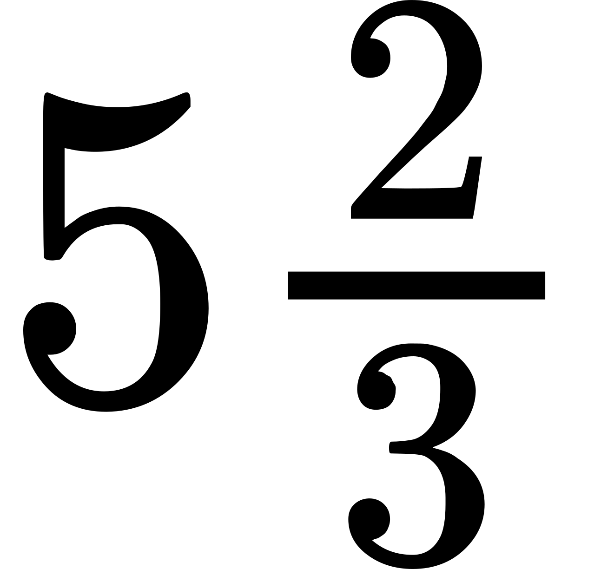

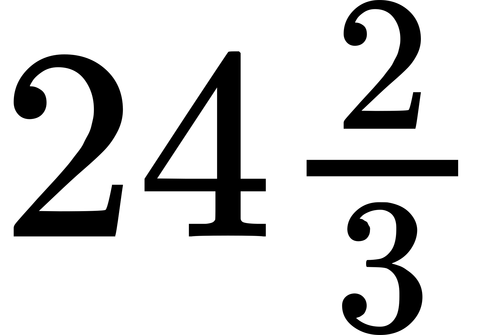
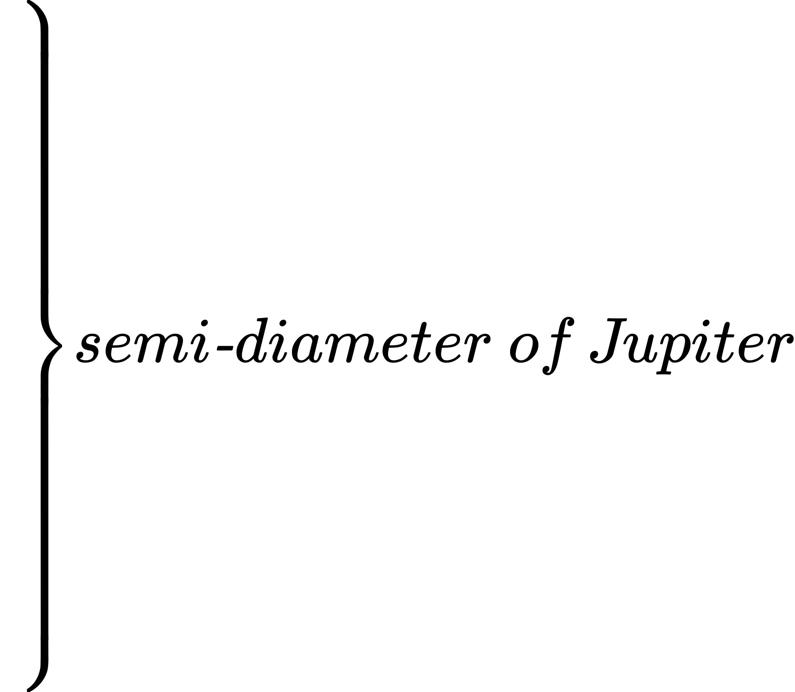
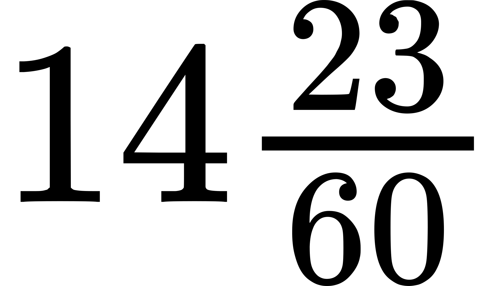
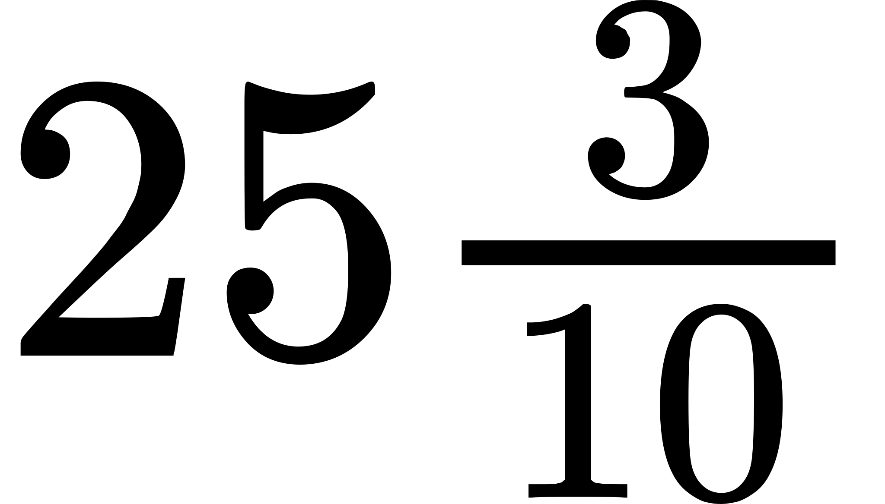
[Pg 383]
[Pg 384]
IN the preceding Books I have laid down the principles of philosophy, principles not philosophical, but mathematical: such, to wit, as we may build our reasonings upon in philosophical inquiries. These principles are the laws and conditions of certain motions, and powers or forces, which chiefly have respect to philosophy; but, lest they should have appeared of themselves dry and barren, I have illustrated them here and there with some philosophical scholiums, giving an account of such things as are of more general nature, and which philosophy seems chiefly to be founded on; such as the density and the resistance of bodies, spaces void of all bodies, and the motion of light and sounds. It remains that, from the same principles, I now demonstrate the frame of the System of the World. Upon this subject I had, indeed, composed the third Book in a popular method, that it might be read by many; but afterward, considering that such as had not sufficiently entered into the principles could not easily discern the strength of the consequences, nor lay aside the prejudices to which they had been many years accustomed, therefore, to prevent the disputes which might be raised upon such accounts, I chose to reduce the substance of this Book into the form of Propositions (in the mathematical way), which should be read by those only who had first made themselves masters of the principles established in the preceding Books: not that I would advise any one to the previous study of every Proposition of those Books; for they abound with such as might cost too much time, even to readers of good mathematical learning. It is enough if one carefully reads the Definitions, the Laws of Motion, and the first three Sections of the first Book. He may then pass on to this Book, and consult such of the remaining Propositions of the first two Books, as the references in this, and his occasions, shall require.
RULE I.
We are to admit no more causes of natural things than such as are both true and sufficient to explain their appearances.
To this purpose the philosophers say that Nature does nothing in vain, and more is in vain when less will serve; for Nature is pleased with simplicity, and affects not the pomp of superfluous causes.
RULE II.
Therefore to the same natural effects we must, as far as possible, assign the same causes.
As to respiration in a man and in a beast; the descent of stones in Europe and in America; the light of our culinary fire and of the sun; the reflection of light in the earth, and in the planets.
RULE III.
The qualities of bodies, which admit neither intension nor remission of degrees, and which are found to belong to all bodies within the reach of our experiments, are to be esteemed the universal qualities of all bodies whatsoever.
For since the qualities of bodies are only known to us by experiments, we are to hold for universal all such as universally agree with experiments; and such as are not liable to diminution can never be quite taken away. We are certainly not to relinquish the evidence of experiments for the sake of dreams and vain fictions of our own devising; nor are we to recede from the analogy of Nature, which uses to be simple, and always consonant to itself. We no other way know the extension of bodies than by our senses, nor do these reach it in all bodies; but because we perceive extension in all that are sensible, therefore we ascribe it universally to all others also. That abundance of bodies are hard, we learn by experience; and because the hardness of the whole arises from the hardness of the parts, we therefore justly infer the hardness of the undivided particles not only of the bodies we feel but of all others. That all bodies are impenetrable, we gather not from reason, but from sensation. The bodies which we handle we find impenetrable, and thence conclude impenetrability to be an universal property of all bodies whatsoever. That all bodies are moveable, and endowed with certain powers (which we call the vires inertiæ) of persevering in their motion, or in their rest, we only infer from the like properties observed in the[Pg 385] bodies which we have seen. The extension, hardness, impenetrability, mobility, and vis inertiæ of the whole, result from the extension, hardness, impenetrability, mobility, and vires inertiæ of the parts; and thence we conclude the least particles of all bodies to be also all extended, and hard and impenetrable, and moveable, and endowed with their proper vires inertiæ. And this is the foundation of all philosophy. Moreover, that the divided but contiguous particles of bodies may be separated from one another, is matter of observation; and, in the particles that remain undivided, our minds are able to distinguish yet lesser parts, as is mathematically demonstrated. But whether the parts so distinguished, and not yet divided, may, by the powers of Nature, be actually divided and separated from one another, we cannot certainly determine. Yet, had we the proof of but one experiment that any undivided particle, in breaking a hard and solid body, suffered a division, we might by virtue of this rule conclude that the undivided as well as the divided particles may be divided and actually separated to infinity.
Lastly, if it universally appears, by experiments and astronomical observations, that all bodies about the earth gravitate towards the earth, and that in proportion to the quantity of matter which they severally contain: that the moon likewise, according to the quantity of its matter, gravitates towards the earth; that, on the other hand, our sea gravitates towards the moon; and all the planets mutually one towards another; and the comets in like manner towards the sun; we must, in consequence of this rule, universally allow that all bodies whatsoever are endowed with a principle of mutual gravitation. For the argument from the appearances concludes with more force for the universal gravitation of all bodies than for their impenetrability; of which, among those in the celestial regions, we have no experiments, nor any manner of observation. Not that I affirm gravity to be essential to bodies: by their vis insita I mean nothing but their vis inertiæ, This is immutable. Their gravity is diminished as they recede from the earth.
RULE IV.
In experimental philosophy we are to look upon propositions collected by general induction from phænomena as accurately or very nearly true, notwithstanding any contrary hypotheses that may be imagined, till such time as other phænomena occur, by which they may either be made more accurate, or liable to exceptions.
[Pg 386]
This rule we must follow, that the argument of induction may not be evaded by hypotheses.
PHÆNOMENON I.
That the circumjovial planets, by radii drawn to Jupiter's centre, describe areas proportional to the times of description; and that their periodic times, the fixed stars being at rest, are in the sesquiplicate proportion of their distances from its centre.
This we know from astronomical observations. For the orbits of these planets differ but insensibly from circles concentric to Jupiter; and their motions in those circles are found to be uniform. And all astronomers agree that their periodic times are in the sesquiplicate proportion of the semi-diameters of their orbits; and so it manifestly appears from the following table.
The periodic times of the satellites of Jupiter.
1d. 18h. 27'. 34''. 3d. 13h. 13' 42''. 7d. 3h. 42' 36''. 16d. 16h. 32' 9''.
The distances of the satellites from Jupiter's centre.
| From the observations of | 1 | 2 | 3 | 4 | |
|---|---|---|---|---|---|
| Borelli |  |
|
14 |  |
 |
| Townly by the Microm. | 5,52 | 8,78 | 13,47 | 24,72 | |
| Cassini by the Telescope | 5 | 8 | 13 | 23 | |
| Cassini by the eclip. of the satel. | 9 |  |
 |
||
| From the periodic times | 5,667 | 9,017 | 14,384 | 25,299 | |
Mr. Pound has determined, by the help of excellent micrometers, the diameters of Jupiter and the elongation of its satellites after the following manner. The greatest heliocentric elongation of the fourth satellite from Jupiter's centre was taken with a micrometer in a 15 feet telescope, and at the mean distance of Jupiter from the earth was found about 8' 16''. The elongation of the third satellite was taken with a micrometer in a telescope of 123 feet, and at the same distance of Jupiter from the earth was found 4' 42''. The greatest elongations of the other satellites, at the same distance of Jupiter from the earth, are found from the periodic times to be 2' 56'' 47''', and 1' 51'' 6'''.
The diameter of Jupiter taken with the micrometer in a 123 feet
telescope several times, and reduced to Jupiter's mean distance
from the earth, proved always less than 40'', never less than 38'',
generally 39''. This diameter in shorter telescopes is 40'', or 41'';
for Jupiter's light is a little dilated by the unequal refrangibility
of the rays, and this dilatation bears a less ratio to the diameter of
Jupiter in the longer and more perfect telescopes than in those which
are shorter and less perfect. The times in[Pg 387] which two satellites, the
first and the third, passed over Jupiter's body, were observed, from
the beginning of the ingress to the beginning of the egress, and from
the complete ingress to the complete egress, with the long telescope.
And from the transit of the first satellite, the diameter of Jupiter at
its mean distance from the earth came forth 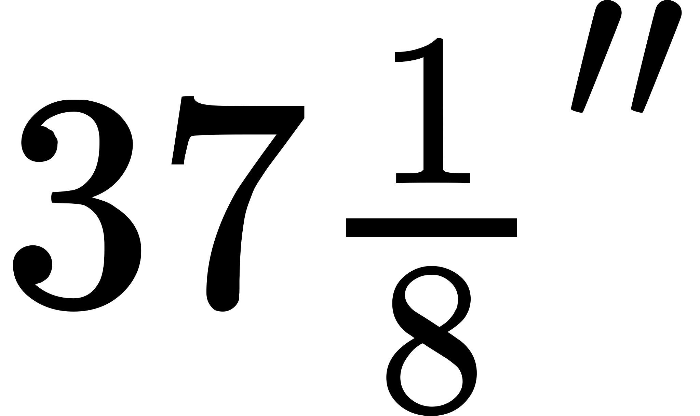
PHÆNOMENON II.
That the circumsaturnal planets, by radii drawn to Saturn's centre, describe areas proportional to the times of description; and that their periodic times, the fixed stars being at rest, are in the sesquiplicate proportion of their distances from its centre.
For, as Cassini from his own observations has determined, their distances from Saturn's centre and their periodic times are as follow.
The periodic times of the satellites of Saturn.
1d. 21h. 18' 27''.
2d. 17h. 41' 22''.
4d. 12h. 25' 12''.
15d. 22h. 41' 14''.
79d. 7h. 48' 00''.
The distances of the satellites from Saturn's centre, in semi-diameters of its ring.
| From observations | 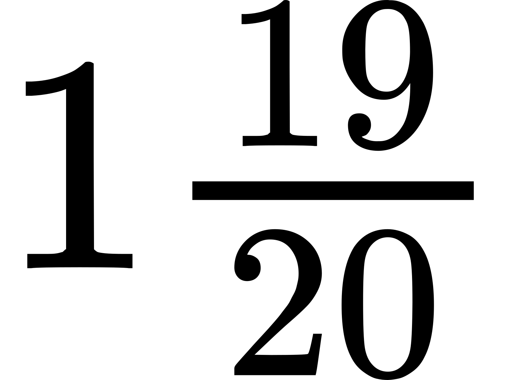 |
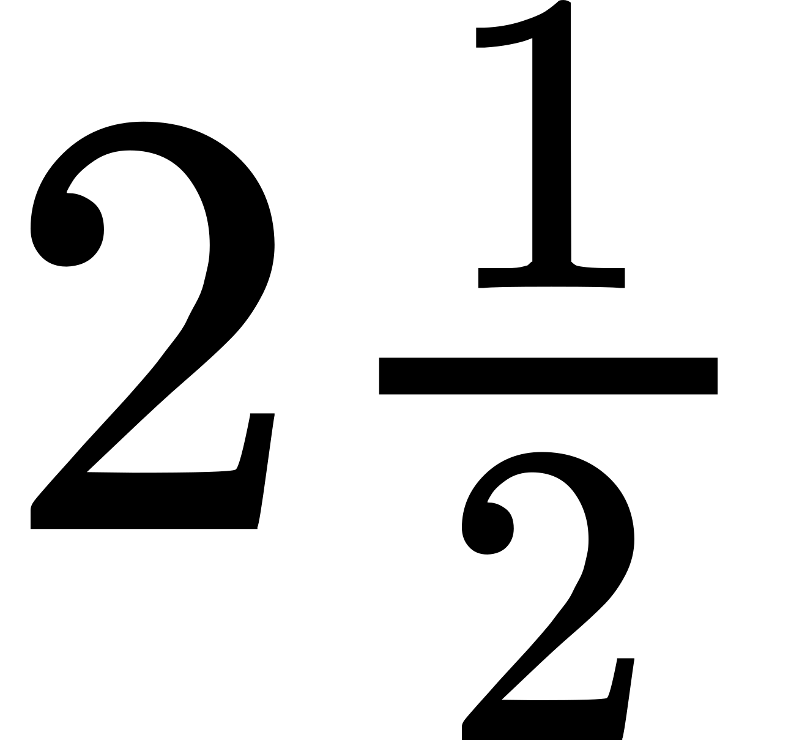 |
 |
8 | 24 |
| From the periodic times | 1,93 | 2,47 | 3,45 | 8 | 23,35 |
The greatest elongation of the fourth satellite from Saturn's centre is commonly determined from the observations to be eight of these semi-diameters very nearly. But the greatest elongation of this satellite from Saturn's centre, when taken with an excellent micrometer in Mr. Huygens' telescope of 123 feet, appeared to be eight semi-diameters and
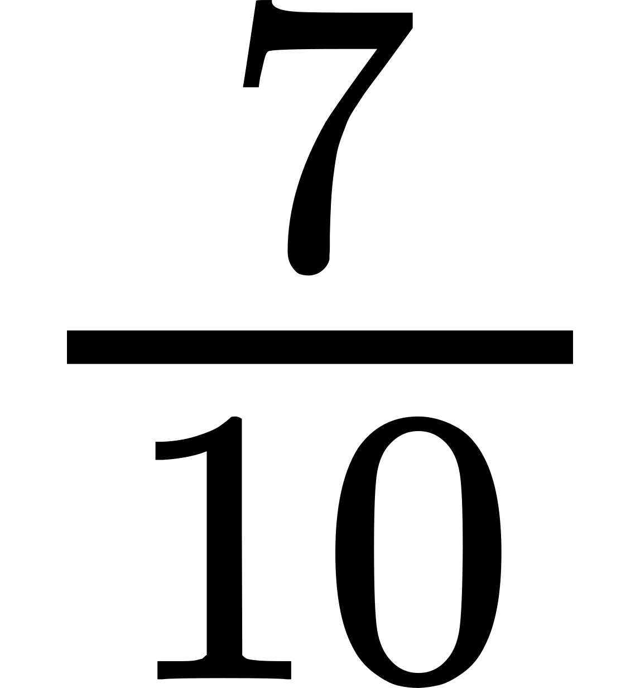
of a semi-diameter. And from this observation and the periodic times the distances of the satellites from Saturn's centre in semi-diameters of the ring are 2,1. 2,69. 3,75. 8,7. and 25,35. The diameter of Saturn observed in the same telescope was found to be to the diameter of the ring as 3 to 7; and the diameter of the ring, May 28-29, 1719, was found to be 43''; and thence the diameter of the ring when Saturn is at its mean distance from the earth is 42'', and the diameter of Saturn 18''. These things appear so in very long and excellent telescopes, because in such telescopes the apparent magnitudes of the heavenly bodies bear a greater proportion to the dilatation of light in the extremities of those bodies than in shorter telescopes.[Pg 388] If we, then, reject all the spurious light, the diameter of Saturn will not amount to more than 16''.PHÆNOMENON III.
That the five primary planets, Mercury, Venus, Mars, Jupiter, and Saturn, with their several orbits, encompass the sun.
That Mercury and Venus revolve about the sun, is evident from their moon-like appearances. When they shine out with a full face, they are, in respect of us, beyond or above the sun; when they appear half full, they are about the same height on one side or other of the sun; when horned, they are below or between us and the sun; and they are sometimes, when directly under, seen like spots traversing the sun's disk. That Mars surrounds the sun, is as plain from its full face when near its conjunction with the sun, and from the gibbous figure which it shews in its quadratures. And the same thing is demonstrable of Jupiter and Saturn, from their appearing full in all situations; for the shadows of their satellites that appear sometimes upon their disks make it plain that the light they shine with is not their own, but borrowed from the sun.
PHÆNOMENON IV.
That the fixed stars being at rest, the periodic times of the five primary planets, and (whether of the sun about the earth, or) of the earth about the sun, are in the sesquiplicate proportion of their mean distances from the sun.
This proportion, first observed by Kepler, is now received by all astronomers; for the periodic times are the same, and the dimensions of the orbits are the same, whether the sun revolves about the earth, or the earth about the sun. And as to the measures of the periodic times, all astronomers are agreed about them. But for the dimensions of the orbits, Kepler and Bullialdus, above all others, have determined them from observations with the greatest accuracy; and the mean distances corresponding to the periodic times differ but insensibly from those which they have assigned, and for the most part fall in between them; as we may see from the following table.
The periodic times with respect to the fixed stars, of the planets and earth revolving about the sun, in days and decimal parts of a day.
| ♄ | ♃ | ♂ | ♁ | ♀ | ☿ |
| 10759,275 | 4332,514 | 686,9785 | 365,2565 | 224,6176 | 87,9692. |
The mean distances of the planets and of the earth from the sun.
| ♄ | ♃ | ♂ | |
| According to Kepler | 951000 | 519650 | 152350 |
| " to Bullialdus | 954198 | 522520 | 152350 |
| " to the periodic times | 954006 | 520096 | 152369 |
[Pg 389]
| ♁ | ♀ | ☿ | |
| According to Kepler | 100000 | 72400 | 38806 |
| " to Bullialdus | 100000 | 72398 | 38585 |
| " to the periodic times | 100000 | 72333 | 38710 |
As to Mercury and Venus, there can be no doubt about their distances from the sun; for they are determined by the elongations of those planets from the sun; and for the distances of the superior planets, all dispute is cut off by the eclipses of the satellites of Jupiter. For by those eclipses the position of the shadow which Jupiter projects is determined; whence we have the heliocentric longitude of Jupiter. And from its heliocentric and geocentric longitudes compared together, we determine its distance.
PHÆNOMENON V.
Then the primary planets, by radii drawn to the earth, describe areas no wise proportional to the times; but that the areas which they describe by radii drawn to the sun are proportional to the times of description.
For to the earth they appear sometimes direct, sometimes stationary, nay, and sometimes retrograde. But from the sun they are always seen direct, and to proceed with a motion nearly uniform, that is to say, a little swifter in the perihelion and a little slower in the aphelion distances, so as to maintain an equality in the description of the areas. This a noted proposition among astronomers, and particularly demonstrable in Jupiter, from the eclipses of his satellites; by the help of which eclipses, as we have said, the heliocentric longitudes of that planet, and its distances from the sun, are determined.
PHÆNOMENON VI.
That the moon, by a radius drawn to the earth's centre, describes an area proportional to the time of description.
[Pg 390]
This we gather from the apparent motion of the moon, compared with its apparent diameter. It is true that the motion of the moon is a little disturbed by the action of the sun: but in laying down these Phænomena I neglect those small and inconsiderable errors.
PROPOSITION I. THEOREM I.
That the forces by which the circumjovial planets are continually drawn off from rectilinear motions, and retained in their proper orbits, tend to Jupiter's centre; and are reciprocally as the squares of the distances of the places of those planets from that centre.
The former part of this Proposition appears from Phæn. I, and Prop. II or III, Book I; the latter from Phæn. I, and Cor. 6, Prop. IV, of the same Book.
The same thing we are to understand of the planets which encompass Saturn, by Phæn. II.
PROPOSITION II. THEOREM II.
That the forces by which the primary planets are continually drawn off from rectilinear motions, and retained in their proper orbits, tend to the sun; and are reciprocally as the squares of the distances of the places of those planets from the sun's centre.
The former part of the Proposition is manifest from Phæn. V, and Prop. II, Book I; the latter from Phæn. IV, and Cor. 6, Prop. IV, of the same Book. But this part of the Proposition is, with great accuracy, demonstrable from the quiescence of the aphelion points; for a very small aberration from the reciprocal duplicate proportion would (by Cor. 1, Prop. XLV, Book I) produce a motion of the apsides sensible enough in every single revolution, and in many of them enormously great.
PROPOSITION III. THEOREM III.
That the force by which the moon is retained in its orbit tends to the earth; and is reciprocally as the square of the distance of its place from the earth's centre.
The former part of the Proposition is evident from Phæn. VI, and
Prop. II or III, Book I; the latter from the very slow motion of
the moon's apogee; which in every single revolution amounting but
to 3° 3' in consequentia, may be neglected. For (by Cor. 1,
Prop. XLV, Book I) it appears, that, if the distance of the moon
from the earth's centre is to the semi-diameter of the earth as D to
1, the force, from which such a motion will result, is reciprocally
as 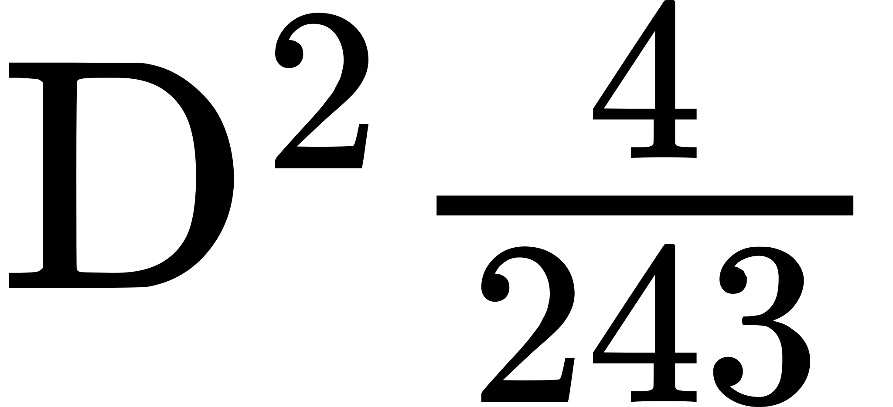 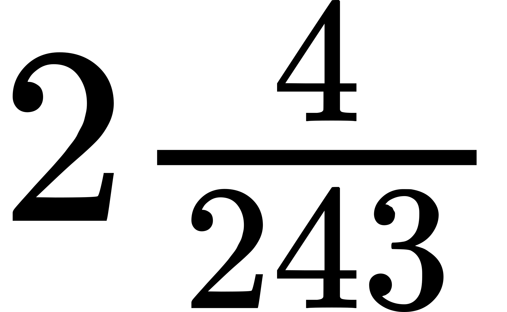 times nearer to the
duplicate than to the triplicate proportion. But in regard that this
motion is owing to the action of the sun (as we shall afterwards[Pg 391]
shew), it is here to be neglected. The action of the sun, attracting
the moon from the earth, is nearly as the moon's distance from the
earth; and therefore (by what we have shewed in Cor. 2, Prop. XLV,
Book I) is to the centripetal force of the moon as 2 to 357,45, or
nearly so; that is, as 1 to
times nearer to the
duplicate than to the triplicate proportion. But in regard that this
motion is owing to the action of the sun (as we shall afterwards[Pg 391]
shew), it is here to be neglected. The action of the sun, attracting
the moon from the earth, is nearly as the moon's distance from the
earth; and therefore (by what we have shewed in Cor. 2, Prop. XLV,
Book I) is to the centripetal force of the moon as 2 to 357,45, or
nearly so; that is, as 1 to  . And if we neglect so
inconsiderable a force of the sun, the remaining force, by which the
moon is retained in its orb, will be reciprocally as D2. This will yet
more fully appear from comparing this force with the force of gravity,
as is done in the next Proposition.
. And if we neglect so
inconsiderable a force of the sun, the remaining force, by which the
moon is retained in its orb, will be reciprocally as D2. This will yet
more fully appear from comparing this force with the force of gravity,
as is done in the next Proposition.
COR. If we augment the mean centripetal force by which the moon is
retained in its orb, first in the proportion of
to , and then in the duplicate proportion of the
semi-diameter of the earth to the mean distance of the centres of the
moon and earth, we shall have the centripetal force of the moon at
the surface of the earth; supposing this force, in descending to the
earth's surface, continually to increase in the reciprocal duplicate
proportion of the height.
PROPOSITION IV. THEOREM IV.
That the moon gravitates towards the earth, and by the force of gravity is continually drawn off from a rectilinear motion, and retained in its orbit.
The mean distance of the moon from the earth in the syzygies in
semi-diameters of the earth, is, according to Ptolemy and most
astronomers, 59; according to Vendelin and Huygens,
60; to Copernicus, 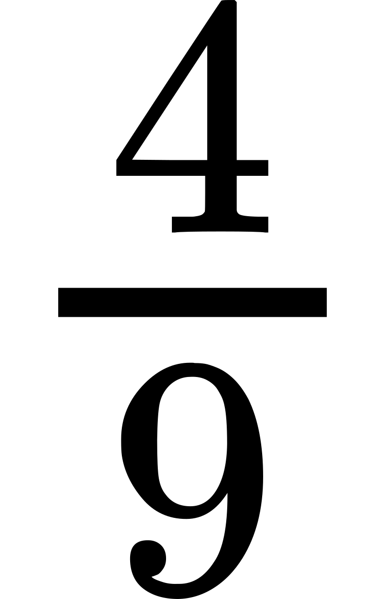 ; to Street,
; and to Tycho,
; to Street,
; and to Tycho,  . But
Tycho, and all that follow his tables of refraction, making
the refractions of the sun and moon (altogether against the nature
of light) to exceed the refractions of the fixed stars, and that by
four or five minutes near the horizon, did thereby increase
the moon's horizontal parallax by a like number of minutes,
that is, by a twelfth or fifteenth part of the whole parallax. Correct
this error, and the distance will become about
. But
Tycho, and all that follow his tables of refraction, making
the refractions of the sun and moon (altogether against the nature
of light) to exceed the refractions of the fixed stars, and that by
four or five minutes near the horizon, did thereby increase
the moon's horizontal parallax by a like number of minutes,
that is, by a twelfth or fifteenth part of the whole parallax. Correct
this error, and the distance will become about  semi-diameters of the earth, near to what others have assigned. Let us
assume the mean distance of 60 diameters in the syzygies; and suppose
one revolution of the moon, in respect of the fixed stars, to be
completed in 27d. 7h. 43', as astronomers have determined; and the
circumference of the earth to amount to 123249600 Paris feet,
as the French have found by mensuration. And now if we imagine the
moon, deprived of all motion, to be let go, so as to descend towards
the earth with the impulse of all that force by which (by Cor. Prop.
III) it is retained in its orb, it will in the space of one minute of
time, describe in its fall
semi-diameters of the earth, near to what others have assigned. Let us
assume the mean distance of 60 diameters in the syzygies; and suppose
one revolution of the moon, in respect of the fixed stars, to be
completed in 27d. 7h. 43', as astronomers have determined; and the
circumference of the earth to amount to 123249600 Paris feet,
as the French have found by mensuration. And now if we imagine the
moon, deprived of all motion, to be let go, so as to descend towards
the earth with the impulse of all that force by which (by Cor. Prop.
III) it is retained in its orb, it will in the space of one minute of
time, describe in its fall  Paris feet. This
we gather by a calculus, founded either upon Prop. XXXVI, Book I, or
(which comes to the same thing) upon Cor. 9, Prop. IV, of the same
Book. For the versed sine of that arc, which the moon, in the space of
one minute of time, would by its mean[Pg 392] motion describe at the distance
of 60 semi-diameters of the earth, is nearly
Paris feet, or more accurately 15 feet, 1 inch, and 1 line
Paris feet. This
we gather by a calculus, founded either upon Prop. XXXVI, Book I, or
(which comes to the same thing) upon Cor. 9, Prop. IV, of the same
Book. For the versed sine of that arc, which the moon, in the space of
one minute of time, would by its mean[Pg 392] motion describe at the distance
of 60 semi-diameters of the earth, is nearly
Paris feet, or more accurately 15 feet, 1 inch, and 1 line
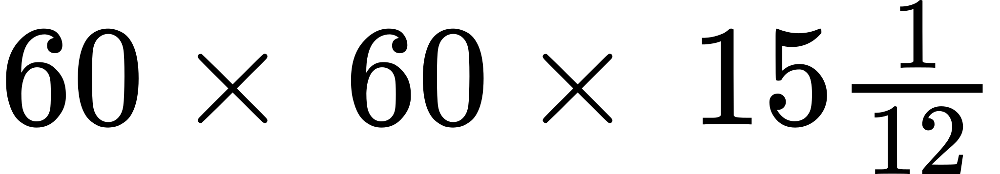
Paris feet; and, in the space of one second of time, to describe of those
feet; or more accurately 15 feet, 1 inch, and 1 line .
And with this very force we actually find that bodies here upon
earth do really descend; for a pendulum oscillating seconds in the
latitude of Paris will be 3 Paris feet, and 8 lines
 in length, as Mr. Huygens has observed. And
the space which a heavy body describes by falling in one second of
time is to half the length of this pendulum in the duplicate ratio of
the circumference of a circle to its diameter (as Mr. Huygens
has also shewn), and is therefore 15 Paris feet, 1 inch, 1
line
in length, as Mr. Huygens has observed. And
the space which a heavy body describes by falling in one second of
time is to half the length of this pendulum in the duplicate ratio of
the circumference of a circle to its diameter (as Mr. Huygens
has also shewn), and is therefore 15 Paris feet, 1 inch, 1
line 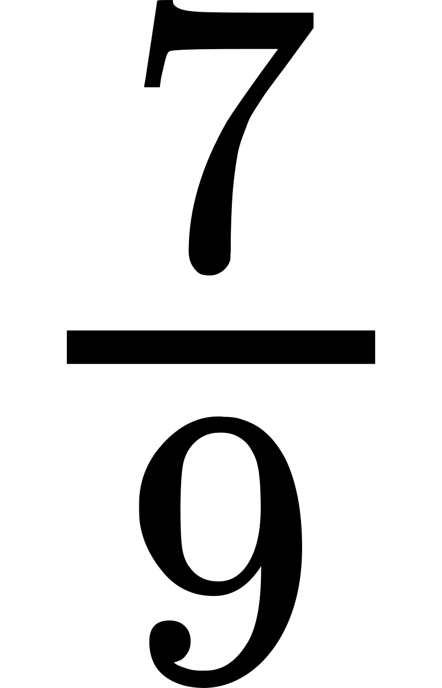
. And therefore the force by which the moon is retained in its orbit becomes, at the very surface of the earth, equal to the force of gravity which we observe in heavy bodies there. And therefore (by Rule I and II) the force by which the moon is retained in its orbit is that very same force which we commonly call gravity; for, were gravity another force different from that, then bodies descending to the earth with the joint impulse of both forces would fall with a double velocity, and in the space of one second of time would describe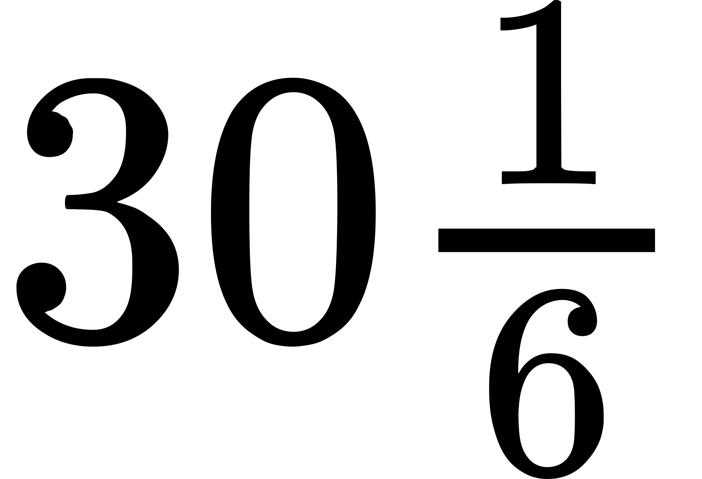
Paris feet; altogether against experience.This calculus is founded on the hypothesis of the earth's standing
still; for if both earth and moon move about the sun, and at the same
time about their common centre of gravity, the distance of the centres
of the moon and earth from one another will be
semi-diameters of the earth; as may be found by a computation from
Prop. LX, Book I.
SCHOLIUM.
The demonstration of this Proposition may be more diffusely explained after the following manner. Suppose several moons to revolve about the earth, as in the system of Jupiter or Saturn; the periodic times of these moons (by the argument of induction) would observe the same law which Kepler found to obtain among the planets; and therefore their centripetal forces would be reciprocally as the squares of the distances from the centre of the earth, by Prop. I, of this Book. Now if the lowest of these were very small, and were so near the earth as almost to touch the tops of the highest mountains, the centripetal force thereof, retaining it in its orb, would be very nearly equal to the weights of any terrestrial bodies that should be found upon the tops of those mountains, as may be known by the foregoing computation. Therefore if the same little moon should be deserted by its centrifugal force that carries it through its orb, and so be[Pg 393] disabled from going onward therein, it would descend to the earth; and that with the same velocity as heavy bodies do actually fall with upon the tops of those very mountains; because of the equality of the forces that oblige them both to descend. And if the force by which that lowest moon would descend were different from gravity, and if that moon were to gravitate towards the earth, as we find terrestrial bodies do upon the tops of mountains, it would then descend with twice the velocity, as being impelled by both these forces conspiring together. Therefore since both these forces, that is, the gravity of heavy bodies, and the centripetal forces of the moons, respect the centre of the earth, and are similar and equal between themselves, they will (by Rule I and II) have one and the same cause. And therefore the force which retains the moon in its orbit is that very force which we commonly call gravity; because otherwise this little moon at the top of a mountain must either be without gravity, or fall twice as swiftly as heavy bodies are wont to do.
PROPOSITION V. THEOREM V.
That the circumjovial planets gravitate towards Jupiter; the circumsaturnal towards Saturn; the circumsolar towards the sun; and by the forces of their gravity are drawn off from rectilinear motions, and retained in curvilinear orbits.
For the revolutions of the circumjovial planets about Jupiter, of the circumsaturnal about Saturn, and of Mercury and Venus, and the other circumsolar planets, about the sun, are appearances of the same sort with the revolution of the moon about the earth; and therefore, by Rule II, must be owing to the same sort of causes; especially since it has been demonstrated, that the forces upon which those revolutions depend tend to the centres of Jupiter, of Saturn, and of the sun; and that those forces, in receding from Jupiter, from Saturn, and from the sun, decrease in the same proportion, and according to the same law, as the force of gravity does in receding from the earth.
COR. 1. There is, therefore, a power of gravity tending to all the planets; for, doubtless, Venus, Mercury, and the rest, are bodies of the same sort with Jupiter and Saturn. And since all attraction (by Law III) is mutual, Jupiter will therefore gravitate towards all his own satellites, Saturn towards his, the earth towards the moon, and the sun towards all the primary planets.
COR. 2. The force of gravity which tends to any one planet is reciprocally as the square of the distance of places from that planet's centre.
COR. 3. All the planets do mutually gravitate towards one another, by Cor. 1 and 2. And hence it is that Jupiter and Saturn, when near their[Pg 394] conjunction, by their mutual attractions sensibly disturb each other's motions. So the sun disturbs the motions of the moon; and both sun and moon disturb our sea, as we shall hereafter explain.
SCHOLIUM.
The force which retains the celestial bodies in their orbits has been hitherto called centripetal force; but it being now made plain that it can be no other than a gravitating force, we shall hereafter call it gravity. For the cause of that centripetal force which retains the moon in its orbit will extend itself to all the planets, by Rule I, II, and IV.
PROPOSITION VI. THEOREM VI.
That all bodies gravitate towards every planet; and that the weights of bodies towards any the same planet, at equal distances from the centre of the planet, are proportional to the quantities of matter which they severally contain.
It has been, now of a long time, observed by others, that all sorts of heavy bodies (allowance being made for the inequality of retardation which they suffer from a small power of resistance in the air) descend to the earth from equal heights in equal times; and that equality of times we may distinguish to a great accuracy, by the help of pendulums. I tried the thing in gold, silver, lead, glass, sand, common salt, wood, water, and wheat. I provided two wooden boxes, round and equal: I filled the one with wood, and suspended an equal weight of gold (as exactly as I could) in the centre of oscillation of the other. The boxes hanging by equal threads of 11 feet made a couple of pendulums perfectly equal in weight and figure, and equally receiving the resistance of the air. And, placing the one by the other, I observed them to play together forward and backward, for a long time, with equal vibrations. And therefore the quantity of matter in the gold (by Cor. 1 and 6, Prop. XXIV, Book II) was to the quantity of matter in the wood as the action of the motive force (or vis motrix) upon all the gold to the action of the same upon all the wood; that is, as the weight of the one to the weight of the other: and the like happened in the other bodies. By these experiments, in bodies of the same weight, I could manifestly have discovered a difference of matter less than the thousandth part of the whole, had any such been. But, without all doubt, the nature of gravity towards the planets is the same as towards the earth. For, should we imagine our terrestrial bodies removed to the orb of the moon, and there, together with the moon, deprived of all motion, to be let go, so as to fall together towards the earth, it is certain, from what we have demonstrated before, that, in equal times, they would describe equal spaces with the moon, and of consequence are to the moon, in quantity of matter, as their weights to its weight. Moreover, since the satellites of Jupiter perform[Pg 395] their revolutions in times which observe the sesquiplicate proportion of their distances from Jupiter's centre, their accelerative gravities towards Jupiter will be reciprocally as the squares of their distances from Jupiter's centre; that is, equal, at equal distances. And, therefore, these satellites, if supposed to fall towards Jupiter from equal heights, would describe equal spaces in equal times, in like manner as heavy bodies do on our earth. And, by the same argument, if the circumsolar planets were supposed to be let fall at equal distances from the sun, they would, in their descent towards the sun, describe equal spaces in equal times. But forces which equally accelerate unequal bodies must be as those bodies: that is to say, the weights of the planets towards the sun must be as their quantities of matter. Further, that the weights of Jupiter and of his satellites towards the sun are proportional to the several quantities of their matter, appears from the exceedingly regular motions of the satellites (by Cor. 3, Prop. LXV, Book I). For if some of those bodies were more strongly attracted to the sun in proportion to their quantity of matter than others, the motions of the satellites would be disturbed by that inequality of attraction (by Cor. 2, Prop. LXV, Book I). If, at equal distances from the sun, any satellite, in proportion to the quantity of its matter, did gravitate towards the sun with a force greater than Jupiter in proportion to his, according to any given proportion, suppose of d to e; then the distance between the centres of the sun and of the satellite's orbit would be always greater than the distance between the centres of the sun and of Jupiter nearly in the subduplicate of that proportion: as by some computations I have found. And if the satellite did gravitate towards the sun with a force, lesser in the proportion of e to d, the distance of the centre of the satellite's orb from the sun would be less than the distance of the centre of Jupiter from the sun in the subduplicate of the same proportion. Therefore if, at equal distances from the sun, the accelerative gravity of any satellite towards the sun were greater or less than the accelerative gravity of Jupiter towards the sun but by one
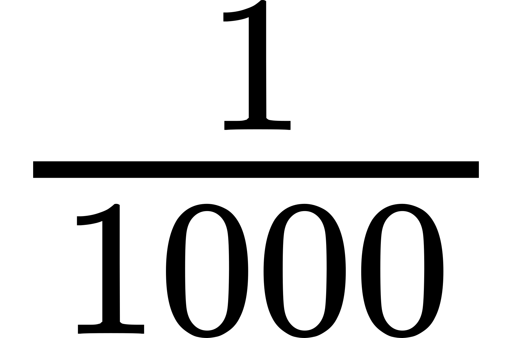
part of the whole gravity, the distance of the centre of the satellite's orbit from the sun would be greater or less than the distance of Jupiter from the sun by one part of the whole distance; that is, by a fifth part of the distance of the utmost satellite from the centre of Jupiter; an eccentricity of the orbit which would be very sensible. But the orbits of the satellites are concentric to Jupiter, and therefore the accelerative gravities of Jupiter, and of all its satellites towards the sun, are equal among themselves. And by the same argument, the weights of Saturn and of his satellites towards the sun, at equal distances from the sun, are as their several quantities of matter; and the weights of the moon and of the earth towards the sun are either none, or accurately proportional to the masses of matter which they contain. But some they are, by Cor. 1 and 3, Prop. V.But further; the weights of all the parts of every planet towards any other[Pg 396] planet are one to another as the matter in the several parts; for if some parts did gravitate more, others less, than for the quantity of their matter, then the whole planet, according to the sort of parts with which it most abounds, would gravitate more or less than in proportion to the quantity of matter in the whole. Nor is it of any moment whether these parts are external or internal; for if, for example, we should imagine the terrestrial bodies with us to be raised up to the orb of the moon, to be there compared with its body: if the weights of such bodies were to the weights of the external parts of the moon as the quantities of matter in the one and in the other respectively; but to the weights of the internal parts in a greater or less proportion, then likewise the weights of those bodies would be to the weight of the whole moon in a greater or less proportion; against what we have shewed above.
COR. 1. Hence the weights of bodies do not depend upon their forms and textures; for if the weights could be altered with the forms, they would be greater or less, according to the variety of forms, in equal matter; altogether against experience.
COR. 2. Universally, all bodies about the earth gravitate towards the earth; and the weights of all, at equal distances from the earth's centre, are as the quantities of matter which they severally contain. This is the quality of all bodies within the reach of our experiments; and therefore (by Rule III) to be affirmed of all bodies whatsoever. If the æther, or any other body, were either altogether void of gravity, or were to gravitate less in proportion to its quantity of matter, then, because (according to Aristotle, Des Cartes, and others) there is no difference betwixt that and other bodies but in mere form of matter, by a successive change from form to form, it might be changed at last into a body of the same condition with those which gravitate most in proportion to their quantity of matter; and, on the other hand, the heaviest bodies, acquiring the first form of that body, might by degrees quite lose their gravity. And therefore the weights would depend upon the forms of bodies, and with those forms might be changed: contrary to what was proved in the preceding Corollary.
COR. 3. All spaces are not equally full; for if all spaces were equally full, then the specific gravity of the fluid which fills the region of the air, on account of the extreme density of the matter, would fall nothing short of the specific gravity of quicksilver, or gold, or any other the most dense body; and, therefore, neither gold, nor any other body, could descend in air; for bodies do not descend in fluids, unless they are specifically heavier than the fluids. And if the quantity of matter in a given space can, by any rarefaction, be diminished, what should hinder a diminution to infinity?
COR. 4. If all the solid particles of all bodies are of the same density, nor can be rarefied without pores, a void, space, or vacuum must be granted.[Pg 397] By bodies of the same density, I mean those whose vires inertiæ are in the proportion of their bulks.
COR. 5. The power of gravity is of a different nature from the power of magnetism; for the magnetic attraction is not as the matter attracted. Some bodies are attracted more by the magnet; others less; most bodies not at all. The power of magnetism in one and the same body may be increased and diminished; and is sometimes far stronger, for the quantity of matter, than the power of gravity; and in receding from the magnet decreases not in the duplicate but almost in the triplicate proportion of the distance, as nearly as I could judge from some rude observations.
PROPOSITION VII. THEOREM VII.
That there is a power of gravity tending to all bodies, proportional to the several quantities of matter which they contain.
That all the planets mutually gravitate one towards another, we have proved before; as well as that the force of gravity towards every one of them, considered apart, is reciprocally as the square of the distance of places from the centre of the planet. And thence (by Prop. LXIX, Book I, and its Corollaries) it follows, that the gravity tending towards all the planets is proportional to the matter which they contain.
Moreover, since all the parts of any planet A gravitate towards any other planet B; and the gravity of every part is to the gravity of the whole as the matter of the part to the matter of the whole; and (by Law III) to every action corresponds an equal re-action; therefore the planet B will, on the other hand, gravitate towards all the parts of the planet A; and its gravity towards any one part will be to the gravity towards the whole as the matter of the part to the matter of the whole. Q.E.D.
COR. 1. Therefore the force of gravity towards any whole planet arises from, and is compounded of, the forces of gravity towards all its parts. Magnetic and electric attractions afford us examples of this; for all attraction towards the whole arises from the attractions towards the several parts. The thing may be easily understood in gravity, if we consider a greater planet, as formed of a number of lesser planets, meeting together in one globe; for hence it would appear that the force of the whole must arise from the forces of the component parts. If it is objected, that, according to this law, all bodies with us must mutually gravitate one towards another, whereas no such gravitation any where appears, I answer, that since the gravitation towards these bodies is to the gravitation towards the whole earth as these bodies are to the whole earth, the gravitation towards them must be far less than to fall under the observation of our senses.
COR. 2. The force of gravity towards the several equal particles of any body is reciprocally as the square of the distance of places from the particles; as appears from Cor. 3, Prop. LXXIV, Book I.
[Pg 398]
PROPOSITION VIII. THEOREM VIII.
In two spheres mutually gravitating each towards the other, if the matter in places on all sides round about and equi-distant from the centres is similar, the weight of either sphere towards the other will be reciprocally as the square of the distance between their centres.
After I had found that the force of gravity towards a whole planet did arise from and was compounded of the forces of gravity towards all its parts, and towards every one part was in the reciprocal proportion of the squares of the distances from the part, I was yet in doubt whether that reciprocal duplicate proportion did accurately hold, or but nearly so, in the total force compounded of so many partial ones; for it might be that the proportion which accurately enough took place in greater distances should be wide of the truth near the surface of the planet, where the distances of the particles are unequal, and their situation dissimilar. But by the help of Prop. LXXV and LXXVI, Book I, and their Corollaries, I was at last satisfied of the truth of the Proposition, as it now lies before us.
COR. 1. Hence we may find and compare together the weights of bodies
towards different planets; for the weights of bodies revolving in
circles about planets are (by Cor. 2, Prop. IV, Book I) as the
diameters of the circles directly, and the squares of their periodic
times reciprocally; and their weights at the surfaces of the planets,
or at any other distances from their centres, are (by this Prop.)
greater or less in the reciprocal duplicate proportion of the
distances. Thus from the periodic times of Venus, revolving about
the sun, in 224d. 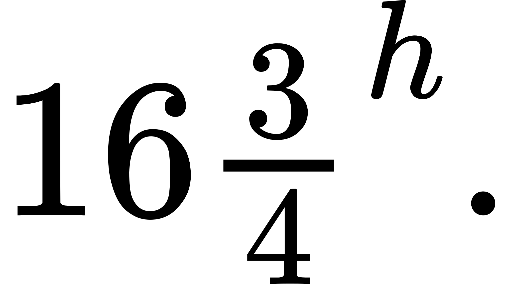 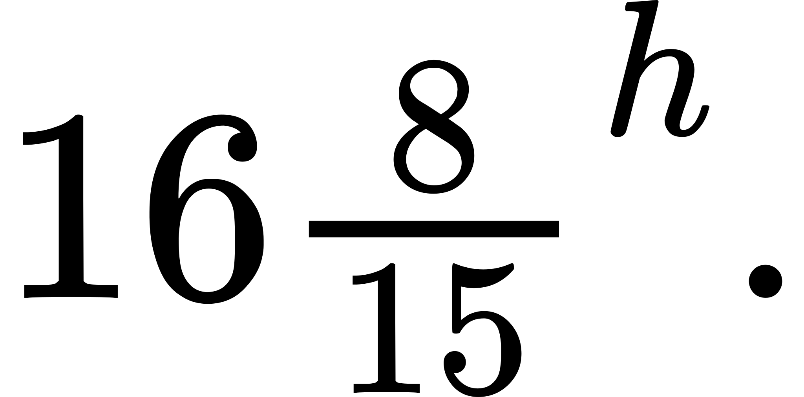 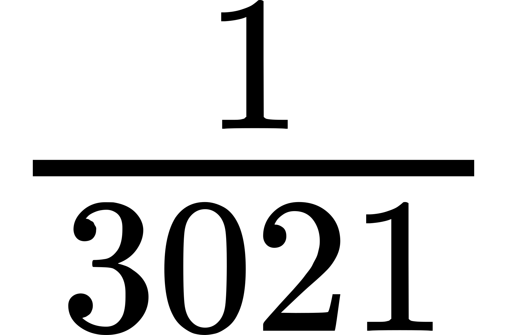
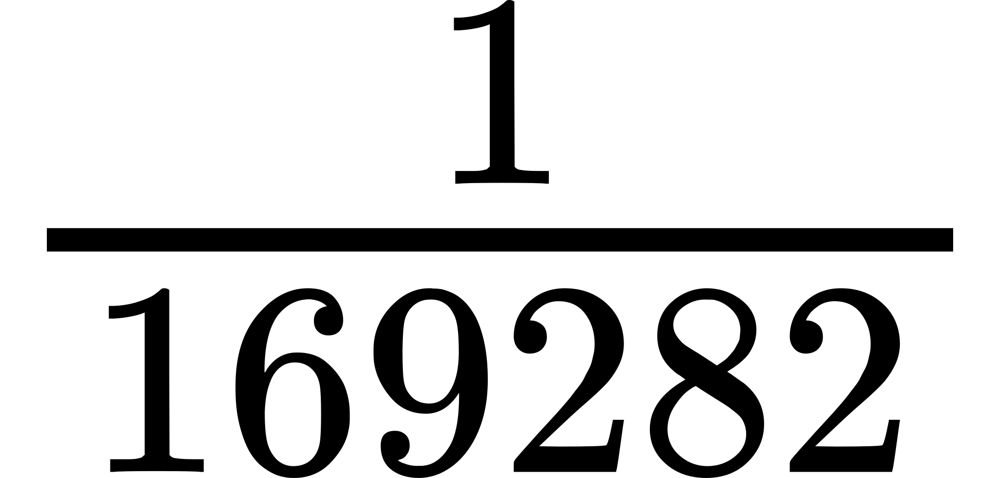
respectively. Then because as the distances are increased or diminished, the weights are diminished or increased in a duplicate ratio, the weights of equal bodies towards the sun, Jupiter, Saturn, and the earth, at the distances 10000, 997, 791, and 109 from their centres, that is, at their very superficies, will be as 10000, 943, 529, and 435 respectively. How much the weights of bodies are at the superficies of the moon, will be shewn hereafter.COR. 2. Hence likewise we discover the quantity of matter in the several[Pg 399] planets; for their quantities of matter are as the forces of gravity at equal distances from their centres; that is, in the sun, Jupiter, Saturn, and the earth, as 1, , , and respectively. If the parallax of the sun be taken greater or less than 10'' 30''', the quantity of matter in the earth must be augmented or diminished in the triplicate of that proportion.
COR. 3. Hence also we find the densities of the planets; for (by Prop.
LXXII, Book I) the weights of equal and similar bodies towards similar
spheres are, at the surfaces of those spheres, as the diameters of the
spheres; and therefore the densities of dissimilar spheres are as those
weights applied to the diameters of the spheres. But the true diameters
of the Sun, Jupiter, Saturn, and the earth, were one to another as
10000, 997, 791, and 109; and the weights towards the same as 10000,
943, 529, and 435 respectively; and therefore their densities are as
100, 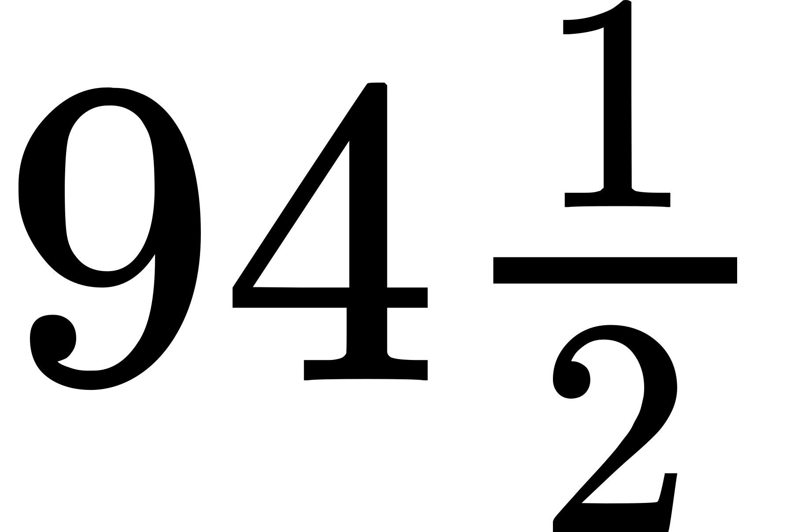
COR. 4. The smaller the planets are, they are, cæteris paribus, of so much the greater density; for so the powers of gravity on their several surfaces come nearer to equality. They are likewise, cæteris paribus, of the greater density, as they are nearer to the sun. So Jupiter is more dense than Saturn, and the earth than Jupiter; for the planets were to be placed at different distances from the sun, that, according to their degrees of density, they might enjoy a greater or less proportion to the sun's heat. Our water, if it were removed as far as the orb of Saturn, would be converted into ice, and in the orb of Mercury would quickly fly away in vapour; for the light of the sun, to which its heat is proportional, is seven times denser in the orb of Mercury than with us: and by the thermometer I have found that a sevenfold heat of our summer sun will make water boil. Nor are we to doubt that the matter of Mercury is adapted to its heat, and is therefore more dense than the matter of our earth; since, in a denser matter, the operations of Nature require a stronger heat.
PROPOSITION IX. THEOREM IX.
That the force of gravity, considered downward from the surface of the planets, decreases nearly in the proportion, of the distances from their centres.
If the matter of the planet were of an uniform density, this Proposition would be accurately true (by Prop. LXXIII. Book I). The error,[Pg 400] therefore, can be no greater than what may arise from the inequality of the density.
PROPOSITION X. THEOREM X.
That the motions of the planets in the heavens may subsist an exceedingly long time.
In the Scholium of Prop. XL, Book II, I have shewed that a globe of
water frozen into ice, and moving freely in our air, in the time that
it would describe the length of its semi-diameter, would lose by the
resistance of the air  part of its motion; and the
same proportion holds nearly in all globes, how great soever, and moved
with whatever velocity. But that our globe of earth is of greater
density than it would be if the whole consisted of water only, I thus
make out. If the whole consisted of water only, whatever was of less
density than water, because of its less specific gravity, would emerge
and float above. And upon this account, if a globe of terrestrial
matter, covered on all sides with water, was less dense than water, it
would emerge somewhere; and, the subsiding water falling back, would be
gathered to the opposite side. And such is the condition of our earth,
which in a great measure is covered with seas. The earth, if it was not
for its greater density, would emerge from the seas, and, according
to its degree of levity, would be raised more or less above their
surface, the water of the seas flowing backward to the opposite side.
By the same argument, the spots of the sun, which float upon the lucid
matter thereof, are lighter than that matter; and, however the planets
have been formed while they were yet in fluid masses, all the heavier
matter subsided to the centre. Since, therefore, the common matter of
our earth on the surface thereof is about twice as heavy as water, and
a little lower, in mines, is found about three, or four, or even five
times more heavy, it is probable that the quantity of the whole matter
of the earth may be five or six times greater than if it consisted all
of water; especially since I have before shewed that the earth is about
four times more dense than Jupiter. If, therefore, Jupiter is a little
more dense than water, in the space of thirty days, in which that
planet describes the length of 459 of its semi-diameters, it would, in
a medium of the same density with our air, lose almost a tenth part of
its motion. But since the resistance of mediums decreases in proportion
to their weight or density, so that water, which is
part of its motion; and the
same proportion holds nearly in all globes, how great soever, and moved
with whatever velocity. But that our globe of earth is of greater
density than it would be if the whole consisted of water only, I thus
make out. If the whole consisted of water only, whatever was of less
density than water, because of its less specific gravity, would emerge
and float above. And upon this account, if a globe of terrestrial
matter, covered on all sides with water, was less dense than water, it
would emerge somewhere; and, the subsiding water falling back, would be
gathered to the opposite side. And such is the condition of our earth,
which in a great measure is covered with seas. The earth, if it was not
for its greater density, would emerge from the seas, and, according
to its degree of levity, would be raised more or less above their
surface, the water of the seas flowing backward to the opposite side.
By the same argument, the spots of the sun, which float upon the lucid
matter thereof, are lighter than that matter; and, however the planets
have been formed while they were yet in fluid masses, all the heavier
matter subsided to the centre. Since, therefore, the common matter of
our earth on the surface thereof is about twice as heavy as water, and
a little lower, in mines, is found about three, or four, or even five
times more heavy, it is probable that the quantity of the whole matter
of the earth may be five or six times greater than if it consisted all
of water; especially since I have before shewed that the earth is about
four times more dense than Jupiter. If, therefore, Jupiter is a little
more dense than water, in the space of thirty days, in which that
planet describes the length of 459 of its semi-diameters, it would, in
a medium of the same density with our air, lose almost a tenth part of
its motion. But since the resistance of mediums decreases in proportion
to their weight or density, so that water, which is
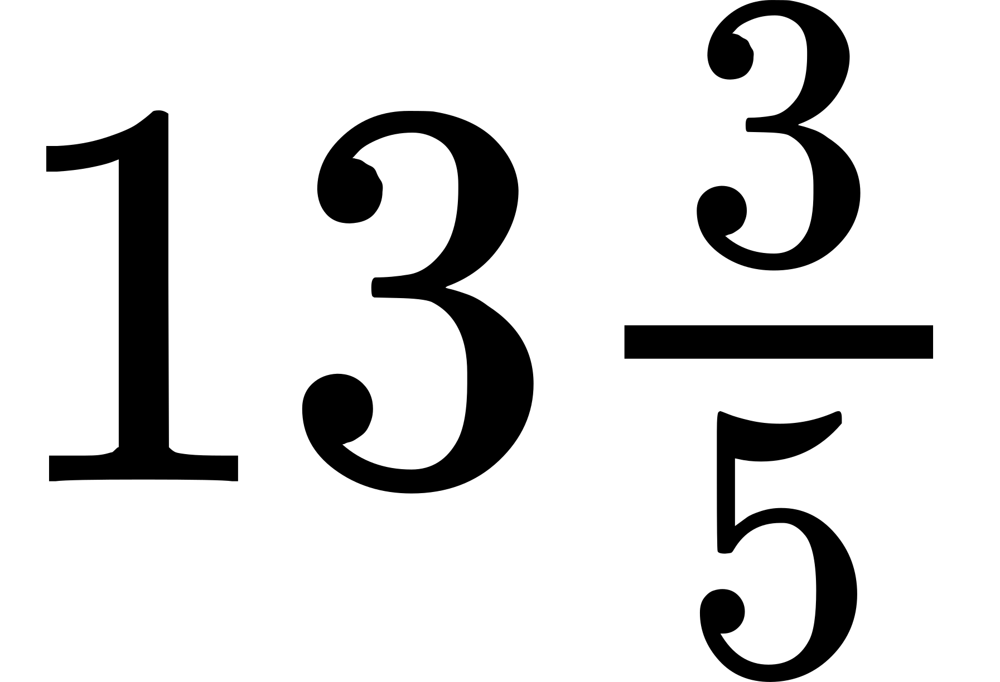
times lighter than quicksilver, resists less in that proportion; and air, which is 860 times lighter than water, resists less in the same proportion; therefore in the heavens, where the weight of the medium in which the planets move is immensely diminished, the resistance will almost vanish.It is shewn in the Scholium of Prop. XXII, Book II, that at the height of 200 miles above the earth the air is more rare than it is at the superficies of the earth in the ratio of 30 to 0,0000000000003998, or as[Pg 401] 75000000000000 to 1 nearly. And hence the planet Jupiter, revolving in a medium of the same density with that superior air, would not lose by the resistance of the medium the 1000000th part of its motion in 1000000 years. In the spaces near the earth the resistance is produced only by the air, exhalations, and vapours. When these are carefully exhausted by the air-pump from under the receiver, heavy bodies fall within the receiver with perfect freedom, and without the least sensible resistance: gold itself, and the lightest down, let fall together, will descend with equal velocity; and though they fall through a space of four, six, and eight feet, they will come to the bottom at the same time; as appears from experiments. And therefore the celestial regions being perfectly void of air and exhalations, the planets and comets meeting no sensible resistance in those spaces will continue their motions through them for an immense tract of time.
HYPOTHESIS I.
That the centre of the system of the world is immovable.
This is acknowledged by all, while some contend that the earth, others that the sun, is fixed in that centre. Let us see what may from hence follow.
PROPOSITION XI. THEOREM XI.
That the common centre of gravity of the earth, the sun, and all the planets, is immovable.
For (by Cor. 4 of the Laws) that centre either is at rest, or moves uniformly forward in a right line; but if that centre moved, the centre of the world would move also, against the Hypothesis.
PROPOSITION XII. THEOREM XII.
That the sun is agitated by a perpetual motion, but never recedes far from the common centre of gravity of all the planets.
For since (by Cor. 2, Prop. VIII) the quantity of matter in the sun is to the quantity of matter in Jupiter as 1067 to 1; and the distance of Jupiter from the sun is to the semi-diameter of the sun in a proportion but a small matter greater, the common centre of gravity of Jupiter and the sun will fall upon a point a little without the surface of the sun. By the same argument, since the quantity of matter in the sun is to the quantity of matter in Saturn as 3021 to 1, and the distance of Saturn from the sun is to the semi-diameter of the sun in a proportion but a small matter less, the common centre of gravity of Saturn and the sun will fall upon a point a little within the surface of the sun. And, pursuing the principles of this computation, we should find that though the earth and all the planets were placed on one side of the sun, the distance of the common centre of gravity of all from the centre of the sun would scarcely amount to one diameter of[Pg 402] the sun. In other cases, the distances of those centres are always less; and therefore, since that centre of gravity is in perpetual rest, the sun, according to the various positions of the planets, must perpetually be moved every way, but will never recede far from that centre.
COR. Hence the common centre of gravity of the earth, the sun, and all the planets, is to be esteemed the centre of the world; for since the earth, the sun, and all the planets, mutually gravitate one towards another, and are therefore, according to their powers of gravity, in perpetual agitation, as the Laws of Motion require, it is plain that their moveable centres cannot be taken for the immovable centre of the world. If that body were to be placed in the centre, towards which other bodies gravitate most (according to common opinion), that privilege ought to be allowed to the sun; but since the sun itself is moved, a fixed point is to be chosen from which the centre of the sun recedes least, and from which it would recede yet less if the body of the sun were denser and greater, and therefore less apt to be moved.
PROPOSITION XIII. THEOREM XIII.
The planets move in ellipses which have their common focus in the centre of the sun; and, by radii drawn, to that centre, they describe areas proportional to the times of description.
We have discoursed above of these motions from the Phænomena. Now that we know the principles on which they depend, from those principles we deduce the motions of the heavens à priori. Because the weights of the planets towards the sun are reciprocally as the squares of their distances from the sun's centre, if the sun was at rest, and the other planets did not mutually act one upon another, their orbits would be ellipses, having the sun in their common focus; and they would describe areas proportional to the times of description, by Prop. I and XI, and Cor. 1, Prop. XIII, Book I. But the mutual actions of the planets one upon another are so very small, that they may be neglected; and by Prop. LXVI, Book I, they less disturb the motions of the planets around the sun in motion than if those motions were performed about the sun at rest.
It is true, that the action of Jupiter upon Saturn is not to be
neglected: for the force of gravity towards Jupiter is to the force
of gravity towards the sun (at equal distances, Cor. 2, Prop. VIII)
as 1 to 1067; and therefore in the conjunction of Jupiter and Saturn,
because the distance of Saturn from Jupiter is to the distance of
Saturn from the sun almost as 4 to 9, the gravity of Saturn towards
Jupiter will be to the gravity of Saturn towards the sun as 81 to 16
× 1067; or, as 1 to about 211. And hence arises a perturbation of
the orb of Saturn in every conjunction of this planet with Jupiter,
so sensible, that astronomers are puzzled with it. As the planet[Pg 403]
is differently situated in these conjunctions, its eccentricity is
sometimes augmented, sometimes diminished; its aphelion is sometimes
carried forward, sometimes backward, and its mean motion is by turns
accelerated and retarded; yet the whole error in its motion about
the sun, though arising from so great a force, may be almost avoided
(except in the mean motion) by placing the lower focus of its orbit
in the common centre of gravity of Jupiter and the sun (according to
Prop. LXVII, Book I), and therefore that error, when it is greatest,
scarcely exceeds two minutes; and the greatest error in the mean motion
scarcely exceeds two minutes yearly. But in the conjunction of Jupiter
and Saturn, the accelerative forces of gravity of the sun towards
Saturn, of Jupiter towards Saturn, and of Jupiter towards the sun, are
almost as 16, 81, and 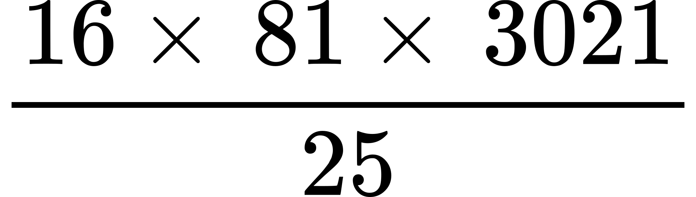
PROPOSITION XIV. THEOREM XIV.
The aphelions and nodes of the orbits of the planets are fixed.
The aphelions are immovable by Prop. XI, Book I; and so are the planes of the orbits, by Prop. I of the same Book. And if the planes are fixed, the nodes must be so too. It is true, that some inequalities may arise from the mutual actions of the planets and comets in their revolutions; but these will be so small, that they may be here passed by.
COR. 1. The fixed stars are immovable, seeing they keep the same position to the aphelions and nodes of the planets.
COR. 2. And since these stars are liable to no sensible parallax from the annual motion of the earth, they can have no force, because of their immense distance, to produce any sensible effect in our system. Not to mention that the fixed stars, every where promiscuously dispersed in the heavens, by their contrary attractions destroy their mutual actions, by Prop. LXX, Book I.
SCHOLIUM.
Since the planets near the sun (viz. Mercury, Venus, the Earth, and[Pg 404] Mars) are so small that they can act with but little force upon each other, therefore their aphelions and nodes must be fixed, excepting in so far as they are disturbed by the actions of Jupiter and Saturn, and other higher bodies. And hence we may find, by the theory of gravity, that their aphelions move a little in consequentia, in respect of the fixed stars, and that in the sesquiplicate proportion of their several distances from the sun. So that if the aphelion of Mars, in the space of a hundred years, is carried 33' 20'' in consequentia, in respect of the fixed stars, the aphelions of the Earth, of Venus, and of Mercury, will in a hundred years be carried forwards 17' 40''; 10' 53'', and 4' 16'', respectively. But these motions are so inconsiderable, that we have neglected them in this Proposition.
PROPOSITION XV. PROBLEM I.
To find the principal diameters of the orbits of the planets.
They are to be taken in the sub-sesquiplicate proportion of the periodic times, by Prop. XV, Book I, and then to be severally augmented in the proportion of the sum of the masses of matter in the sun and each planet to the first of two mean proportionals betwixt that sum and the quantity of matter in the sun, by Prop. LX, Book I.
PROPOSITION XVI. PROBLEM II.
To find the eccentricities and aphelions of the planets.
This Problem is resolved by Prop. XVIII, Book I.
PROPOSITION XVII. THEOREM XV.
That the diurnal motions of the planets are uniform, and that the libration of the moon arises from its diurnal motion.
The Proposition is proved from the first Law of Motion, and Cor. 22, Prop. LXVI, Book I. Jupiter, with respect to the fixed stars, revolves in 9h. 56'; Mars in 24h. 39'; Venus in about 23h.; the Earth in 23h. 56'; the Sun in days, and the moon in 27 days, 7 hours, 43'. These things appear by the Phænomena. The spots in the sun's body return to the same situation on the sun's disk, with respect to the earth, in
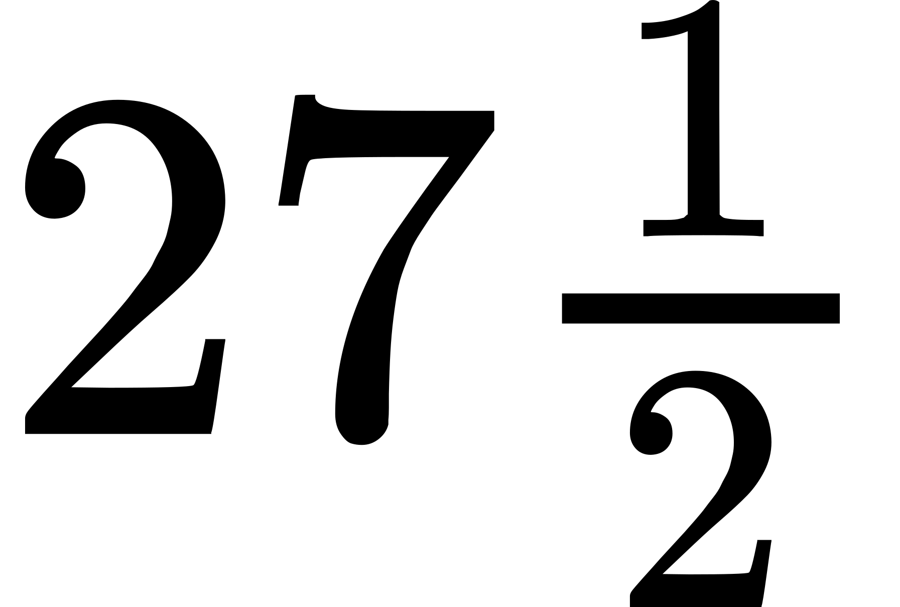
days; and therefore with respect to the fixed stars the sun revolves in about days. But because the lunar day, arising from its uniform revolution about its axis, is menstrual, that is, equal to the time of its periodic revolution in its orb, therefore the same face of the moon will be always nearly turned to the upper focus of its orb; but, as the situation of that focus requires, will deviate a little to one side and to the other from the earth in the lower focus; and this is the libration in longitude; for the libration in latitude arises from the moon's latitude, and the inclination of its axis to the plane of the ecliptic. This theory of the libration of the moon, Mr. N. Mercator[Pg 405] in his Astronomy, published at the beginning of the year 1676, explained more fully out of the letters I sent him. The utmost satellite of Saturn seems to revolve about its axis with a motion like this of the moon, respecting Saturn continually with the same face; for in its revolution round Saturn, as often as it comes to the eastern part of its orbit, it is scarcely visible, and generally quite disappears; which is like to be occasioned by some spots in that part of its body, which is then turned towards the earth, as M. Cassini has observed. So also the utmost satellite of Jupiter seems to revolve about its axis with a like motion, because in that part of its body which is turned from Jupiter it has a spot, which always appears as if it were in Jupiter's own body, whenever the satellite passes between Jupiter and our eye.PROPOSITION XVIII. THEOREM XVI.
That the axes of the planets are less than the diameters drawn perpendicular to the axes.
The equal gravitation of the parts on all sides would give a spherical figure to the planets, if it was not for their diurnal revolution in a circle. By that circular motion it comes to pass that the parts receding from the axis endeavour to ascend about the equator; and therefore if the matter is in a fluid state, by its ascent towards the equator it will enlarge the diameters there, and by its descent towards the poles it will shorten the axis. So the diameter of Jupiter (by the concurring observations of astronomers) is found shorter betwixt pole and pole than from east to west. And, by the same argument, if our earth was not higher about the equator than at the poles, the seas would subside about the poles, and, rising towards the equator, would lay all things there under water.
PROPOSITION XIX. PROBLEM III.
To find the proportion of the axis of a planet to the diameters perpendicular thereto.
Our countryman, Mr. Norwood, measuring a distance of 905751 feet of London measure between London and York, in 1635, and observing the difference of latitudes to be 2° 28', determined the measure of one degree to be 367196 feet of London measure, that is 57300 Paris toises. M. Picart, measuring an arc of one degree, and 22' 55'' of the meridian between Amiens and Malvoisine, found an arc of one degree to be 57060 Paris toises. M. Cassini, the father, measured the distance upon the meridian from the town of Collioure in Roussillon to the Observatory of Paris; and his son added the distance from the Observatory to the Citadel of Dunkirk. The whole distance was
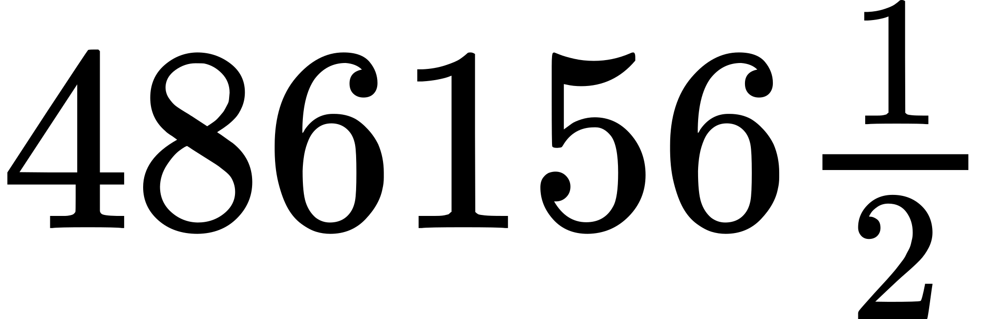
toises and the difference of the latitudes of Collioure and Dunkirk was 8 degrees, and 31'[Pg 406] . Hence an arc of one degree appears to be 57061 Paris toises. And from these measures we conclude that the circumference of the earth is 123249600, and its semi-diameter 19615800 Paris feet, upon the supposition that the earth is of a spherical figure.In the latitude of Paris a heavy body falling in a second of time describes 15 Paris feet, 1 inch,
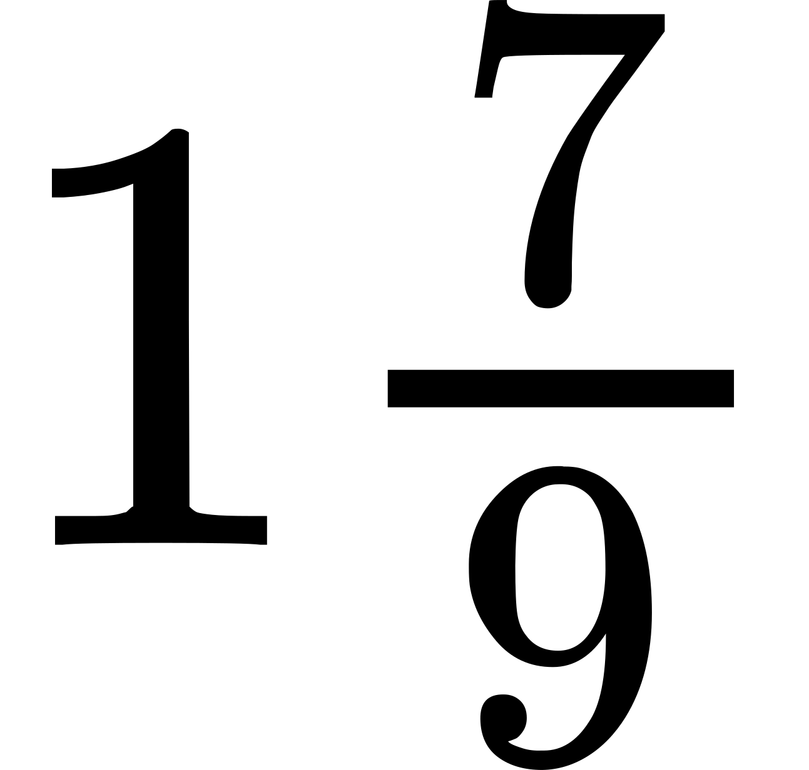
line, as above, that is, 2173 lines . The weight of the body is diminished by the weight of the ambient air. Let us suppose the weight lost thereby to be part of the whole weight; then that heavy body falling in vacuo will describe a height of 2174 lines in one second of time.A body in every sidereal day of 23h. 56' 4'' uniformly revolving in a circle at the distance of 19615800 feet from the centre, in one second of time describes an arc of 1433,46 feet; the versed sine of which is 0,05236561 feet, or 7,54064 lines. And therefore the force with which bodies descend in the latitude of Paris is to the centrifugal force of bodies in the equator arising from the diurnal motion of the earth as 2174 to 7,54064.
The centrifugal force of bodies in the equator is to the centrifugal force with which bodies recede directly from the earth in the latitude of Paris 48° 50' 10'' in the duplicate proportion of the radius to the cosine of the latitude, that is, as 7,54064 to 3,267. Add this force to the force with which bodies descend by their weight in the latitude of Paris, and a body, in the latitude of Paris, falling by its whole undiminished force of gravity, in the time of one second, will describe 2177·267 lines, or 15 Paris feet, 1 inch, and 5,267 lines. And the total force of gravity in that latitude will be to the centrifugal force of bodies in the equator of the earth as 2177,267 to 7,54064, or as 289 to 1.
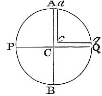
Wherefore if APBQ represent the figure of the earth, now no longer
spherical, but generated by the rotation of an ellipsis about its
lesser axis PQ; and ACQqca a canal full of water, reaching from
the pole Qq to the centre Cc, and thence rising to the
equator Aa; the weight of the water in the leg of the canal
ACca will be to the weight of water in the other leg QCcq
as 289 to 288, because the centrifugal force arising from the circular
motion sustains and takes off one of the 289 parts of the weight (in
the one leg), and the weight of 288 in the other sustains the rest. But
by computation (from Cor. 2, Prop. XCI, Book I) I find, that, if the
matter of the earth was all uniform, and without any motion, and its
axis PQ were to the diameter AB as 100 to 101, the force of gravity
in the place Q towards the earth would be to the force of gravity in
the same place Q towards a sphere described about the centre C with
the radius PC, or QC, as 126 to 125. And, by the same argument, the
force of gravity in the place A towards the spheroid generated by the
rotation of[Pg 407] the ellipsis APBQ about the axis AB is to the force of
gravity in the same place A, towards the sphere described about the
centre C with the radius AC, as 125 to 126. But the force of gravity in
the place A towards the earth is a mean proportional betwixt the forces
of gravity towards the spheroid and this sphere; because the sphere, by
having its diameter PQ diminished in the proportion of 101 to 100, is
transformed into the figure of the earth; and this figure, by having a
third diameter perpendicular to the two diameters AB and PQ diminished
in the same proportion, is converted into the said spheroid; and the
force of gravity in A, in either case, is diminished nearly in the same
proportion. Therefore the force of gravity in A towards the sphere
described about the centre C with the radius AC, is to the force of
gravity in A towards the earth as 126 to 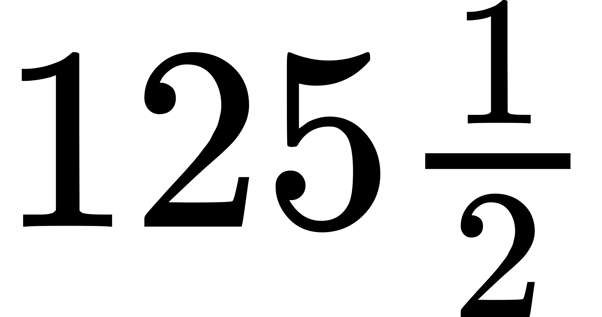
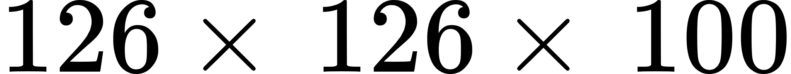
to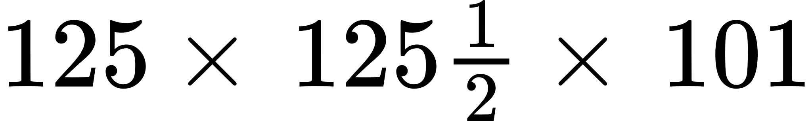
; or as 501 to 500.Now since (by Cor. 3, Prop. XCI, Book I) the force of gravity in either leg of the canal ACca, or QCcq, is as the distance of the places from the centre of the earth, if those legs are conceived to be divided by transverse, parallel, and equidistant surfaces, into parts proportional to the wholes, the weights of any number of parts in the one leg ACca will be to the weights of the same number of parts in the other leg as their magnitudes and the accelerative forces of their gravity conjunctly, that is, as 101 to 100, and 500 to 501, or as 505 to 501. And therefore if the centrifugal force of every part in the leg ACca, arising from the diurnal motion, was to the weight of the same part as 4 to 505, so that from the weight of every part, conceived to be divided into 505 parts, the centrifugal force might take off four of those parts, the weights would remain equal in each leg, and therefore the fluid would rest in an equilibrium. But the centrifugal force of every part is to the weight of the same part as 1 to 289; that is, the centrifugal force, which should be
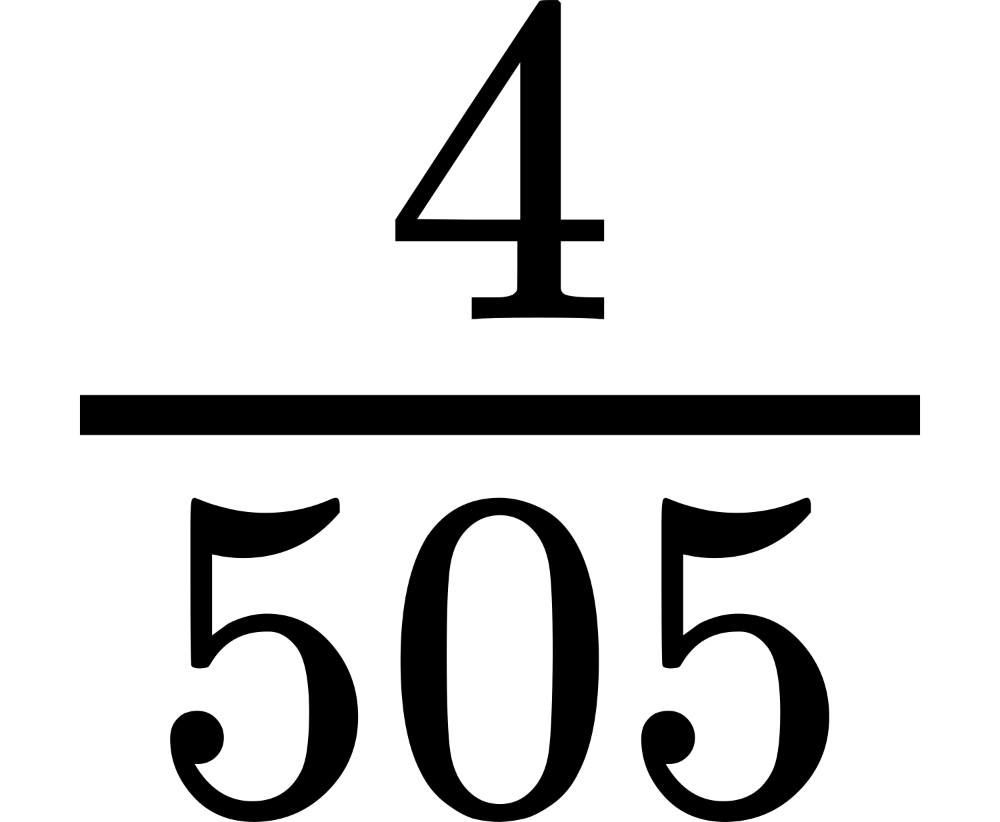
parts of the weight, is only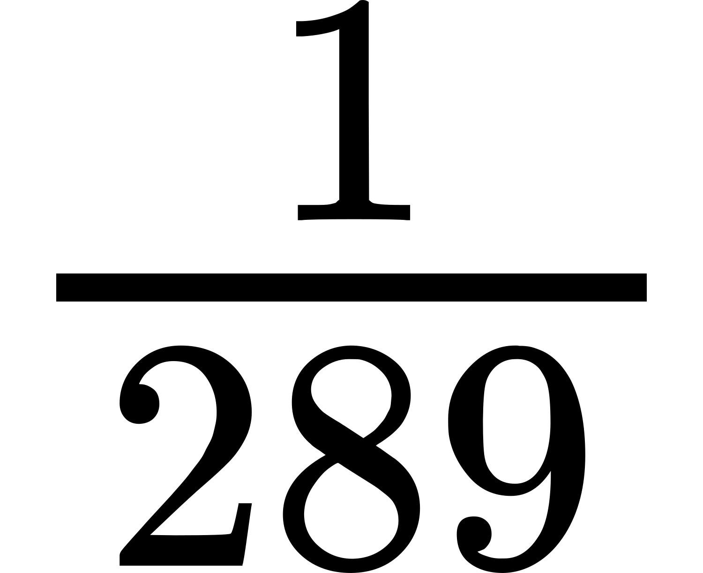
part thereof. And, therefore, I say, by the rule of proportion, that if the centrifugal force make the height of the water in the leg ACca to exceed the height of the water in the leg QCcq by one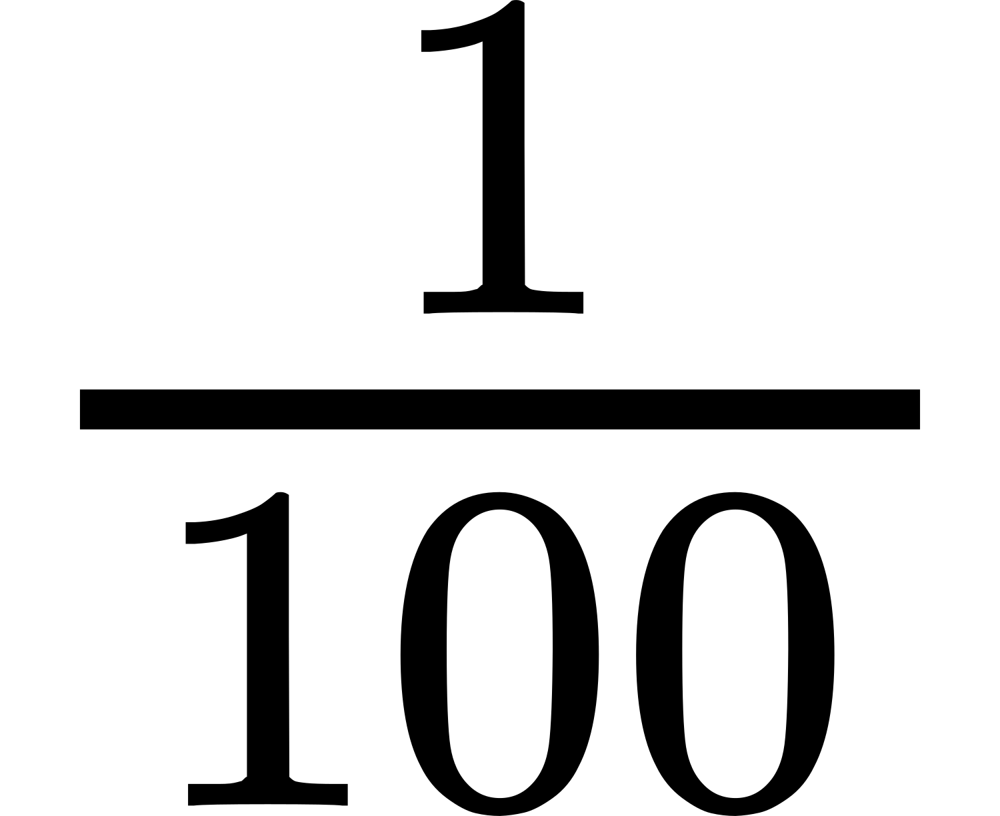
part of its whole height, the centrifugal force will make the excess of the height in the leg ACca only part of the height of the water in the other leg QCcq; and therefore the diameter of the earth at the equator, is to its diameter from pole to pole as 230 to 229. And since the mean semi-diameter[Pg 408] of the earth, according to Picart's mensuration, is 19615800 Paris feet, or 3923,16 miles (reckoning 5000 feet to a mile), the earth will be higher at the equator than at the poles by 85472 feet, or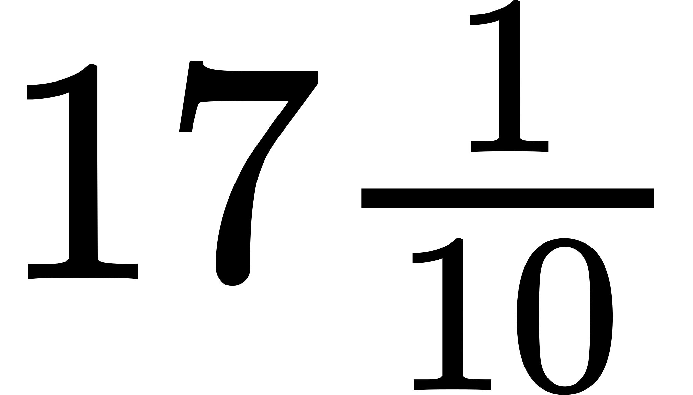
miles. And its height at the equator will be about 19658600 feet, and at the poles 19573000 feet.If, the density and periodic time of the diurnal revolution remaining the same, the planet was greater or less than the earth, the proportion of the centrifugal force to that of gravity, and therefore also of the diameter betwixt the poles to the diameter at the equator, would likewise remain the same. But if the diurnal motion was accelerated or retarded in any proportion, the centrifugal force would be augmented or diminished nearly in the same duplicate proportion; and therefore the difference of the diameters will be increased or diminished in the same duplicate ratio very nearly. And if the density of the planet was augmented or diminished in any proportion, the force of gravity tending towards it would also be augmented or diminished in the same proportion: and the difference of the diameters contrariwise would be diminished in proportion as the force of gravity is augmented, and augmented in proportion as the force of gravity is diminished. Wherefore, since the earth, in respect of the fixed stars, revolves in 23h. 56', but Jupiter in 9h. 56', and the squares of their periodic times are as 29 to 5, and their densities as 400 to , the difference of the diameters of Jupiter will be to its lesser diameter as
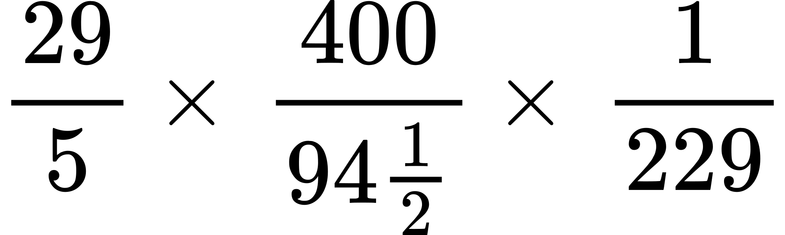
to 1, or as 1 to , nearly. Therefore the diameter of Jupiter from east to west is to its diameter from pole to pole nearly as to . Therefore since its greatest diameter is 37'', its lesser diameter lying between the poles will be 33'' 25'''. Add thereto about 3'' for the irregular refraction of light, and the apparent diameters of this planet will become 40'' and 36'' 25'''; which are to each other as to , very nearly. These things are so upon the supposition that the body of Jupiter is uniformly dense. But now if its body be denser towards the plane of the equator than towards the poles, its diameters may be to each other as 12 to 11, or 13 to 12, or perhaps as 14 to 13.And Cassini observed in the year 1691, that the diameter of Jupiter reaching from east to west is greater by about a fifteenth part than the other diameter. Mr. Pound with his 123 feet telescope, and an excellent micrometer, measured the diameters of Jupiter in the year 1719, and found them as follow.
| The Times. | Greatest diam. | Lesser diam. | The diam. to each other. | |||
|---|---|---|---|---|---|---|
| Day. | Hours. | Parts | Parts | |||
| January | 28 | 6 | 13,40 | 12,28 | As 12 | to 11 |
| March | 6 | 7 | 13,12 | 12,20 | to | |
| March | 9 | 7 | 13,12 | 12,08 | 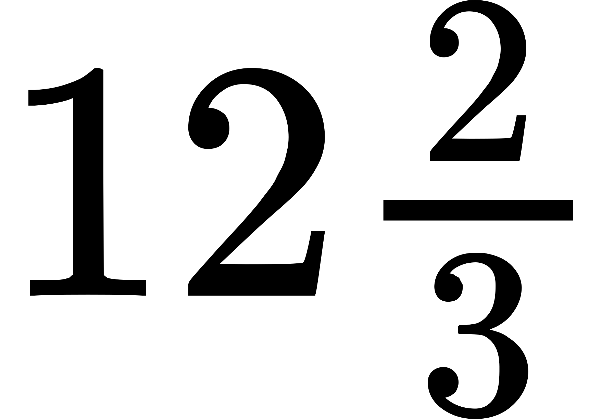 |
to 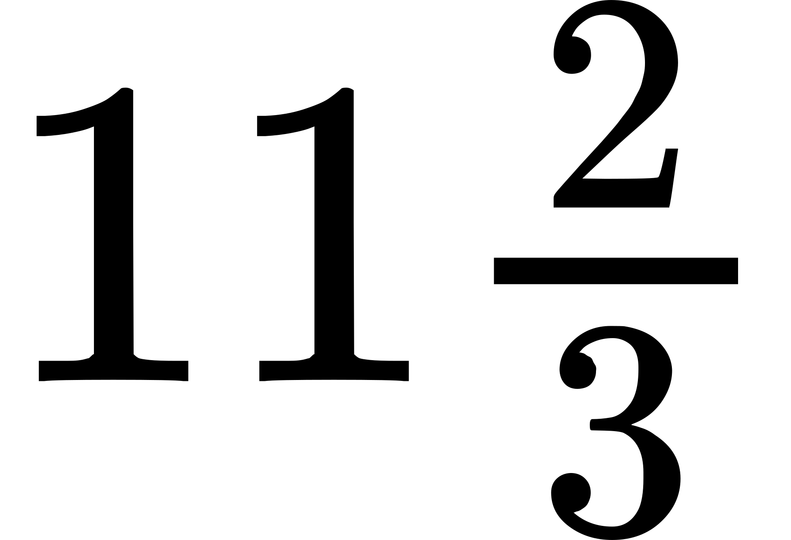 |
| April | 9 | 9 | 12,32 | 11,48 | to | |
[Pg 409]
So that the theory agrees with the phænomena; for the planets are more heated by the sun's rays towards their equators, and therefore are a little more condensed by that heat than towards their poles.
Moreover, that there is a diminution of gravity occasioned by the diurnal rotation of the earth, and therefore the earth rises higher there than it does at the poles (supposing that its matter is uniformly dense), will appear by the experiments of pendulums related under the following Proposition.
PROPOSITION XX. PROBLEM IV.
To find and compare together the weights of bodies in the different regions of our earth.
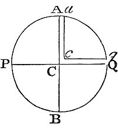
Because the weights of the unequal legs of the canal of water ACQqca are equal; and the weights of the parts proportional to the whole legs, and alike situated in them, are one to another as the weights of the wholes, and therefore equal betwixt themselves; the weights of equal parts, and alike situated in the legs, will be reciprocally as the legs, that is, reciprocally as 230 to 229. And the case is the same in all homogeneous equal bodies alike situated in the legs of the canal. Their weights are reciprocally as the legs, that is, reciprocally as the distances of the bodies from the centre of the earth. Therefore if the bodies are situated in the uppermost parts of the canals, or on the surface of the earth, their weights will be one to another reciprocally as their distances from the centre. And, by the same argument, the weights in all other places round the whole surface of the earth are reciprocally as the distances of the places from the centre; and, therefore, in the hypothesis of the earth's being a spheroid are given in proportion.
Whence arises this Theorem, that the increase of weight in passing from the equator to the poles is nearly as the versed sine of double the latitude; or, which comes to the same thing, as the square of the right sine of the latitude; and the arcs of the degrees of latitude in the meridian increase nearly in the same proportion. And, therefore, since the latitude of Paris is 48° 50', that of places under the equator 00° 00', and that of places under the poles 90°; and the versed sines of double those arcs are 11334,00000 and 20000, the radius being 10000; and the force of gravity at the pole is to the force of gravity at the equator as 230 to 229; and the excess of the force of gravity at the pole to the force of gravity at the equator as 1 to 229; the excess of the force of gravity in the latitude of Paris will be to the force of gravity at the equator as
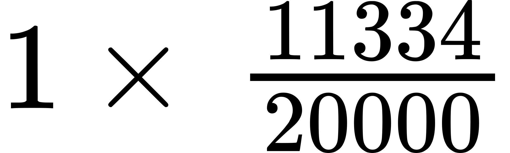
to 229, or as 5667 to 2290000. And therefore the whole forces of gravity in those places will be one to the other as 2295667 to 2290000. Wherefore since the lengths of pendulums vibrating in equal times are as the forces of[Pg 410] gravity, and in the latitude of Paris, the length of a pendulum vibrating seconds is 3 Paris feet, and lines, or rather because of the weight of the air, lines, the length of a pendulum vibrating in the same time under the equator will be shorter by 1,087 lines. And by a like calculus the following table is made.| Latitude of
the place. |
Length of the pendulum. |
Measure of one degree in the meridian. |
|
|---|---|---|---|
| Deg. | Feet. | Lines. | Toises. |
| 0 | 3 | 7,468 | 56637 |
| 5 | 3 | 7,482 | 56642 |
| 10 | 3 | 7,526 | 56659 |
| 15 | 3 | 7,596 | 56687 |
| 20 | 3 | 7,692 | 56724 |
| 25 | 3 | 7,812 | 56769 |
| 30 | 3 | 7,948 | 56823 |
| 35 | 3 | 8,099 | 56882 |
| 40 | 3 | 8,261 | 56945 |
| 1 | 3 | 8,294 | 56958 |
| 2 | 3 | 8,327 | 56971 |
| 3 | 3 | 8,361 | 56984 |
| 4 | 3 | 8,394 | 56997 |
| 45 | 3 | 8,428 | 57010 |
| 6 | 3 | 8,461 | 57022 |
| 7 | 3 | 8,494 | 57035 |
| 8 | 3 | 8,528 | 57048 |
| 9 | 3 | 8,561 | 57061 |
| 50 | 3 | 8,594 | 57074 |
| 55 | 3 | 8,756 | 57137 |
| 60 | 3 | 8,907 | 57196 |
| 65 | 3 | 9,044 | 57250 |
| 70 | 3 | 9,162 | 57295 |
| 75 | 3 | 9,329 | 57360 |
| 85 | 3 | 9,372 | 57377 |
| 90 | 3 | 9,387 | 57382 |
By this table, therefore, it appears that the inequality of degrees is so small, that the figure of the earth, in geographical matters, may be considered as spherical; especially if the earth be a little denser towards the plane of the equator than towards the poles.
Now several astronomers, sent into remote countries to make astronomical observations, have found that pendulum clocks do accordingly move slower near the equator than in our climates. And, first of all, in the year 1672, M. Richer took notice of it in the island of Cayenne; for when, in the month of August, he was observing the transits of the fixed stars over the meridian, he found his clock to go slower than it ought in respect of the mean motion of the sun at the rate of 2' 28'' a day. Therefore, fitting up a simple pendulum to vibrate in seconds, which were measured by an excellent clock, he observed the length of that simple pendulum; and this he did over and over every week for ten months together. And upon his return to France, comparing the length of that pendulum with the length[Pg 411] of the pendulum at Paris (which was 3 Paris feet and
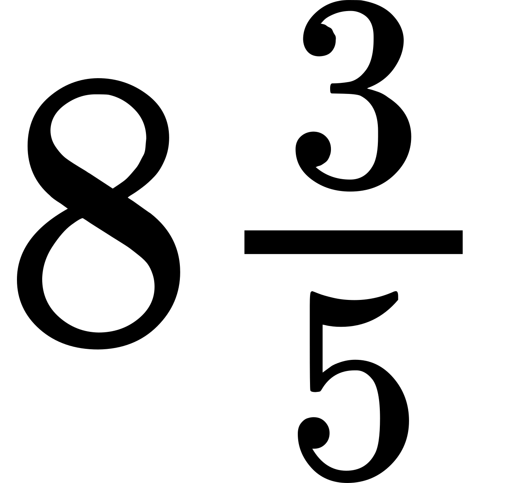
lines), he found it shorter by line.Afterwards, our friend Dr. Halley, about the year 1677, arriving
at the island of St. Helena, found his pendulum clock to go
slower there than at London without marking the difference. But
he shortened the rod of his clock by more than the  of
an inch, or
of
an inch, or  line; and to effect this, because the
length of the screw at the lower end of the rod was not sufficient, he
interposed a wooden ring betwixt the nut and the ball.
line; and to effect this, because the
length of the screw at the lower end of the rod was not sufficient, he
interposed a wooden ring betwixt the nut and the ball.
Then, in the year 1682, M. Varin and M. des Hayes found
the length of a simple pendulum vibrating in seconds at the Royal
Observatory of Paris to be 3 feet and lines.
And by the same method in the island of Goree, they found the
length of an isochronal pendulum to be 3 feet and  lines, differing from the former by two lines. And in the same year,
going to the islands of Guadeloupe and Martinico, they
found that the length of an isochronal pendulum in those islands was 3
feet and
lines, differing from the former by two lines. And in the same year,
going to the islands of Guadeloupe and Martinico, they
found that the length of an isochronal pendulum in those islands was 3
feet and  lines.
lines.
After this, M. Couplet, the son, in the month of July 1697, at the Royal Observatory of Paris, so fitted his pendulum clock to the mean motion of the sun, that for a considerable time together the clock agreed with the motion of the sun. In November following, upon his arrival at Lisbon, he found his clock to go slower than before at the rate of 2' 13'' in 24 hours. And next March coming to Paraiba, he found his clock to go slower than at Paris, and at the rate 4' 12'' in 24 hours; and he affirms, that the pendulum vibrating in seconds was shorter at Lisbon by lines, and at Paraiba by
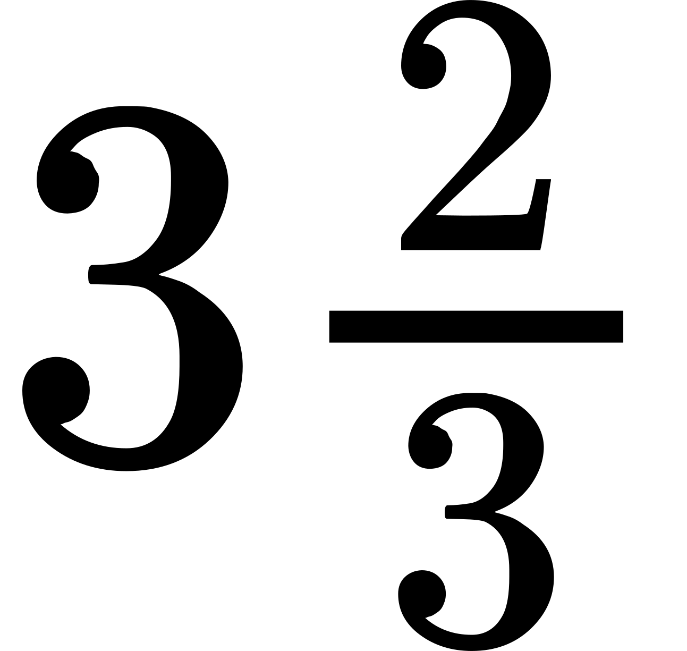
lines, than at Paris. He had done better to have reckoned those differences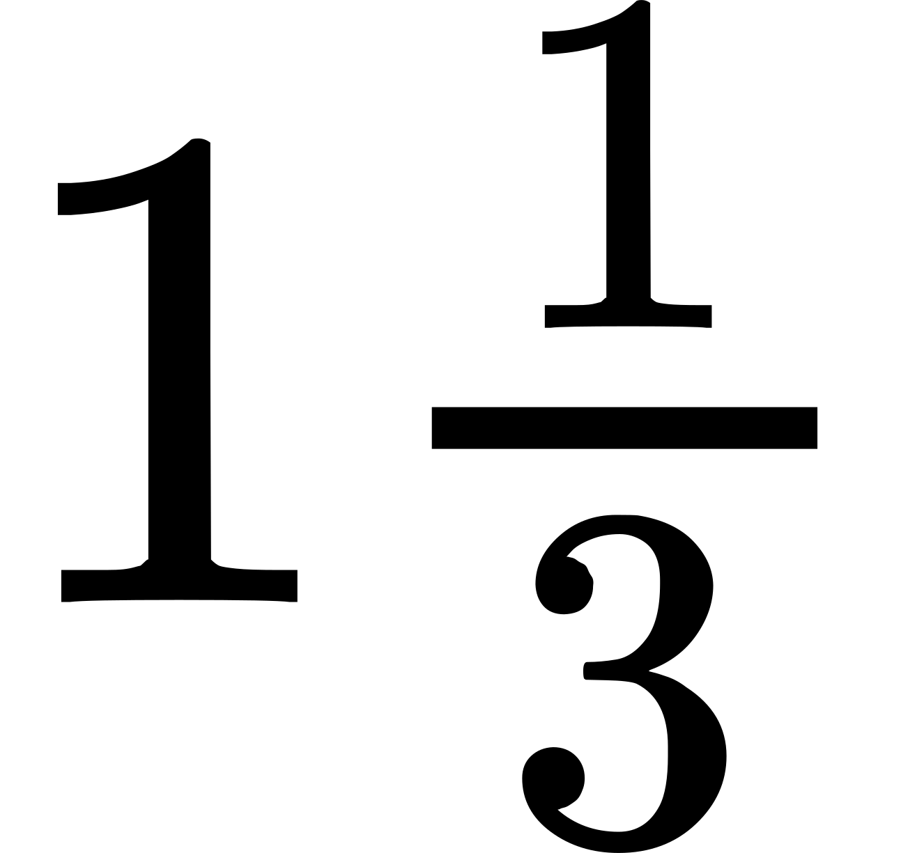
and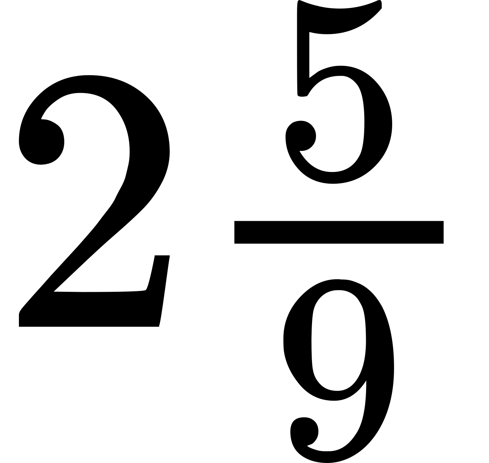
: for these differences correspond to the differences of the times 2' 13'' and 4' 12''. But this gentleman's observations are so gross, that we cannot confide in them.In the following years, 1699, and 1700, M. des Hayes, making
another voyage to America, determined that in the island of
Cayenne and Granada the length of the pendulum vibrating
in seconds was a small matter less than 3 feet and
lines; that in the island of St. Christophers it was 3 feet and
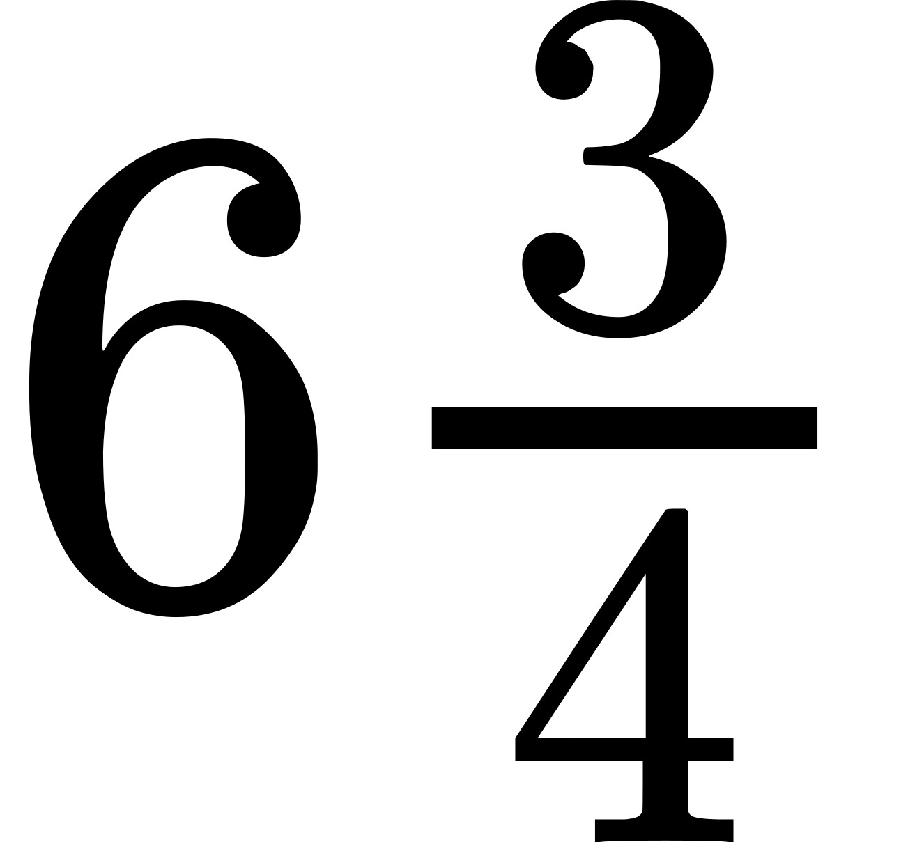
lines; and in the island of St. Domingo 3 feet and 7 lines.And in the year 1704, P. Feuillé, at Puerto Bello in America, found that the length of the pendulum vibrating in seconds was 3 Paris feet, and only
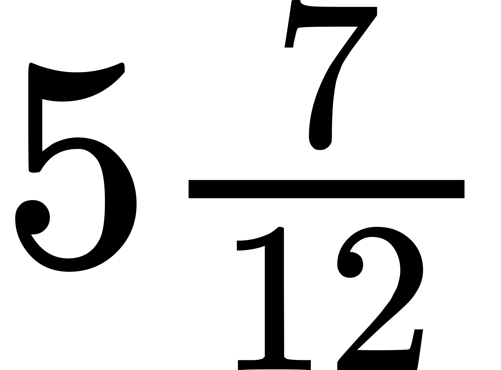
lines, that is, almost 3 lines shorter than at Paris; but the observation was faulty. For afterward, going to the island of Martinico, he found the length of the isochronal pendulum there 3 Paris feet and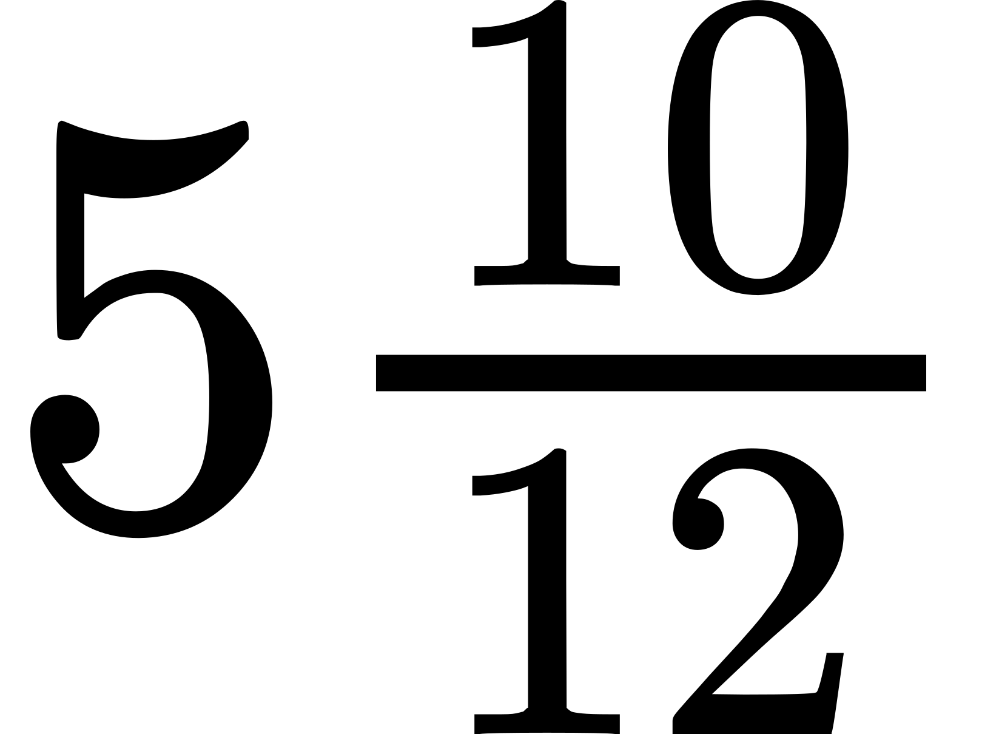
lines.Now the latitude of Paraiba is 6° 38' south; that of Puerto Bello 9° 33' north; and the latitudes of the islands Cayenne, Goree, Guadeloupe, Martinico, Granada, St. Christophers, and St. Domingo, are respectively 4° 55', 14° 40', 15° 00', 14° 44', 12° 06', 17° 19', and 19° 48', north. And[Pg 412] the excesses of the length of the pendulum at Paris above the lengths of the isochronal pendulums observed in those latitudes are a little greater than by the table of the lengths of the pendulum before computed. And therefore the earth is a little higher under the equator than by the preceding calculus, and a little denser at the centre than in mines near the surface, unless, perhaps, the heats of the torrid zone have a little extended the length of the pendulums.
For M. Picart has observed, that a rod of iron, which in frosty
weather in the winter season was one foot long, when heated by fire,
was lengthened into one foot and  line. Afterward M.
de la Hire found that a rod of iron, which in the like winter
season was 6 feet long, when exposed to the heat of the summer sun, was
extended into 6 feet and
line. Afterward M.
de la Hire found that a rod of iron, which in the like winter
season was 6 feet long, when exposed to the heat of the summer sun, was
extended into 6 feet and  line. In the former case the
heat was greater than in the latter; but in the latter it was greater
than the heat of the external parts of a human body; for metals exposed
to the summer sun acquire a very considerable degree of heat. But the
rod of a pendulum clock is never exposed to the heat of the summer
sun, nor ever acquires a heat equal to that of the external parts of a
human body; and, therefore, though the 3 feet rod of a pendulum clock
will indeed be a little longer in the summer than in the winter season,
yet the difference will scarcely amount to line.
Therefore the total difference of the lengths of isochronal pendulums
in different climates cannot be ascribed to the difference of heat; nor
indeed to the mistakes of the French astronomers. For although
there is not a perfect agreement betwixt their observations, yet the
errors are so small that they may be neglected; and in this they all
agree, that isochronal pendulums are shorter under the equator than at
the Royal Observatory of Paris, by a difference not less than
line, nor greater than
line. In the former case the
heat was greater than in the latter; but in the latter it was greater
than the heat of the external parts of a human body; for metals exposed
to the summer sun acquire a very considerable degree of heat. But the
rod of a pendulum clock is never exposed to the heat of the summer
sun, nor ever acquires a heat equal to that of the external parts of a
human body; and, therefore, though the 3 feet rod of a pendulum clock
will indeed be a little longer in the summer than in the winter season,
yet the difference will scarcely amount to line.
Therefore the total difference of the lengths of isochronal pendulums
in different climates cannot be ascribed to the difference of heat; nor
indeed to the mistakes of the French astronomers. For although
there is not a perfect agreement betwixt their observations, yet the
errors are so small that they may be neglected; and in this they all
agree, that isochronal pendulums are shorter under the equator than at
the Royal Observatory of Paris, by a difference not less than
line, nor greater than
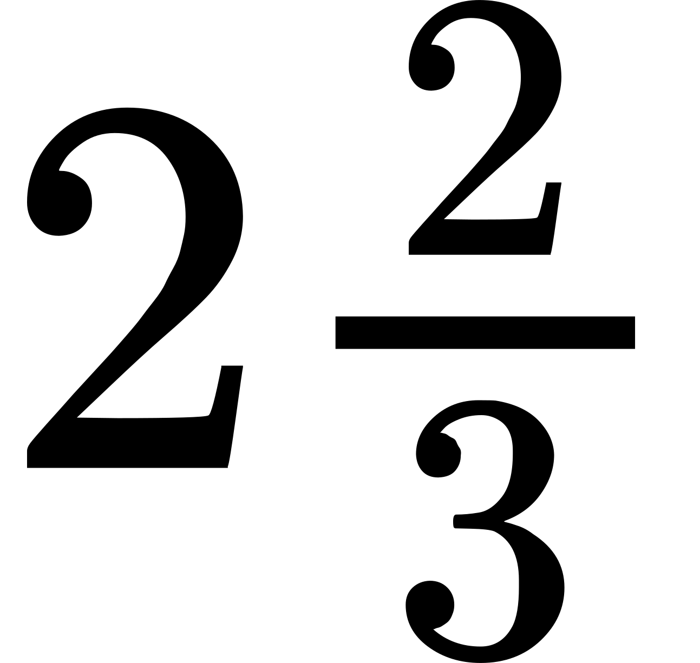
lines. By the observations of M. Richer, in the island of Cayenne, the difference was line. That difference being corrected by those of M. des Hayes, becomes
line or  line. By the less accurate observations of
others, the same was made about two lines. And this disagreement might
arise partly from the errors of the observations, partly from the
dissimilitude of the internal parts of the earth, and the height of
mountains; partly from the different heats of the air.
line. By the less accurate observations of
others, the same was made about two lines. And this disagreement might
arise partly from the errors of the observations, partly from the
dissimilitude of the internal parts of the earth, and the height of
mountains; partly from the different heats of the air.
I take an iron rod of 3 feet long to be shorter by a sixth part of one line in winter time with us here in England than in the summer. Because of the great heats under the equator, subduct this quantity from the difference of one line and a quarter observed by M. Richer, and there will remain one line , which agrees very well with line collected, by the theory a little before. M. Richer repeated his observations, made in the island of Cayenne, every week for ten months together, and compared the lengths of the pendulum which he had there noted in the iron rods with the lengths thereof which he observed in France. This diligence and care seems to have been wanting to the other observers. If this gentleman's observations[Pg 413] are to be depended on, the earth is higher under the equator than at the poles, and that by an excess of about 17 miles; as appeared above by the theory.
PROPOSITION XXI. THEOREM XVII.
That the equinoctial points go backward, and that the axis of the earth, by a nutation in every annual revolution, twice vibrates towards the ecliptic, and as often returns to its former position.
The proposition appears from Cor. 20, Prop. LXVI, Book I; but that motion of nutation must be very small, and, indeed, scarcely perceptible.
PROPOSITION XXII. THEOREM XVIII.
That all the motions of the moon, and all the inequalities of those motions, follow from the principles which we have laid down.
[Pg 414]
That the greater planets, while they are carried about the sun, may in the mean time carry other lesser planets, revolving about them; and that those lesser planets must move in ellipses which have their foci in the centres of the greater, appears from Prop. LXV, Book I. But then their motions will be several ways disturbed by the action of the sun, and they will suffer such inequalities as are observed in our moon. Thus our moon (by Cor. 2, 3, 4, and 5, Prop. LXVI, Book I) moves faster, and, by a radius drawn to the earth, describes an area greater for the time, and has its orbit less curved, and therefore approaches nearer to the earth in the syzygies than in the quadratures, excepting in so far as these effects are hindered by the motion of eccentricity; for (by Cor. 9, Prop. LXVI, Book I) the eccentricity is greatest when the apogeon of the moon is in the syzygies, and least when the same is in the quadratures; and upon this account the perigeon moon is swifter, and nearer to us, but the apogeon moon slower, and farther from us, in the syzygies than in the quadratures. Moreover, the apogee goes forward, and the nodes backward; and this is done not with a regular but an unequal motion. For (by Cor. 7 and 8, Prop. LXVI, Book I) the apogee goes more swiftly forward in its syzygies, more slowly backward in its quadratures; and, by the excess of its progress above its regress, advances yearly in consequentia. But, contrariwise, the nodes (by Cor. 11, Prop. LXVI, Book I) are quiescent in their syzygies, and go fastest back in their quadratures. Farther, the greatest latitude of the moon (by Cor. 10, Prop. LXVI, Book I) is greater in the quadratures of the moon than in its syzygies. And (by Cor. 6, Prop. LXVI, Book I) the mean motion of the moon is slower in the perihelion of the earth than in its aphelion. And these are the principal inequalities (of the moon) taken notice of by astronomers.
But there are yet other inequalities not observed by former astronomers, by which the motions of the moon are so disturbed, that to this day we have not been able to bring them under any certain rule. For the velocities or horary motions of the apogee and nodes of the moon, and their equations, as well as the difference betwixt the greatest eccentricity in the syzygies, and the least eccentricity in the quadratures, and that inequality which we call the variation, are (by Cor. 14, Prop. LXVI, Book I) in the course of the year augmented and diminished in the triplicate proportion of the sun's apparent diameter. And besides (by Cor. 1 and 2, Lem. 10, and Cor. 16, Prop. LXVI, Book I) the variation is augmented and diminished nearly in the duplicate proportion of the time between the quadratures. But in astronomical calculations, this inequality is commonly thrown into and confounded with the equation of the moon's centre.
PROPOSITION XXIII. PROBLEM V.
To derive the unequal motions of the satellites of Jupiter and Saturn from the motions of our moon.
From the motions of our moon we deduce the corresponding motions of the moons or satellites of Jupiter in this manner, by Cor. 16, Prop. LXVI, Book I. The mean motion of the nodes of the outmost satellite of Jupiter is to the mean motion of the nodes of our moon in a proportion compounded of the duplicate proportion of the periodic times of the earth about the sun to the periodic times of Jupiter about the sun, and the simple proportion of the periodic time of the satellite about Jupiter to the periodic time of our moon about the earth; and, therefore, those nodes, in the space of a hundred years, are carried 8° 24' backward, or in antecedentia. The mean motions of the nodes of the inner satellites are to the mean motion of the nodes of the outmost as their periodic times to the periodic time of the former, by the same Corollary, and are thence given. And the motion of the apsis of every satellite in consequentia is to the motion of its nodes in antecedentia as the motion of the apogee of our moon to the motion of its nodes (by the same Corollary), and is thence given. But the motions of the apsides thus found must be diminished in the proportion of 5 to 9, or of about 1 to 2, on account of a cause which I cannot here descend to explain. The greatest equations of the nodes, and of the apsis of every satellite, are to the greatest equations of the nodes, and apogee of our moon respectively, as the motions of the nodes and apsides of the satellites, in the time of one revolution of the former equations, to the motions of the nodes and apogee of our moon, in the time of one revolution of the latter equations. The variation of a satellite seen from Jupiter is to the variation of our moon in the same proportion as the whole motions of their nodes[Pg 415] respectively during the times in which the satellite and our moon (after parting from) are revolved (again) to the sun, by the same Corollary; and therefore in the outmost satellite the variation does not exceed 5'' 12'''.
PROPOSITION XXIV. THEOREM XIX.
That the flux and reflux of the sea arise from the actions of the sun and moon.
By Cor. 19 and 20, Prop. LXVI, Book I, it appears that the waters of the sea ought twice to rise and twice to fall every day, as well lunar as solar; and that the greatest height of the waters in the open and deep seas ought to follow the appulse of the luminaries to the meridian of the place by a less interval than 6 hours; as happens in all that eastern tract of the Atlantic and Æthiopic seas between France and the Cape of Good Hope; and on the coasts of Chili and Peru in the South Sea; in all which shores the flood falls out about the second, third, or fourth hour, unless where the motion propagated from the deep ocean is by the shallowness of the channels, through which it passes to some particular places, retarded to the fifth, sixth, or seventh hour, and even later. The hours I reckon from the appulse of each luminary to the meridian of the place, as well under as above the horizon; and by the hours of the lunar day I understand the 24th parts of that time which the moon, by its apparent diurnal motion, employs to come about again to the meridian of the place which it left the day before. The force of the sun or moon in raising the sea is greatest in the appulse of the luminary to the meridian of the place; but the force impressed upon the sea at that time continues a little while after the impression, and is afterwards increased by a new though less force still acting upon it. This makes the sea rise higher and higher, till this new force becoming too weak to raise it any more, the sea rises to its greatest height. And this will come to pass, perhaps, in one or two hours, but more frequently near the shores in about three hours, or even more, where the sea is shallow.
The two luminaries excite two motions, which will not appear distinctly, but between them will arise one mixed motion compounded out of both. In the conjunction or opposition of the luminaries their forces will be conjoined, and bring on the greatest flood and ebb. In the quadratures the sun will raise the waters which the moon depresses, and depress the waters which the moon raises, and from the difference of their forces the smallest of all tides will follow. And because (as experience tells us) the force of the moon is greater than that of the sun, the greatest height of the waters will happen about the third lunar hour. Out of the syzygies and quadratures, the greatest tide, which by the single force of the moon ought to fall out at the third lunar hour, and by the single force of the sun at the third solar hour, by the compounded forces of both must fall out in an intermediate[Pg 416] time that approaches nearer to the third hour of the moon than to that of the sun. And, therefore, while the moon is passing from the syzygies to the quadratures, during which time the 3d hour of the sun precedes the 3d hour of the moon, the greatest height of the waters will also precede the 3d hour of the moon, and that, by the greatest interval, a little after the octants of the moon; and, by like intervals, the greatest tide will follow the 3d lunar hour, while the moon is passing from the quadratures to the syzygies. Thus it happens in the open sea; for in the mouths of rivers the greater tides come later to their height.
But the effects of the luminaries depend upon their distances from the earth; for when they are less distant, their effects are greater, and when more distant, their effects are less, and that in the triplicate proportion of their apparent diameter. Therefore it is that the sun, in the winter time, being then in its perigee, has a greater effect, and makes the tides in the syzygies something greater, and those in the quadratures something less than in the summer season; and every month the moon, while in the perigee, raises greater tides than at the distance of 15 days before or after, when it is in its apogee. Whence it comes to pass that two highest tides do not follow one the other in two immediately succeeding syzygies.
The effect of either luminary doth likewise depend upon its declination or distance from the equator; for if the luminary was placed at the pole, it would constantly attract all the parts of the waters without any intension or remission of its action, and could cause no reciprocation of motion. And, therefore, as the luminaries decline from the equator towards either pole, they will, by degrees, lose their force, and on this account will excite lesser tides in the solstitial than in the equinoctial syzygies. But in the solstitial quadratures they will raise greater tides than in the quadratures about the equinoxes; because the force of the moon, then situated in the equator, most exceeds the force of the sun. Therefore the greatest tides fall out in those syzygies, and the least in those quadratures, which happen about the time of both equinoxes: and the greatest tide in the syzygies is always succeeded by the least tide in the quadratures, as we find by experience. But, because the sun is less distant from the earth in winter than in summer, it comes to pass that the greatest and least tides more frequently appear before than after the vernal equinox, and more frequently after than before the autumnal.
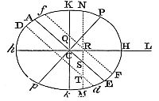
Moreover, the effects of the luminaries depend upon the latitudes of places. Let ApEP represent the earth covered with deep waters; C its centre; P, p its poles; AE the equator; F any place without the equator; Ff the parallel of the place; Dd the correspondent parallel on the[Pg 417] other side of the equator; L the place of the moon three hours before; H the place of the earth directly under it; h the opposite place; K, k the places at 90 degrees distance; CH, Ch, the greatest heights of the sea from the centre of the earth; and CK, Ck, its least heights: and if with the axes Hh, Kk, an ellipsis is described, and by the revolution of that ellipsis about its longer axis Hh a spheroid HPKhpk is formed, this spheroid will nearly represent the figure of the sea; and CF, Cf, CD, Cd, will represent the heights of the sea in the places Ff, Dd. But farther; in the said revolution of the ellipsis any point N describes the circle NM cutting the parallels Ff, Dd, in any places RT, and the equator AE in S; CN will represent the height of the sea in all those places R, S, T, situated in this circle. Wherefore, in the diurnal revolution of any place F, the greatest flood will be in F, at the third hour after the appulse of the moon to the meridian above the horizon; and afterwards the greatest ebb in Q, at the third hour after the setting of the moon; and then the greatest flood in f, at the third hour after the appulse of the moon to the meridian under the horizon; and, lastly, the greatest ebb in Q, at the third hour after the rising of the moon; and the latter flood in f will be less than the preceding flood in F. For the whole sea is divided into two hemispherical floods, one in the hemisphere KHk on the north side, the other in the opposite hemisphere Khk, which we may therefore call the northern and the southern floods. These floods, being always opposite the one to the other, come by turns to the meridians of all places, after an interval of 12 lunar hours. And seeing the northern countries partake more of the northern flood, and the southern countries more of the southern flood, thence arise tides, alternately greater and less in all places without the equator, in which the luminaries rise and set. But the greatest tide will happen when the moon declines towards the vertex of the place, about the third hour after the appulse of the moon to the meridian above the horizon; and when the moon changes its declination to the other side of the equator, that which was the greater tide will be changed into a lesser. And the greatest difference of the floods will fall out about the times of the solstices; especially if the ascending node of the moon is about the first of Aries. So it is found by experience that the morning tides in winter exceed those of the evening, and the evening tides in summer exceed those of the morning; at Plymouth by the height of one foot, but at Bristol by the height of 15 inches, according to the observations of Colepress and Sturmy.
But the motions which we have been describing suffer some alteration from that force of reciprocation, which the waters, being once moved, retain a little while by their vis insita. Whence it comes to pass that the tides may continue for some time, though the actions of the luminaries should[Pg 418] cease. This power of retaining the impressed motion lessens the difference of the alternate tides, and makes those tides which immediately succeed after the syzygies greater, and those which follow next after the quadratures less. And hence it is that the alternate tides at Plymouth and Bristol do not differ much more one from the other than by the height of a foot or 15 inches, and that the greatest tides of all at those ports are not the first but the third after the syzygies. And, besides, all the motions are retarded in their passage through shallow channels, so that the greatest tides of all, in some straits and mouths of rivers, are the fourth or even the fifth after the syzygies.
Farther, it may happen that the tide may be propagated from the ocean through different channels towards the same port, and may pass quicker through some channels than through others; in which case the same tide, divided into two or more succeeding one another, may compound new motions of different kinds. Let us suppose two equal tides flowing towards the same port from different places, the one preceding the other by 6 hours; and suppose the first tide to happen at the third hour of the appulse of the moon to the meridian of the port. If the moon at the time of the appulse to the meridian was in the equator, every 6 hours alternately there would arise equal floods, which, meeting with as many equal ebbs, would so balance one the other, that for that day, the water would stagnate and remain quiet. If the moon then declined from the equator, the tides in the ocean would be alternately greater and less, as was said; and from thence two greater and two lesser tides would be alternately propagated towards that port. But the two greater floods would make the greatest height of the waters to fall out in the middle time betwixt both; and the greater and lesser floods would make the waters to rise to a mean height in the middle time between them, and in the middle time between the two lesser floods the waters would rise to their least height. Thus in the space of 24 hours the waters would come, not twice, as commonly, but once only to their greatest, and once only to their least height; and their greatest height, if the moon declined towards the elevated pole, would happen at the 6th or 30th hour after the appulse of the moon to the meridian; and when the moon changed its declination, this flood would be changed into an ebb. An example of all which Dr. Halley has given us, from the observations of seamen in the port of Batsham, in the kingdom of Tunquin, in the latitude of 20° 50' north. In that port, on the day which follows after the passage of the moon over the equator, the waters stagnate: when the moon declines to the north, they begin to flow and ebb, not twice, as in other ports, but once only every day: and the flood happens at the setting, and the greatest ebb at the rising of the moon. This tide increases with the declination of the moon till the 7th or 8th day; then for the 7 or 8 days following it[Pg 419] decreases at the same rate as it had increased before, and ceases when the moon changes its declination, crossing over the equator to the south. After which the flood is immediately changed into an ebb; and thenceforth the ebb happens at the setting and the flood at the rising of the moon; till the moon, again passing the equator, changes its declination. There are two inlets to this port and the neighboring channels, one from the seas of China, between the continent and the island of Leuconia; the other from the Indian sea, between the continent and the island of Borneo. But whether there be really two tides propagated through the said channels, one from the Indian sea in the space of 12 hours, and one from the sea of China in the space of 6 hours, which therefore happening at the 3d and 9th lunar hours, by being compounded together, produce those motions; or whether there be any other circumstances in the state of those seas, I leave to be determined by observations on the neighbouring shores.
Thus I have explained the causes of the motions of the moon and of the sea. Now it is fit to subjoin something concerning the quantity of those motions.
PROPOSITION XXV. PROBLEM VI.
To find the forces with which the sun disturbs the motions of the moon.
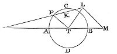
Let S represent the sun, T the earth, P the moon, CADB the moon's
orbit. In SP take SK equal to ST; and let SL be to SK in the duplicate
proportion of SK to SP: draw LM parallel to PT; and if ST or SK is
supposed to represent the accelerated force of gravity of the earth
towards the sun, SL will represent the accelerative force of gravity of
the moon towards the sun. But that force is compounded of the parts SM
and LM, of which the force LM, and that part of SM which is represented
by TM, disturb the motion of the moon, as we have shewn in Prop. LXVI,
Book I, and its Corollaries. Forasmuch as the earth and moon are
revolved about their common centre of gravity, the motion of the earth
about that centre will be also disturbed by the like forces; but we
may consider the sums both of the forces and of the motions as in the
moon, and represent the sum of the forces by the lines TM and ML, which
are analogous to them both. The force ML (in its mean quantity) is to
the centripetal force by which the moon may be retained in its orbit
revolving about the earth at rest, at the distance PT, in the duplicate
proportion of the periodic time of the moon about the earth to the
periodic time of the earth about the sun (by Cor. 17, Prop. LXVI, Book
I); that is, in the duplicate proportion of 27d. 7h. 43' to 365d.
6h. 9'; or as 1000 to 178725; or as 1 to 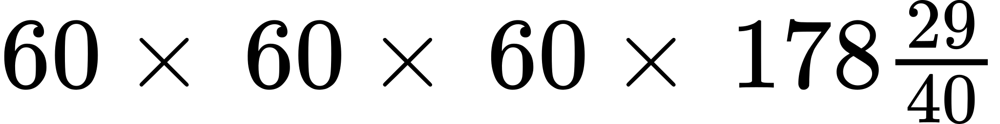. But
in the[Pg 420] 4th Prop. of this Book we found, that, if both earth and moon
were revolved about their common centre of gravity, the mean distance
of the one from the other would be nearly mean
semi-diameters of the earth; and the force by which the moon may be
kept revolving in its orbit about the earth in rest at the distance
PT of semi-diameters of the earth, is to the force
by which it may be revolved in the same time, at the distance of 60
semi-diameters, as to 60: and this force is to the
force of gravity with us very nearly as 1 to 60 × 60. Therefore the
mean force ML is to the force of gravity on the surface of our earth as
 to
to
PROPOSITION XXVI. PROBLEM VII.
To find the horary increment of the area which the moon, by a radius drawn to the earth, describes in a circular orbit.
We have above shown that the area which the moon describes by a radius drawn to the earth is proportional to the time of description, excepting in so far as the moon's motion is disturbed by the action of the sun; and here we propose to investigate the inequality of the moment, or horary increment of that area or motion so disturbed. To render the calculus more easy, we shall suppose the orbit of the moon to be circular, and neglect all inequalities but that only which is now under consideration; and, because of the immense distance of the sun, we shall farther suppose that the lines SP and ST are parallel. By this means, the force LM will be always reduced to its mean quantity TP, as well as the force TM to its mean quantity 3PK. These forces (by Cor. 2 of the Laws of Motion) compose the force TL; and this force, by letting fall the perpendicular LE upon the radius TP, is resolved into the forces TE, EL; of which the force TE, acting constantly in the direction of the radius TP, neither accelerates nor retards the description of the area TPC made by that radius TP; but EL, acting on the radius TP in a perpendicular direction, accelerates or retards the description of the area in proportion as it accelerates or retards the moon.[Pg 421] That acceleration of the moon, in its passage from the quadrature C to the conjunction A, is in every moment of time as the generating accelerative force EL, that is, as . Let the time be represented by the mean motion of the moon, or (which comes to the same thing) by the angle CTP, or even by the arc CP. At right angles upon CT erect CG equal to CT; and, supposing the quadrantal arc AC to be divided into an infinite number of equal parts Pp, &c., these parts may represent the like infinite number of the equal parts of time. Let fall pk perpendicular on CT, and draw TG meeting with KP, kp produced in F and f; then will FK be equal to TK, and Kk be to PK as Pp to Tp, that is, in a given proportion; and therefore FK × Kk, or the area FKkf, will be as , that is, as EL; and compounding, the whole area GCKF will be as the sum of all the forces EL impressed upon the moon in the whole time CP; and therefore also as the velocity generated by that sum, that is, as the acceleration of the description of the area CTP, or as the increment of the moment thereof. The force by which the moon may in its periodic time CADB of 27d. 7h. 43' be retained revolving about the earth in rest at the distance TP, would cause a body falling in the time CT to describe the length , and at the same time to acquire a velocity equal to that with which the moon is moved in its orbit. This appears from Cor. 9, Prop. IV., Book I. But since Kd, drawn perpendicular on TP, is but a third part of EL, and equal to the half of TP, or ML, in the octants, the force EL in the octants, where it is greatest, will exceed the force ML in the proportion of 3 to 2; and therefore will be to that force by which the moon in its periodic time may be retained revolving about the earth at rest as 100 to , or 11915; and in the time CT will generate a velocity equal to parts of the velocity of the moon; but in the time CPA will generate a greater velocity in the proportion of CA to CT or TP. Let the greatest force EL in the octants be represented by the area FK × Kk, or by the rectangle , which is equal thereto; and the velocity which that greatest force can generate in any time CP will be to the velocity which any other lesser force EL can generate in the same time as the rectangle to the area KCGF; but the velocities generated in the whole time CPA will be one to the other as the rectangle to the triangle TCG, or as the quadrantal arc CA to the radius TP; and therefore the latter velocity generated in the whole time will be parts of the velocity of the moon. To this velocity of the moon, which is proportional to the mean moment of the area (supposing this mean moment to be represented by the number 11915), we add and subtract the half of the other velocity; the sum 11915 + 50, or 11965, will represent the greatest moment of the area in the syzygy A; and the[Pg 422] difference 11915 - 50, or 11865, the least moment thereof in the quadratures. Therefore the areas which in equal times are described in the syzygies and quadratures are one to the other as 11965 to 11865. And if to the least moment 11865 we add a moment which shall be to 100, the difference of the two former moments, as the trapezium FKCG to the triangle TCG, or, which comes to the same thing, as the square of the sine PK to the square of the radius TP (that is, as Pd to TP), the sum will represent the moment of the area when the moon is in any intermediate place P.
But these things take place only in the hypothesis that the sun and the earth are at rest, and that the synodical revolution of the moon is finished in 27d. 7h. 43'. But since the moon's synodical period is really 29d. 12h. 44', the increments of the moments must be enlarged in the same proportion as the time is, that is, in the proportion of 1080853 to 1000000. Upon which account, the whole increment, which was parts of the mean moment, will now become parts thereof; and therefore the moment of the area in the quadrature of the moon will be to the moment thereof in the syzygy as 11023 - 50 to 11023 + 50; or as 10973 to 11073; and to the moment thereof, when the moon is in any intermediate place P, as 10973 to 10973 + Pd; that is, supposing TP = 100.
The area, therefore, which the moon, by a radius drawn to the earth, describes in the several little equal parts of time, is nearly as the sum of the number 219,46, and the versed sine of the double distance of the moon from the nearest quadrature, considered in a circle which hath unity for its radius. Thus it is when the variation in the octants is in its mean quantity. But if the variation there is greater or less, that versed sine must be augmented or diminished in the same proportion.
PROPOSITION XXVII. PROBLEM VIII.
From the horary motion of the moon to find its distance from the earth.
The area which the moon, by a radius drawn to the earth, describes in every moment of time, is as the horary motion of the moon and the square of the distance of the moon from the earth conjunctly. And therefore the distance of the moon from the earth is in a proportion compounded of the subduplicate proportion of the area directly, and the subduplicate proportion of the horary motion inversely. Q.E.I.
COR. 1. Hence the apparent diameter of the moon is given; for it is reciprocally as the distance of the moon from the earth. Let astronomers try how accurately this rule agrees with the phænomena.
[Pg 423]
COR. 2. Hence also the orbit of the moon may be more exactly defined from the phænomena than hitherto could be done.
PROPOSITION XXVIII. PROBLEM IX.
To find the diameters of the orbit, in which, without eccentricity, the moon would move.
The curvature of the orbit which a body describes, if attracted in lines perpendicular to the orbit, is as the force of attraction directly, and the square of the velocity inversely. I estimate the curvatures of lines compared one with another according to the evanescent proportion of the sines or tangents of their angles of contact to equal radii, supposing those radii to be infinitely diminished. But the attraction of the moon towards the earth in the syzygies is the excess of its gravity towards the earth above the force of the sun 2PK (see Fig. Prop. XXV), by which force the accelerative gravity of the moon towards the sun exceeds the accelerative gravity of the earth towards the sun, or is exceeded by it. But in the quadratures that attraction is the sum of the gravity of the moon towards the earth, and the sun's force KT, by which the moon is attracted towards the earth. And these attractions, putting N for , are nearly as and , or as 178725N × CT2 - 2000AT2 × CT, and 178725N × AT2 + 1000CT2 × AT. For if the accelerative gravity of the moon towards the earth be represented by the number 178725, the mean force ML, which in the quadratures is PT or TK, and draws the moon towards the earth, will be 1000, and the mean force TM in the syzygies will be 3000; from which, if we subtract the mean force ML, there will remain 2000, the force by which the moon in the syzygies is drawn from the earth, and which we above called 2PK. But the velocity of the moon in the syzygies A and B is to its velocity in the quadratures C and D as CT to AT, and the moment of the area, which the moon by a radius drawn to the earth describes in the syzygies, to the moment of that area described in the quadratures conjunctly; that is, as 11073CT to 10973AT. Take this ratio twice inversely, and the former ratio once directly, and the curvature of the orb of the moon in the syzygies will be to the curvature thereof in the quadratures as 120406729 × 178725AT2 × CT2 × N - 120406729 × 2000AT4 × CT to 122611329 × 178725AT2 × CT2 × N + 122611329 × 1000CT4 × AT, that is, as 2151969AT × CT × N - 24081AT3 to 2191371AT × CT × N + 12261CT3.
Because the figure of the moon's orbit is unknown, let us, in its stead, assume the ellipsis DBCA, in the centre of which we suppose the earth to be situated, and the greater axis DC to lie between the quadratures as the lesser AB between the syzygies. But since the plane of this ellipsis is revolved about the earth by an angular motion, and the orbit, whose curvature we now examine, should be described in a plane void of such motion[Pg 424] we are to consider the figure which the moon, while it is revolved in that ellipsis, describes in this plane, that is to say, the figure Cpa, the several points p of which are found by assuming any point P in the ellipsis, which may represent the place of the moon, and drawing Tp equal to TP in such manner that the angle PTp may be equal to the apparent motion of the sun from the time of the last quadrature in C; or (which comes to the same thing) that the angle CTp may be to the angle CTP as the time of the synodic revolution of the moon to the time of the periodic revolution thereof, or as 29d. 12h. 44' to 27d. 7h. 43'. If, therefore, in this proportion we take the angle CTa to the right angle CTA, and make Ta of equal length with TA, we shall have a the lower and C the upper apsis of this orbit Cpa. But, by computation, I find that the difference betwixt the curvature of this orbit Cpa at the vertex a, and the curvature of a circle described about the centre T with the interval TA, is to the difference between the curvature of the ellipsis at the vertex A, and the curvature of the same circle, in the duplicate proportion of the angle CTP to the angle CTp; and that the curvature of the ellipsis in A is to the curvature of that circle in the duplicate proportion of TA to TC; and the curvature of that circle to the curvature of a circle described about the centre T with the interval TC as TC to TA; but that the curvature of this last arch is to the curvature of the ellipsis in C in the duplicate proportion of TA to TC; and that the difference betwixt the curvature of the ellipsis in the vertex C, and the curvature of this last circle, is to the difference betwixt the curvature of the figure Cpa, at the vertex C, and the curvature of this same last circle, in the duplicate proportion of the angle CTp to the angle CTP; all which proportions are easily drawn from the sines of the angles of contact, and of the differences of those angles. But, by comparing those proportions together, we find the curvature of the figure Cpa at a to be to its curvature at C as to ; where the number represents the difference of the squares of the angles CTP and CTp, applied to the square of the lesser angle CTP; or (which is all one) the difference of the squares of the times 27d. 7h. 43', and 29d. 12h. 44', applied to the square of the time 27d. 7h. 43'.
Since, therefore, a represents the syzygy of the moon, and C its quadrature, the proportion now found must be the same with that proportion of the curvature of the moon's orb in the syzygies to the curvature thereof in the quadratures, which we found above. Therefore, in order to find the[Pg 425] proportion of CT to AT, let us multiply the extremes and the means, and the terms which come out, applied to AT × CT, become 2062,79CT4 - 2151969N × CT3 + 368676N × AT × CT2 + 36342AT2 × CT2 - 362047N × AT2 × CT + 2191371N × AT3 + 4051,4AT4 = 0. Now if for the half sum N of the terms AT and CT we put 1, and x for their half difference, then CT will be = 1 + x, and AT = 1 - x. And substituting those values in the equation, after resolving thereof, we shall find x = 0,00719; and from thence the semi-diameter CT = 1,00719, and the semi-diameter AT = 0,99281, which numbers are nearly as , and . Therefore the moon's distance from the earth in the syzygies is to its distance in the quadratures (setting aside the consideration of eccentricity) as to ; in round numbers, as 69 to 70.
PROPOSITION XXIX. PROBLEM X.
To find the variation of the moon.
This inequality is owing partly to the elliptic figure of the moon's orbit, partly to the inequality of the moments of the area which the moon by a radius drawn to the earth describes. If the moon P revolved in the ellipsis DBCA about the earth quiescent in the centre of the ellipsis, and by the radius TP, drawn to the earth, described the area CTP, proportional to the time of description; and the greatest semi-diameter CT of the ellipsis was to the least TA as 70 to 69; the tangent of the angle CTP would be to the tangent of the angle of the mean motion, computed from the quadrature C, as the semi-diameter TA of the ellipsis to its semi-diameter TC, or as 69 to 70. But the description of the area CTP, as the moon advances from the quadrature to the syzygy, ought to be in such manner accelerated, that the moment of the area in the moon's syzygy may be to the moment thereof in its quadrature as 11073 to 10973; and that the excess of the moment in any intermediate place P above the moment in the quadrature may be as the square of the sine of the angle CTP; which we may effect with accuracy enough, if we diminish the tangent of the angle CTP in the subduplicate proportion of the number 10973 to the number 11073, that is, in proportion of the number 68,6877 to the number 69. Upon which account the tangent of the angle CTP will now be to the tangent of the mean motion as 68,6877 to 70; and the angle CTP in the octants, where the mean motion is 45°, will be found 44° 27' 28'', which subtracted from 45°, the angle of the mean motion, leaves the greatest variation 32' 32''. Thus it would be, if the moon, in passing from the quadrature to the syzygy, described an angle CTA of 90 degrees only. But because of the motion of the earth, by which the sun is apparently transferred in consequentia, the moon, before it overtakes the sun, describes an angle CTa, greater than a right angle, in the proportion of the time of the synodic revolution of the moon to the [Pg 426]time of its periodic revolution, that is, in the proportion of 29d. 12h. 44' to 27d. 7h. 43'. Whence it comes to pass that all the angles about the centre T are dilated in the same proportion; and the greatest variation, which otherwise would be but 32' 32'', now augmented in the said proportion, becomes 35' 10''.
And this is its magnitude in the mean distance of the sun from the earth, neglecting the differences which may arise from the curvature of the orbis magnus, and the stronger action of the sun upon the moon when horned and new, than when gibbous and full. In other distances of the sun from the earth, the greatest variation is in a proportion compounded of the duplicate proportion of the time of the synodic revolution of the moon (the time of the year being given) directly, and the triplicate proportion of the distance of the sun from the earth inversely. And, therefore, in the apogee of the sun, the greatest variation is 33' 14'', and in its perigee 37' 11'', if the eccentricity of the sun is to the transverse semi-diameter of the orbis magnus as to 1000.
Hitherto we have investigated the variation in an orb not eccentric, in which, to wit, the moon in its octants is always in its mean distance from the earth. If the moon, on account of its eccentricity, is more or less removed from the earth than if placed in this orb, the variation may be something greater, or something less, than according to this rule. But I leave the excess or defect to the determination of astronomers from the phænomena.
PROPOSITION XXX. PROBLEM XI.
To find the horary motion of the nodes of the moon in a circular orbit.
Let S represent the sun, T the earth, P the moon, NPn the orbit of the moon, Npn the orthographic projection of the orbit upon the plane of the ecliptic; N, n the nodes, nTNm the line of the nodes produced indefinitely;[Pg 427] PI, PK perpendiculars upon the lines ST, Qq; Pp a perpendicular upon the plane of the ecliptic; A, B the moon's syzygies in the plane of the ecliptic; AZ a perpendicular let fall upon Nn, the line of the nodes; Q, q the quadratures of the moon in the plane of the ecliptic, and pK a perpendicular on the line Qq lying between the quadratures. The force of the sun to disturb the motion of the moon (by Prop. XXV) is twofold, one proportional to the line LM, the other to the line MT, in the scheme of that Proposition; and the moon by the former force is drawn towards the earth, by the latter towards the sun, in a direction parallel to the right line ST joining the earth and the sun. The former force LM acts in the direction of the plane of the moon's orbit, and therefore makes no change upon the situation thereof, and is upon that account to be neglected; the latter force MT, by which the plane of the moon's orbit is disturbed, is the same with the force 3PK or 3IT. And this force (by Prop. XXV) is to the force by which the moon may, in its periodic time, be uniformly revolved in a circle about the earth at rest, as 3IT to the radius of the circle multiplied by the number 178,725, or as IT to the radius thereof multiplied by 59,575. But in this calculus, and all that follows, I consider all the lines drawn from the moon to the sun as parallel to the line which joins the earth and the sun; because what inclination there is almost as much diminishes all effects in some cases as it augments them in others; and we are now inquiring after the mean motions of the nodes, neglecting such niceties as are of no moment, and would only serve to render the calculus more perplexed.
Now suppose PM to represent an arc which the moon describes in the least moment of time, and ML a little line, the half of which the moon, by the impulse of the said force 3IT, would describe in the same time; and joining PL, MP, let them be produced to m and l, where they cut the plane of the ecliptic, and upon Tm let fall the perpendicular PH. Now, since the right line ML is parallel to the plane of the ecliptic, and therefore can never meet with the right line ml which lies in that plane, and yet both those right lines lie in one common plane LMPml, they will be parallel, and upon that account the triangles LMP, lmP will be similar. And seeing MPm lies in the plane of the orbit, in which the moon did move while in the place P, the point m will fall upon the line Nn, which passes through the nodes N, n, of that orbit. And because the force by which the half of the little line LM is generated, if the whole had been together, and it once impressed in the point P, would have generated that whole line, and caused the moon to move in the arc whose chord is LP; that is to say, would have transferred the moon from the plane MPmT into the plane LPlT; therefore the angular motion of the nodes generated by that force will be equal to the angle mTl. But ml is to mP as ML to MP; and since MP, because of the time given, is also given, ml will be as the rectangle[Pg 428] ML × mP, that is, as the rectangle IT × mP. And if Tml is a right angle, the angle mTl will be as , and therefore as , that is (because Tm and mP, TP and PH are proportional), as ; and, therefore, because TP is given, as IT × PH. But if the angle Tml or STN is oblique, the angle mTl will be yet less, in proportion of the sine of the angle STN to the radius, or AZ to AT. And therefore the velocity of the nodes is as IT × PH × AZ, or as the solid content of the sines of the three angles TPI, PTN, and STN.
If these are right angles, as happens when the nodes are in the quadratures, and the moon in the syzygy, the little line ml will be removed to an infinite distance, and the angle mTl will become equal to the angle mPl. But in this case the angle mPl is to the angle PTM, which the moon in the same time by its apparent motion describes about the earth, as 1 to 59,575. For the angle mPl is equal to the angle LPM, that is, to the angle of the moon's deflexion from a rectilinear path; which angle, if the gravity of the moon should have then ceased, the said force of the sun 3IT would by itself have generated in that given time; and the angle PTM is equal to the angle of the moon's deflexion from a rectilinear path; which angle, if the force of the sun 3IT should have then ceased, the force alone by which the moon is retained in its orbit would have generated in the same time. And these forces (as we have above shewn) are the one to the other as 1 to 59,575. Since, therefore, the mean horary motion of the moon (in respect of the fixed stars) is 32' 56'' 27''' . the horary motion of the node in this case will be 33'' 10''' 33iv. 12v. But in other cases the horary motion will be to 33'' 10''' 33iv. 12v. as the solid content of the sines of the three angles TPI, PTN, and STN (or of the distances of the moon from the quadrature, of the moon from the node, and of the node from the sun) to the cube of the radius. And as often as the sine of any angle is changed from positive to negative, and from negative to positive, so often must the regressive be changed into a progressive, and the progressive into a regressive motion. Whence it comes to pass that the nodes are progressive as often as the moon happens to be placed between either quadrature, and the node nearest to that quadrature. In other cases they are regressive, and by the excess of the regress above the progress, they are monthly transferred in antecedentia.
COR. 1. Hence if from P and M, the extreme points of a least arc PM, on the line Qq joining the quadratures we let fall the perpendiculars PK Mk, and produce the same till they cut the line of the nodes Nn in D and d, the horary motion of the nodes will be as the area MPDd, and the square of the line AZ conjunctly. For let PK, PH, and AZ, be the three said sines, viz., PK the sine of the distance of the moon from the quadrature,[Pg 429] PH the sine of the distance of the moon from the node, and AZ the sine of the distance of the node from the sun; and the velocity of the node will be as the solid content of PK × PH × AZ. But PT is to PK as PM to Kk; and, therefore, because PT and PM are given, Kk will be as PK. Likewise AT is to PD as AZ to PH, and therefore PH is as the rectangle PD × AZ; and, by compounding those proportions, PK × PH is as the solid content Kk × PD × AZ, and PK × PH × AZ as Kk × PD × AZ2; that is, as the area PDdM and AZ2 conjunctly. Q.E.D.
COR. 2. In any given position of the nodes their mean horary motion is half their horary motion in the moon's syzygies; and therefore is to 16'' 35''' 16iv. 36v. as the square of the sine of the distance of the nodes from the syzygies to the square of the radius, or as AZ2 to AT2. For if the moon, by an uniform motion, describes the semi-circle QAq, the sum of all the areas PDdM, during the time of the moon's passage from Q to M, will make up the area QMdE, terminating at the tangent QE of the circle; and by the time that the moon has arrived at the point n, that sum will make up the whole area EQAn described by the line PD: but when the moon proceeds from n to q, the line PD will fall without the circle, and describe the area nqe, terminating at the tangent qe of the circle, which area, because the nodes were before regressive, but are now progressive, must be subducted from the former area, and, being itself equal to the area QEN, will leave the semi-circle NQAn. While, therefore, the moon describes a semi-circle, the sum of all the areas PDdM will be the area of that semi-circle; and while the moon describes a complete circle, the sum of those areas will be the area of the whole circle. But the area PDdM, when the moon is in the syzygies, is the rectangle of the arc PM into the radius PT; and the sum of all the areas, every one equal to this area, in the time that the moon describes a complete circle, is the rectangle of the whole circumference into the radius of the circle; and this rectangle, being double the area of the circle, will be double the quantity of the former sum.[Pg 430] If, therefore, the nodes went on with that velocity uniformly continued which they acquire in the moon's syzygies, they would describe a space double of that which they describe in fact; and, therefore, the mean motion, by which, if uniformly continued, they would describe the same space with that which they do in fact describe by an unequal motion, is but one-half of that motion which they are possessed of in the moon's syzygies. Wherefore since their greatest horary motion, if the nodes are in the quadratures, is 33'' 10''' 33iv. 12v. their mean horary motion in this case will be 16'' 35''' 16iv. 36v. And seeing the horary motion of the nodes is every where as AZ2 and the area PDdM conjunctly, and, therefore, in the moon's syzygies, the horary motion of the nodes is as AZ2 and the area PDdM conjunctly, that is (because the area PDdM described in the syzygies is given), as AZ2, therefore the mean motion also will be as AZ2; and, therefore, when the nodes are without the quadratures, this motion will be to 16'' 35''' 16iv. 36v. as AZ2 to AT2. Q.E.D.
PROPOSITION XXXI. PROBLEM XII.
To find the horary motion of the nodes of the moon in an elliptic orbit.
Let Qpmaq represent an ellipsis described with the greater axis Qq, and the lesser axis ab; QAqB a circle circumscribed; T the earth in the common centre of both; S the sun; p the moon moving in this ellipsis; and[Pg 431] pm an arc which it describes in the least moment of time; N and n the nodes joined by the line Nn; pK and mk perpendiculars upon the axis Qq, produced both ways till they meet the circle in P and M, and the line of the nodes in D and d. And if the moon, by a radius drawn to the earth, describes an area proportional to the time of description, the horary motion of the node in the ellipsis will be as the area pDdm and AZ2 conjunctly.
For let PF touch the circle in P, and produced meet TN in F; and pf touch the ellipsis in p, and produced meet the same TN in f, and both tangents concur in the axis TQ at Y. And let ML represent the space which the moon, by the impulse of the above-mentioned force 3IT or 3PK, would describe with a transverse motion, in the meantime while revolving in the circle it describes the arc PM; and ml denote the space which the moon revolving in the ellipsis would describe in the same time by the impulse of the same force 3IT or 3PK; and let LP and lp be produced till they meet the plane of the ecliptic in G and g, and FG and fg be joined, of which FG produced may cut pf, pg, and TQ, in c, e, and R respectively; and fg produced may cut TQ in r. Because the force 3IT or 3PK in the circle is to the force 3IT or 3pK in the ellipsis as PK to pK, or as AT to aT, the space ML generated by the former force will be to the space ml generated by the latter as PK to pK; that is, because of the similar figures PYKp and FYRc, as FR to cR. But (because of the similar triangles PLM, PGF) ML is to FG as PL to PG, that is (on account of the parallels Lk, PK, GR), as pl to pe, that is (because of the similar triangles plm, cpe), as lm to ce; and inversely as LM is to lm, or as FR is to cR, so is FG to ce. And therefore if fg was to ce as fy to cY, that is, as fr to cR (that is, as fr to FR and FR to cR conjunctly, that is, as fT to FT, and FG to ce conjunctly), because the ratio of FG to ce, expunged on both sides, leaves the ratios fg to FG and fT to FT, fg would be to FG as fT to FT; and, therefore, the angles which FG and fg would subtend at the earth T would be equal to each other. But these angles (by what we have shewn in the preceding Proposition) are the motions of the nodes, while the moon describes in the circle the arc PM, in the ellipsis the arc pm; and therefore the motions of the nodes in the circle and in the ellipsis would be equal to each other. Thus, I say, it would be, if fg was to ce as fY to cY, that is, if fg was equal to . But because of the similar triangles fgp, cep, fg is to ce as fp to cp; and therefore fg is equal to ; and therefore the angle which fg subtends in fact is to the former angle which FG subtends, that is to say, the motion of the nodes in the ellipsis is to the motion of the same in the circle as this fg or to the former fg or , that is, as fp ×[Pg 432] cY to fY × cp, or as fp to fY, and cY to cp; that is, if ph parallel to TN meet FP in h, as Fh to FY and FY to FP; that is, as Fh to FP or Dp to DP, and therefore as the area Dpmd to the area DPMd. And, therefore, seeing (by Corol. 1, Prop. XXX) the latter area and AZ2 conjunctly are proportional to the horary motion of the nodes in the circle, the former area and AZ2 conjunctly will be proportional to the horary motion of the nodes in the ellipsis. Q.E.D.
COR. Since, therefore, in any given position of the nodes, the sum of all the areas pDdm, in the time while the moon is carried from the quadrature to any place m, is the area mpQEd terminated at the tangent of the ellipsis QE; and the sum of all those areas, in one entire revolution, is the area of the whole ellipsis; the mean motion of the nodes in the ellipsis will be to the mean motion of the nodes in the circle as the ellipsis to the circle; that is, as Ta to TA, or 69 to 70. And, therefore, since (by Corol. 2, Prop. XXX) the mean horary motion of the nodes in the circle is to 16'' 35''' 16iv. 36v. as AZ2 to AT2, if we take the angle 16'' 21''' 3iv. 30v. to the angle 16'' 35''' 16iv. 36v. as 69 to 70, the mean horary motion of the nodes in the ellipsis will be to 16'' 21''' 3iv. 30v. as AZ2 to AT2; that is, as the square of the sine of the distance of the node from the sun to the square of the radius.
But the moon, by a radius drawn to the earth, describes the area in the syzygies with a greater velocity than it does that in the quadratures, and upon that account the time is contracted in the syzygies, and prolonged in the quadratures; and together with the time the motion of the nodes is likewise augmented or diminished. But the moment of the area in the quadrature of the moon was to the moment thereof in the syzygies as 10973 to 11073; and therefore the mean moment in the octants is to the excess in the syzygies, and to the defect in the quadratures, as 11023, the half sum of those numbers, to their half difference 50. Wherefore since the time of the moon in the several little equal parts of its orbit is reciprocally as its velocity, the mean time in the octants will be to the excess of the time in the quadratures, and to the defect of the time in the syzygies arising from this cause, nearly as 11023 to 50. But, reckoning from the quadratures to the syzygies, I find that the excess of the moments of the area, in the several places above the least moment in the quadratures, is nearly as the square of the sine of the moon's distance from the quadratures; and therefore the difference betwixt the moment in any place, and the mean moment in the octants, is as the difference betwixt the square of the sine of the moon's distance from the quadratures, and the square of the sine of 45 degrees, or half the square of the radius; and the increment of the time in the several places between the octants and quadratures, and the decrement thereof between the octants and syzygies, is in the same proportion. But the motion of the nodes, while the moon describes the several little equal parts of its orbit, is accelerated or retarded[Pg 433] in the duplicate proportion of the time; for that motion, while the moon describes PM, is (cæteris paribus) as ML, and ML is in the duplicate proportion of the time. Wherefore the motion of the nodes in the syzygies, in the time while the moon describes given little parts of its orbit, is diminished in the duplicate proportion of the number 11073 to the number 11023; and the decrement is to the remaining motion as 100 to 10973; but to the whole motion as 100 to 11073 nearly. But the decrement in the places between the octants and syzygies, and the increment in the places between the octants and quadratures, is to this decrement nearly as the whole motion in these places to the whole motion in the syzygies, and the difference betwixt the square of the sine of the moon's distance from the quadrature, and the half square of the radius, to the half square of the radius conjunctly. Wherefore, if the nodes are in the quadratures, and we take two places, one on one side, one on the other, equally distant from the octant and other two distant by the same interval, one from the syzygy, the other from the quadrature, and from the decrements of the motions in the two places between the syzygy and octant we subtract the increments of the motions in the two other places between the octant and the quadrature, the remaining decrement will be equal to the decrement in the syzygy, as will easily appear by computation; and therefore the mean decrement, which ought to be subducted from the mean motion of the nodes, is the fourth part of the decrement in the syzygy. The whole horary motion of the nodes in the syzygies (when the moon by a radius drawn to the earth was supposed to describe an area proportional to the time) was 32'' 42'' 7iv. And we have shewn that the decrement of the motion of the nodes, in the time while the moon, now moving with greater velocity, describes the same space, was to this motion as 100 to 11073; and therefore this decrement is 17''' 43iv. 11v. The fourth part of which 4''' 25iv. 48v. subtracted from the mean horary motion above found, 16'' 21'' 3iv. 30v. leaves 16'' 16''' 37iv. 42v. their correct mean horary motion.
[Pg 434]
If the nodes are without the quadratures, and two places are considered, one on one side, one on the other, equally distant from the syzygies, the sum of the motions of the nodes, when the moon is in those places, will be to the sum of their motions, when the moon is in the same places and the nodes in the quadratures, as AZ2 to AT2. And the decrements of the motions arising from the causes but now explained will be mutually as the motions themselves, and therefore the remaining motions will be mutually betwixt themselves as AZ2 to AT2; and the mean motions will be as the remaining motions. And, therefore, in any given position of the nodes, their correct mean horary motion is to 16'' 16''' 37iv. 42v. as AZ2 to AT2; that is, as the square of the sine of the distance of the nodes from the syzygies to the square of the radius.
PROPOSITION XXXII. PROBLEM XIII.
To find the mean motion of the nodes of the moon.
The yearly mean motion is the sum of all the mean horary motions throughout the course of the year. Suppose that the node is in N, and that, after every hour is elapsed, it is drawn back again to its former place; so that, notwithstanding its proper motion, it may constantly remain in the same situation with respect to the fixed stars; while in the mean time the sun S, by the motion of the earth, is seen to leave the node, and to proceed till it completes its apparent annual course by an uniform motion. Let Aa represent a given least arc, which the right line TS always drawn to the sun, by its intersection with the circle NAn, describes in the least given moment of time; and the mean horary motion (from what we have above shewn) will be as AZ2, that is (because AZ and ZY are proportional), as the rectangle of AZ into ZY, that is, as the area AZYa; and the sum of all the mean horary motions from the beginning will be as the sum of all the areas aYZA, that is, as the area NAZ. But the greatest AZYa is equal to the rectangle of the arc Aa into the radius of the circle; and therefore the sum of all these rectangles in the whole circle will be to the like sum of all the greatest rectangles as the area of the whole circle to the rectangle of the whole circumference into the radius, that is, as 1 to 2. But the horary motion corresponding to that greatest rectangle was 16'' 16''' 37iv. 42v. and this motion in the complete course of the sidereal year, 365d. 6h. 9', amounts to 39° 38' 7'' 50''', and therefore the half thereof, 19° 49' 3'' 55''', is the mean motion of the nodes corresponding to the whole circle. And the motion of the nodes, in the time while the sun is carried from N to A, is to 19° 49' 3'' 55'' as the area NAZ to the whole circle.
Thus it would be if the node was after every hour drawn back again to its former place, that so, after a complete revolution, the sun at the year's end would be found again in the same node which it had left when the year begun. But, because of the motion of the node in the mean time, the sun must needs meet the node sooner; and now it remains that we compute the abbreviation of the time. Since, then, the sun, in the course of the year, travels 360 degrees, and the node in the same time by its greatest motion would be carried 39° 38' 7'' 50''', or 39,6355 degrees; and the mean motion of the node in any place N is to its mean motion in its quadratures as AZ2 to AT2; the motion of the sun will [Pg 435]be to the motion of the node in N as 360AT2 to 39·6355AZ2; that is, as 9,0827646AT2 to AZ2. Wherefore if we suppose the circumference NAn of the whole circle to be divided into little equal parts, such as Aa, the time in which the sun would describe the little arc Aa, if the circle was quiescent, will be to the time of which it would describe the same arc, supposing the circle together with the nodes to be revolved about the centre T, reciprocally as 9,0827646AT2 to 9,0827646AT2 + AZ2; for the time is reciprocally as the velocity with which the little arc is described, and this velocity is the sum of the velocities of both sun and node. If, therefore, the sector NTA represent the time in which the sun by itself, without the motion of the node, would describe the arc NA, and the indefinitely small part ATa of the sector represent the little moment of the time in which it would describe the least arc Aa; and (letting fall aY perpendicular upon Nn) if in AZ we take dZ of such length that the rectangle of dZ into ZY may be to the least part ATa of the sector as AZ2 to 9,0827646AT2 + AZ2, that is to say, that dZ may be to as AT2 to 9,0827646AT2 + AZ2; the rectangle of dZ into ZY will represent the decrement of the time arising from the motion of the node, while the arc Aa is described; and if the curve NdGn is the locus where the point d is always found, the curvilinear area NdZ will be as the whole decrement of time while the whole arc NA is described; and, therefore, the excess of the sector NAT above the area NdZ will be as the whole time. But because the motion of the node in a less time is less in proportion of the time, the area AaYZ must also be diminished in the same proportion; which may be done by taking in AZ the line eZ of such length, that it may be to the length of AZ as AZ2 to 9,0827646AT2 + AZ2; for so the rectangle of eZ into ZY will be to the area AZYa as the decrement of the time in which the arc Aa is described to the whole time in which it would have been described, if the node had been quiescent; and, therefore, that rectangle will be as the decrement of the motion of the node. And if the curve NeFn is the locus of the point e, the whole area NeZ, which is the sum of all the decrements of that motion, will be as the whole decrement thereof during the time in which the arc AN is described; and the remaining area NAe will be as the remaining motion, which is the true motion of the node, during the time in which the whole arc NA is described by the joint motions of both sun and node. Now the area of the semi-circle is to the area of the figure NeFn found by the method of infinite series nearly as 793 to 60. But the motion corresponding or proportional to the whole circle was 19° 49' 3'' 55'''; and therefore the motion corresponding to double the figure NeFn is 1° 29' 58'' 2''', which taken from the former motion leaves 18° 19' 5'' 53''', the whole motion of the node with respect to the fixed stars in the interval between two of its conjunctions with the sun; and this motion subducted from the annual motion of the sun 360°, leaves 341° 40' 54'' 7''',[Pg 436] the motion of the sun in the interval between the same conjunctions. But as this motion is to the annual motion 360°, so is the motion of the node but just now found 18° 19' 5'' 53''' to its annual motion, which will therefore be 19° 18' 1'' 23'''; and this is the mean motion of the nodes in the sidereal year. By astronomical tables, it is 19° 21' 21'' 50'''. The difference is less than part of the whole motion, and seems to arise from the eccentricity of the moon's orbit, and its inclination to the plane of the ecliptic. By the eccentricity of this orbit the motion of the nodes is too much accelerated; and, on the other hand, by the inclination of the orbit, the motion of the nodes is something retarded, and reduced to its just velocity.
PROPOSITION XXXIII. PROBLEM XIV.
To find the true motion of the nodes of the moon.
In the time which is as the area NTA - NdZ (in the preceding Fig.) that motion is as the area NAe, and is thence given; but because the calculus is too difficult, it will be better to use the following construction of the Problem. About the centre C, with any interval CD, describe the circle BEFD; produce DC to A so as AB may be to AC as the mean motion to half the mean true motion when the nodes are in their quadratures (that is, as 19° 18' 1'' 23''' to 19° 49' 3'' 55'''; and therefore BC to AC as the difference of those motions 0° 31' 2'' 32''' to the latter motion 19° 49' 3'' 55'', that is, as 1 to ). Then through the point D draw the indefinite line Gg, touching the circle in D; and if we take the angle BCE, or BCF, equal to the double distance of the sun from the place of the node, as found by the mean motion, and drawing AE or AF cutting the perpendicular DG in G, we take another angle which shall be to the whole motion of the node in the interval between its syzygies (that is, to 9° 11'' 3''') as the tangent DG to the whole circumference of the circle BED, and add this last angle (for which the angle DAG may be used) to the mean motion of the nodes, while they are passing from the quadratures to the syzygies, and subtract it from their mean motion while they are passing from the syzygies to the quadratures, we shall have their true motion; for the true motion so found will nearly agree with the true motion which comes out from assuming the times as the area NTA - NdZ, and the motion of the node as the area NAe; as whoever will please to examine and make the computations will find: and this is the semi-menstrual equation of the motion of the nodes. But there is also a menstrual equation, but which is by no means necessary for finding[Pg 437] of the moon's latitude; for since the variation of the inclination of the moon's orbit to the plane of the ecliptic is liable to a twofold inequality, the one semi-menstrual, the other menstrual, the menstrual inequality of this variation, and the menstrual equation of the nodes, so moderate and correct each other, that in computing the latitude of the moon both may be neglected.
COR. From this and the preceding Prop. it appears that the nodes are quiescent in their syzygies, but regressive in their quadratures, by an hourly motion of 16'' 19''' 26iv.; and that the equation of the motion of the nodes in the octants is 1° 30'; all which exactly agree with the phænomena of the heavens.
SCHOLIUM.
Mr. Machin, Astron., Prof. Gresh., and Dr. Henry Pemberton, separately found out the motion of the nodes by a different method. Mention has been made of this method in another place. Their several papers, both of which I have seen, contained two Propositions, and exactly agreed with each other in both of them. Mr. Machin's paper coming first to my hands, I shall here insert it.
OF THE MOTION OF THE MOON'S NODES.
PROPOSITION I.
"The mean motion of the sun from the node is defined by a geometric mean proportional between the mean motion of the sun and that mean motion with which the sun recedes with the greatest swiftness from the node in the quadratures.
"Let T be the earth's place, Nn the line of the moon's nodes at any given time, KTM a perpendicular thereto, TA a right line revolving about the centre with the same angular velocity with which the sun and the node recede from one another, in such sort that the angle between the quiescent right line Nn and the revolving line TA may be always equal to the distance of the places of the sun and node. Now if any right line TK be divided into parts TS and SK, and those parts be taken as the mean horary motion of the sun to the mean horary motion of the node in the quadratures, and there be taken the right line TH, a mean proportional between the part TS and the whole TK, this right line will be proportional to the sun's mean motion from the node.
"For let there be described the circle NKnM from the centre T and with the radius TK, and about the same centre, with the semi-axis TH[Pg 438] and TN, let there be described an ellipsis NHnL; and in the time in which the sun recedes from the node through the arc Na, if there be drawn the right line Tba, the area of the sector NTa will be the exponent of the sum of the motions of the sun and node in the same time. Let, therefore, the extremely small arc aA be that which the right line Tba, revolving according to the aforesaid law, will uniformly describe in a given particle of time, and the extremely small sector TAa will be as the sum of the velocities with which the sun and node are carried two different ways in that time. Now the sun's velocity is almost uniform, its inequality being so small as scarcely to produce the least inequality in the mean motion of the nodes. The other part of this sum, namely, the mean quantity of the velocity of the node, is increased in the recess from the syzygies in a duplicate ratio of the sine of its distance from the sun (by Cor. Prop. XXXI, of this Book), and, being greatest in its quadratures with the sun in K, is in the same ratio to the sun's velocity as SK to TS, that is, as (the difference of the squares of TK and TH, or) the rectangle KHM to TH2. But the ellipsis NBH divides the sector ATa, the exponent of the sum of these two velocities, into two parts ABba and BTb, proportional to the velocities. For produce BT to the circle in , and from the point B let fall upon the greater axis the perpendicular BG, which being produced both ways may meet the circle in the points F and f; and because the space ABba is to the sector TBb as the rectangle to BT2 (that rectangle being equal to the difference of the squares of TA and TB, because the right line is equally cut in T, and unequally in B), therefore when the space ABba is the greatest of all in K, this ratio will be the same as the ratio of the rectangle KHM to HT2. But the greatest mean velocity of the node was shewn above to be in that very[Pg 439] ratio to the velocity of the sun; and therefore in the quadratures the sector ATa is divided into parts proportional to the velocities. And because the rectangle KHM is to HT2 as FBf to BG2, and the rectangle is equal to the rectangle FBf, therefore the little area ABba, where it is greatest, is to the remaining sector TBb as the rectangle to BG2 But the ratio of these little areas always was as the rectangle to BT2; and therefore the little area ABba in the place A is less than its correspondent little area in the quadratures in the duplicate ratio of BG to BT, that is, in the duplicate ratio of the sine of the sun's distance from the node. And therefore the sum of all the little areas ABba, to wit, the space ABN, will be as the motion of the node in the time in which the sun hath been going over the arc NA since he left the node; and the remaining space, namely, the elliptic sector NTB, will be as the sun's mean motion in the same time. And because the mean annual motion of the node is that motion which it performs in the time that the sun completes one period of its course, the mean motion of the node from the sun will be to the mean motion of the sun itself as the area of the circle to the area of the ellipsis; that is, as the right line TK to the right line TH, which is a mean proportional between TK and TS; or, which comes to the same as the mean proportional TH to the right line TS.
PROPOSITION II.
"The mean motion of the moon's nodes being given, to find their true motion.
"Let the angle A be the distance of the sun from the mean place of the node, or the sun's mean motion from the node. Then if we take the angle B, whose tangent is to the tangent of the angle A as TH to TK, that is,[Pg 440] in the sub-duplicate ratio of the mean horary motion of the sun to the mean horary motion of the sun from the node, when the node is in the quadrature, that angle B will be the distance of the sun from the node's true place. For join FT, and, by the demonstration of the last Proposition, the angle FTN will be the distance of the sun from the mean place of the node, and the angle ATN the distance from the true place, and the tangents of these angles are between themselves as TK to TH.
"COR. Hence the angle FTA is the equation of the moon's nodes; and the sine of this angle, where it is greatest in the octants, is to the radius as KH to TK + TH. But the sine of this equation in any other place A is to the greatest sine as the sine of the sums of the angles FTN + ATN to the radius; that is, nearly as the sine of double the distance of the sun from the mean place of the node (namely, 2FTN) to the radius.
"SCHOLIUM.
"If the mean horary motion of the nodes in the quadratures be 16'' 16''' 37iv. 42v. that is, in a whole sidereal year, 39° 38' 7'' 50''', TH will be to TK in the subduplicate ratio of the number 9,0827646 to the number 10,0827646, that is, as 18,6524761 to 19,6524761. And, therefore, TH is to HK as 18,6524761 to 1; that is, as the motion of the sun in a sidereal year to the mean motion of the node 19° 18' 1'' .
"But if the mean motion of the moon's nodes in 20 Julian years is 386° 50' 15'', as is collected from the observations made use of in the theory of the moon, the mean motion of the nodes in one sidereal year will be 19° 20' 31'' 58'''. and TH will be to HK as 360° to 19° 20' 31'' 58'''; that is, as 18,61214 to 1: and from hence the mean horary motion of the nodes in the quadratures will come out 16'' 18''' 48iv. And the greatest equation of the nodes in the octants will be 1° 29' 57''."
PROPOSITION XXXIV. PROBLEM XV.
To find the horary variation of the inclination of the moon's orbit to the plane of the ecliptic.
Let A and a represent the syzygies; Q, and q the quadratures; N and n the nodes; P the place of the moon in its orbit; p the orthographic projection of that place upon the plane of the ecliptic; and mTl the momentaneous motion of the nodes as above. If upon Tm we let fall the perpendicular PG, and joining pG we produce it till it meet Tl in g, and join also Pg, the angle PGp will be the inclination of the moon's orbit to the plane of the ecliptic when the moon is in P; and the angle Pgp will be the inclination of the same after a small moment of time is elapsed; and therefore the angle GPg will be the momentaneous variation of the inclination. But this angle GPg is to the angle GTg as TG to PG and Pp to PG conjunctly. And, therefore, if for the moment of time we assume[Pg 441] an hour, since the angle GTg (by Prop. XXX) is to the angle 33'' 10''' 33iv. as IT × PG × AZ to AT3, the angle GPg (or the horary variation of the inclination) will be to the angle 33'' 10''' 33iv. as to AT3. Q.E.I.
And thus it would be if the moon was uniformly revolved in a circular orbit. But if the orbit is elliptical, the mean motion of the nodes will be diminished in proportion of the lesser axis to the greater, as we have shewn above; and the variation of the inclination will be also diminished in the same proportion.
COR. 1. Upon Nn erect the perpendicular TF, and let pM be the horary motion of the moon in the plane of the ecliptic; upon QT let fall the perpendiculars pK, Mk, and produce them till they meet TF in H and h; then IT will be to AT as Kk to Mp; and TG to Hp as TZ to AT; and, therefore, IT × TG will be equal to , that is, equal to the area HpMh multiplied into the ratio : and therefore the horary variation of the inclination will be to 33'' 10''' 33iv. as the area HpMh multiplied into to AT3.
COR. 2. And, therefore, if the earth and nodes were after every hour drawn back from their new and instantly restored to their old places, so as their situation might continue given for a whole periodic month together, the whole variation of the inclination during that [Pg 442]month would be to 33'' 10''' 33iv. as the aggregate of all the areas HpMh, generated in the time of one revolution of the point p (with due regard in summing to their proper signs + -), multiplied into to Mp × AT3; that is, as the whole circle QAqa multiplied into to Mp × AT3, that is, as the circumference QAqa multiplied into to 2Mp × AT2.
COR. 3. And, therefore, in a given position of the nodes, the mean horary variation, from which, if uniformly continued through the whole month, that menstrual variation might be generated, is to 33'' 10''' 33iv. as to 2AT2, or as to PG × 4AT; that is (because Pp is to PG as the sine of the aforesaid inclination to the radius, and to 4AT as the sine of double the angle ATn to four times the radius), as the sine of the same inclination multiplied into the sine of double the distance of the nodes from the sun to four times the square of the radius.
[Pg 443]
COR. 4. Seeing the horary variation of the inclination, when the nodes are in the quadratures, is (by this Prop.) to the angle 33'' 10''' 33iv. as to AT3, that is, as to 2AT, that is, as the sine of double the distance of the moon from the quadratures multiplied into to twice the radius, the sum of all the horary variations during the time that the moon, in this situation of the nodes, passes from the quadrature to the syzygy (that is, in the space of hours) will be to the sum of as many angles 33'' 10''' 33iv. or 5878'', as the sum of all the sines of double the distance of the moon from the quadratures multiplied into to the sum of as many diameters; that is, as the diameter multiplied into to the circumference; that is, if the inclination be 5° 1', as to 22, or as 278 to 10000. And, therefore, the whole variation, composed out of the sum of all the horary variations in the aforesaid time, is 163'', or 2' 43''.
PROPOSITION XXXV. PROBLEM XVI.
To a given time to find the inclination of the moon's orbit to the plane of the ecliptic.
Let AD be the sine of the greatest inclination, and AB the sine of the least. Bisect BD in C; and round the centre C, with the interval BC, describe the circle BGD. In AC take CE in the same proportion to EB as EB to twice BA. And if to the time given we set off the angle AEG equal to double the distance of the nodes from the quadratures, and upon AD let fall the perpendicular GH, AH will be the sine of the inclination required.
For GE2 is equal to GH2 + HE2 = BHD + HE2 = HBD + HE2 - BH2 = HBD + BE2 - 2BH × BE = BE2 + 2EC × BH = 2EC × AB + 2EC × BH = 2EC × AH; wherefore since 2EC is given. GE2 will be as AH. Now let AEg represent double the distance of the nodes from the quadratures, in a given moment of time after, and the arc Gg, on account of the given angle GEg, will be as the distance GE. But Hh is to Gg as GH to GC, and, therefore, Hh is as the rectangle GH × Gg, or GH × GE, that is, as , or ; that is, as AH and the sine of the angle AEG conjunctly. If, therefore, in any one case, AH be the sine of inclination, it will increase by the same increments as the sine of inclination doth, by Cor. 3 of the preceding Prop. and therefore will always continue equal to that sine. But when the point G falls upon either point B or D, AH is equal to this sine, and therefore remains always equal thereto. Q.E.D.
In this demonstration I have supposed that the angle BEG, representing double the distance of the nodes from the quadratures, increaseth uniformly; for I cannot descend to every minute circumstance of inequality. Now suppose that BEG is a right angle, and that Gg is in this case the horary increment of double the distance of the nodes from the sun; then, by Cor. 3 of the last Prop. the horary variation of the inclination in the same case will be to 33'' 10''' 33iv. as the rectangle of AH, the sine of the inclination, into the sine of the right angle BEG, double the distance of the nodes from the sun, to four times the square of the radius; that is, as AH,[Pg 444] the sine of the mean inclination, to four times the radius; that is, seeing the mean inclination is about 5° , as its sine 896 to 40000, the quadruple of the radius, or as 224 to 10000. But the whole variation corresponding to BD, the difference of the sines, is to this horary variation as the diameter BD to the arc Gg, that is, conjunctly as the diameter BD to the semi-circumference BGD, and as the time of hours, in which the node proceeds from the quadratures to the syzygies, to one hour, that is as 7 to 11, and to 1. Wherefore, compounding all these proportions, we shall have the whole variation BD to 33'' 10''' 33iv. as to 110000, that is, as 29645 to 1000; and from thence that variation BD will come out 16' .
And this is the greatest variation of the inclination, abstracting from the situation of the moon in its orbit; for if the nodes are in the syzygies, the inclination suffers no change from the various positions of the moon. But if the nodes are in the quadratures, the inclination is less when the moon is in the syzygies than when it is in the quadratures by a difference of 2' 43'', as we shewed in Cor. 4 of the preceding Prop.; and the whole mean variation BD, diminished by 1' , the half of this excess, becomes 15' 2'', when the moon is in the quadratures; and increased by the same, becomes 17' 45'' when the moon is in the syzygies. If, therefore, the moon be in the syzygies, the whole variation in the passage of the nodes from the quadratures to the syzygies will be 17' 45''; and, therefore, if the inclination be 5° 17' 20'', when the nodes are in the syzygies, it will be 4° 59' 35'' when the nodes are in the quadratures and the moon in the syzygies. The truth of all which is confirmed by observations.
Now if the inclination of the orbit should be required when the moon is in the syzygies, and the nodes any where between them and the quadratures, let AB be to AD as the sine of 4° 59' 35" to the sine of 5° 17' 20'', and take the angle AEG equal to double the distance of the nodes from the quadratures; and AH will be the sine of the inclination desired. To this inclination of the orbit the inclination of the same is equal, when the moon is 90° distant from the nodes. In other situations of the moon, this menstrual inequality, to which the variation of the inclination is obnoxious in the calculus of the moon's latitude, is balanced, and in a manner took off, by the menstrual inequality of the motion of the nodes (as we said before), and therefore may be neglected in the computation of the said latitude.
SCHOLIUM.
By these computations of the lunar motions I was willing to shew that by the theory of gravity the motions of the moon could be calculated from their physical causes. By the same theory I moreover found that the annual equation of the mean motion of the moon arises from the various[Pg 445] dilatation which the orbit of the moon suffers from the action of the sun according to Cor. 6, Prop. LXVI. Book I. The force of this action is greater in the perigeon sun, and dilates the moon's orbit; in the apogeon sun it is less, and permits the orbit to be again contracted. The moon moves slower in the dilated and faster in the contracted orbit; and the annual equation, by which this inequality is regulated, vanishes in the apogee and perigee of the sun. In the mean distance of the sun from the earth it arises to about 11' 50''; in other distances of the sun it is proportional to the equation of the sun's centre, and is added to the mean motion of the moon, while the earth is passing from its aphelion to its perihelion, and subducted while the earth is in the opposite semi-circle. Taking for the radius of the orbis magnus 1000, and for the earth's eccentricity, this equation, when of the greatest magnitude, by the theory of gravity comes out 11' 49''. But the eccentricity of the earth seems to be something greater, and with the eccentricity this equation will be augmented in the same proportion. Suppose the eccentricity and the greatest equation will be 11' 51''.
Farther; I found that the apogee and nodes of the moon move faster in the perihelion of the earth, where the force of the sun's action is greater, than in the aphelion thereof, and that in the reciprocal triplicate proportion of the earth's distance from the sun; and hence arise annual equations of those motions proportional to the equation of the sun's centre. Now the motion of the sun is in the reciprocal duplicate proportion of the earth's distance from the sun; and the greatest equation of the centre which this inequality generates is 1° 56' 20'', corresponding to the above-mentioned eccentricity of the sun, . But if the motion of the sun had been in the reciprocal triplicate proportion of the distance, this inequality would have generated the greatest equation 2° 54' 30''; and therefore the greatest equations which the inequalities of the motions of the moon's apogee and nodes do generate are to 2° 54' 30'' as the mean diurnal motion of the moon's apogee and the mean diurnal motion of its nodes are to the mean diurnal motion of the sun. Whence the greatest equation of the mean motion of the apogee comes out 19' 43'', and the greatest equation of the mean motion of the nodes 9' 24''. The former equation is added, and the latter subducted, while the earth is passing from its perihelion to its aphelion, and contrariwise when the earth is in the opposite semi-circle.
By the theory of gravity I likewise found that the action of the sun upon the moon is something greater when the transverse diameter of the moon's orbit passeth through the sun than when the same is perpendicular upon the line which joins the earth and the sun; and therefore the moon's orbit is something larger in the former than in the latter case. And hence arises another equation of the moon's mean motion, depending[Pg 446] upon the situation of the moon's apogee in respect of the sun, which is in its greatest quantity when the moon's apogee is in the octants of the sun, and vanishes when the apogee arrives at the quadratures or syzygies; and it is added to the mean motion while the moon's apogee is passing from the quadrature of the sun to the syzygy, and subducted while the apogee is passing from the syzygy to the quadrature. This equation, which I shall call the semi-annual, when greatest in the octants of the apogee, arises to about 3' 45'', so far as I could collect from the phænomena: and this is its quantity in the mean distance of the sun from the earth. But it is increased and diminished in the reciprocal triplicate proportion of the sun's distance, and therefore is nearly 3' 34'' when that distance is greatest, and 3' 56'' when least. But when the moon's apogee is without the octants, it becomes less, and is to its greatest quantity as the sine of double the distance of the moon's apogee from the nearest syzygy or quadrature to the radius.
By the same theory of gravity, the action of the sun upon the moon is something greater when the line of the moon's nodes passes through the sun than when it is at right angles with the line which joins the sun and the earth; and hence arises another equation of the moon's mean motion, which I shall call the second semi-annual; and this is greatest when the nodes are in the octants of the sun, and vanishes when they are in the syzygies or quadratures; and in other positions of the nodes is proportional to the sine of double the distance of either node from the nearest syzygy or quadrature. And it is added to the mean motion of the moon, if the sun is in antecedentia, to the node which is nearest to him, and subducted if in consequentia; and in the octants, where it is of the greatest magnitude, it arises to 47'' in the mean distance of the sun from the earth, as I find from the theory of gravity. In other distances of the sun, this equation, greatest in the octants of the nodes, is reciprocally as the cube of the sun's distance from the earth; and therefore in the sun's perigee it comes to about 49'', and in its apogee to about 45''.
By the same theory of gravity, the moon's apogee goes forward at the greatest rate when it is either in conjunction with or in opposition to the sun, but in its quadratures with the sun it goes backward; and the eccentricity comes, in the former case, to its greatest quantity; in the latter to its least, by Cor. 7, 8, and 9, Prop. LXVI, Book I. And those inequalities, by the Corollaries we have named, are very great, and generate the principal which I call the semi-annual equation of the apogee; and this semi-annual equation in its greatest quantity comes to about 12° 18', as nearly as I could collect from the phænomena. Our countryman, Horrox, was the first who advanced the theory of the moon's moving in an ellipsis about the earth placed in its lower focus. Dr. Halley improved the notion, by putting the centre of the ellipsis in an epicycle whose centre[Pg 447] is uniformly revolved about the earth; and from the motion in this epicycle the mentioned inequalities in the progress and regress of the apogee, and in the quantity of eccentricity, do arise.
Suppose the mean distance of the moon from the earth to be divided into 100000 parts, and let T represent the earth, and TC the moon's mean eccentricity of 5505 such parts. Produce TC to B, so as CB may be the sine of the greatest semi-annual equation 12° 18' to the radius TC; and the circle BDA described about the centre C, with the interval CB, will be the epicycle spoken of, in which the centre of the moon's orbit is placed, and revolved according to the order of the letters BDA. Set off the angle BCD equal to twice the annual argument, or twice the distance of the sun's true place from the place of the moon's apogee once equated, and CTD will be the semi-annual equation of the moon's apogee, and TD the eccentricity of its orbit, tending to the place of the apogee now twice equated. But, having the moon's mean motion, the place of its apogee, and its eccentricity, as well as the longer axis of its orbit 200000, from these data the true place of the moon in its orbit, together with its distance from the earth, may be determined by the methods commonly known.
In the perihelion of the earth, where the force of the sun is greatest, the centre of the moon's orbit moves faster about the centre C than in the aphelion, and that in the reciprocal triplicate proportion of the sun's distance from the earth. But, because the equation of the sun's centre is included in the annual argument, the centre of the moon's orbit moves faster in its epicycle BDA, in the reciprocal duplicate proportion of the sun's distance from the earth. Therefore, that it may move yet faster in the reciprocal simple proportion of the distance, suppose that from D, the centre of the orbit, a right line DE is drawn, tending towards the moon's apogee once equated, that is, parallel to TC; and set off the angle EDF equal to the excess of the aforesaid annual argument above the distance of the moon's apogee from the sun's perigee in consequentia; or, which comes to the same thing, take the angle CDF equal to the complement of the sun's true anomaly to 360°; and let DF be to DC as twice the eccentricity of the orbis magnus to the sun's mean distance from the earth, and the sun's mean diurnal motion from the moon's apogee to the sun's mean diurnal motion from its own apogee conjunctly, that is, as to 1000, and 52' 27'' 16''' to 59' 8'' 10''' conjunctly, or as 3 to 100; and imagine the centre of the moon's orbit placed in the point F to be revolved in an epicycle whose centre is D, and radius DF, while the point D moves in the circumference of the circle DABD: for by this means the centre of[Pg 448] the moon's orbit comes to describe a certain curve line about the centre C with a velocity which will be almost reciprocally as the cube of the sun's distance from the earth, as it ought to be.
The calculus of this motion is difficult, but may be rendered more easy by the following approximation. Assuming, as above, the moon's mean distance from the earth of 100000 parts, and the eccentricity TC of 5505 such parts, the line CB or CD will be found , and DF of those parts; and this line DF at the distance TC subtends the angle at the earth, which the removal of the centre of the orbit from the place D to the place F generates in the motion of this centre; and double this line DF in a parallel position, at the distance of the upper focus of the moon's orbit from the earth, subtends at the earth the same angle as DF did before, which that removal generates in the motion of this upper focus; but at the distance of the moon from the earth this double line 2DF at the upper focus, in a parallel position to the first line DF, subtends an angle at the moon, which the said removal generates in the motion of the moon, which angle may be therefore called the second equation of the moon's centre; and this equation, in the mean distance of the moon from the earth, is nearly as the sine of the angle which that line DF contains with the line drawn from the point F to the moon, and when in its greatest quantity amounts to 2' 25". But the angle which the line DF contains with the line drawn from the point F to the moon is found either by subtracting the angle EDF from the mean anomaly of the moon, or by adding the distance of the moon from the sun to the distance of the moon's apogee from the apogee of the sun; and as the radius to the sine of the angle thus found, so is 2' 25'' to the second equation of the centre: to be added, if the forementioned sum be less than a semi-circle; to be subducted, if greater. And from the moon's place in its orbit thus corrected, its longitude may be found in the syzygies of the luminaries.
The atmosphere of the earth to the height of 35 or 40 miles refracts the sun's light. This refraction scatters and spreads the light over the earth's shadow; and the dissipated light near the limits of the shadow dilates the shadow. Upon which account, to the diameter of the shadow, as it comes out by the parallax, I add 1 or minute in lunar eclipses.
But the theory of the moon ought to be examined and proved from the phænomena, first in the syzygies, then in the quadratures, and last of all in the octants; and whoever pleases to undertake the work will find it not amiss to assume the following mean motions of the sun and moon at the Royal Observatory of Greenwich, to the last day of December at noon, anno 1700, O.S. viz. The mean motion of the sun ♑ 20° 43' 40'', and of its apogee ♋ 7° 44' 30''; the mean motion of the moon ♒ 15° 21' 00''; of its apogee, ♓ 8° 20' 00''; and of its ascending node ♌ 27° 24' 20''; and the difference of meridians betwixt the Observatory at Greenwich and[Pg 449] the Royal Observatory at Paris, 0h. 9' 20'': but the mean motion of the moon and of its apogee are not yet obtained with sufficient accuracy.
PROPOSITION XXXVI. PROBLEM XVII.
To find the force of the sun to move the sea.
The sun's force ML or PT to disturb the motions of the moon, was (by
Prop. XXV.) in the moon's quadratures, to the force of gravity with us,
as 1 to 638092,6; and the force TM - LM or 2PK in the moon's syzygies
is double that quantity. But, descending to the surface of the earth,
these forces are diminished in proportion of the distances from the
centre of the earth, that is, in the proportion of
to 1; and therefore the former force on the earth's surface is to
the force of gravity as 1 to 38604600; and by this force the sea is
depressed in such places as are 90 degrees distant from the sun. But by
the other force, which is twice as great, the sea is raised not only in
the places directly under the sun, but in those also which are directly
opposed to it; and the sum of these forces is to the force of gravity
as 1 to 12868200. And because the same force excites the same motion,
whether it depresses the waters in those places which are 90 degrees
distant from the sun, or raises them in the places which are directly
under and directly opposed to the sun, the aforesaid sum will be the
total force of the sun to disturb the sea, and will have the same
effect as if the whole was employed in raising the sea in the places
directly under and directly opposed to the sun, and did not act at all
in the places which are 90 degrees removed from the sun.
And this is the force of the sun to disturb the sea in any given place, where the sun is at the same time both vertical, and in its mean distance from the earth. In other positions of the sun, its force to raise the sea is as the versed sine of double its altitude above the horizon of the place directly, and the cube of the distance from the earth reciprocally.
COR. Since the centrifugal force of the parts of the earth, arising from the earth's diurnal motion, which is to the force of gravity as 1 to 289, raises the waters under the equator to a height exceeding that under the poles by 85472 Paris feet, as above, in Prop. XIX., the force of the sun, which we have now shewed to be to the force of gravity as 1 to 12868200, and therefore is to that centrifugal force as 289 to 12868200, or as 1 to 44527, will be able to raise the waters in the places directly under and directly opposed to the sun to a height exceeding that in the places which are 90 degrees removed from the sun only by one Paris foot and inches; for this measure is to the measure of 85472 feet as 1 to 44527.
PROPOSITION XXXVII. PROBLEM XVIII.
To find the force of the moon to move the sea.
The force of the moon to move the sea is to be deduced from its proportion[Pg 450] to the force of the sun, and this proportion is to be collected from the proportion of the motions of the sea, which are the effects of those forces. Before the mouth of the river Avon, three miles below Bristol, the height of the ascent of the water in the vernal and autumnal syzygies of the luminaries (by the observations of Samuel Sturmy) amounts to about 45 feet, but in the quadratures to 25 only. The former of those heights arises from the sum of the aforesaid forces, the latter from their difference. If, therefore, S and L are supposed to represent respectively the forces of the sun and moon while they are in the equator, as well as in their mean distances from the earth, we shall have L + S to L - S as 45 to 25, or as 9 to 5.
At Plymouth (by the observations of Samuel Colepress) the tide in its mean height rises to about 16 feet, and in the spring and autumn the height thereof in the syzygies may exceed that in the quadratures by more than 7 or 8 feet. Suppose the greatest difference of those heights to be 9 feet, and L + S will be to L - S as to , or as 41 to 23; a proportion that agrees well enough with the former. But because of the great tide at Bristol, we are rather to depend upon the observations of Sturmy; and, therefore, till we procure something that is more certain, we shall use the proportion of 9 to 5.
But because of the reciprocal motions of the waters, the greatest tides
do not happen at the times of the syzygies of the luminaries, but, as
we have said before, are the third in order after the syzygies; or
(reckoning from the syzygies) follow next after the third appulse of
the moon to the meridian of the place after the syzygies; or rather
(as Sturmy observes) are the third after the day of the new or
full moon, or rather nearly after the twelfth hour from the new or full
moon, and therefore fall nearly upon the forty-third hour after the new
or full of the moon. But in this port they fall out about the seventh
hour after the appulse of the moon to the meridian of the place; and
therefore follow next after the appulse of the moon to the meridian,
when the moon is distant from the sun, or from opposition with the sun
by about 18 or 19 degrees in consequentia. So the summer and
winter seasons come not to their height in the solstices themselves,
but when the sun is advanced beyond the solstices by about a tenth
part of its whole course, that is, by about 36 or 37 degrees. In like
manner, the greatest tide is raised after the appulse of the moon to
the meridian of the place, when the moon has passed by the sun, or
the opposition thereof, by about a tenth part of the whole motion
from one greatest tide to the next following greatest
tide. Suppose that distance about  degrees; and
the sun's force in this distance of the moon from the syzygies and
quadratures will be of less moment to augment and diminish that part of
the motion of the sea which proceeds from the motion of the moon than
in the syzygies and quadratures themselves in the proportion of the
radius to[Pg 451] the co-sine of double this distance, or of an angle of 37
degrees; that is in proportion of 10000000 to 7986355; and, therefore,
in the preceding analogy, in place of S we must put 0,7986355S.
degrees; and
the sun's force in this distance of the moon from the syzygies and
quadratures will be of less moment to augment and diminish that part of
the motion of the sea which proceeds from the motion of the moon than
in the syzygies and quadratures themselves in the proportion of the
radius to[Pg 451] the co-sine of double this distance, or of an angle of 37
degrees; that is in proportion of 10000000 to 7986355; and, therefore,
in the preceding analogy, in place of S we must put 0,7986355S.
But farther; the force of the moon in the quadratures must be
diminished, on account of its declination from the equator; for the
moon in those quadratures, or rather in degrees
past the quadratures, declines from the equator by about 23° 13';
and the force of either luminary to move the sea is diminished as it
declines from the equator nearly in the duplicate proportion of the
co-sine of the declination; and therefore the force of the moon in
those quadratures is only 0,8570327L; whence we have L + 0,7986355S to
0,8570327L - 0,7986355S as 9 to 5.
Farther yet; the diameters of the orbit in which the moon should move,
setting aside the consideration of eccentricity, are one to the other
as 69 to 70; and therefore the moon's distance from the earth in the
syzygies is to its distance in the quadratures, cæteris paribus,
as 69 to 70; and its distances, when degrees
advanced beyond the syzygies, where the greatest tide was excited, and
when degrees passed by the quadratures, where the
least tide was produced, are to its mean distance as 69,098747 and
69,897345 to . But the force of the moon to move the
sea is in the reciprocal triplicate proportion of its distance; and
therefore its forces, in the greatest and least of those distances,
are to its force in its mean distance as 0,9830427 and 1,017522 to 1.
From whence we have 1,017522L × 0,7986355S to 0,9830427 × 0,8570327L
- 0,7986355S as 9 to 5; and S to L as 1 to 4,4815. Wherefore since
the force of the sun is to the force of gravity as 1 to 12868200, the
moon's force will be to the force of gravity as 1 to 2871400.
COR. 1. Since the waters excited by the sun's force rise to the
height of a foot and inches, the moon's force
will raise the same to the height of 8 feet and
inches; and the joint forces of both will raise the same to the height
of  feet; and when the moon is in its perigee to
the height of feet, and more, especially when the
wind sets the same way as the tide. And a force of that quantity is
abundantly sufficient to excite all the motions of the sea, and agrees
well with the proportion of those motions; for in such seas as lie
free and open from east to west, as in the Pacific sea, and in
those tracts of the Atlantic and Æthiopic seas which
lie without the tropics, the waters commonly rise to 6, 9, 12, or 15
feet; but in the Pacific sea, which is of a greater depth, as
well as of a larger extent, the tides are said to be greater than in
the Atlantic and Æthiopic seas; for to have a full tide
raised, an extent of sea from east to west is required of no less than
90 degrees. In the Æthiopic sea, the waters rise to a less
height within the tropics than in the temperate zones, because of the
narrowness of the sea between Africa and the southern parts of
America. In the middle of the open sea the waters cannot rise
without[Pg 452] falling together, and at the same time, upon both the eastern
and western shores, when, notwithstanding, in our narrow seas, they
ought to fall on those shores by alternate turns; upon which account
there is commonly but a small flood and ebb in such islands as lie far
distant from the continent. On the contrary, in some ports, where to
fill and empty the bays alternately the waters are with great violence
forced in and out through shallow channels, the flood and ebb must be
greater than ordinary; as at Plymouth and Chepstow Bridge
in England, at the mountains of St. Michael, and the
town of Avranches, in Normandy, and at Cambaia
and Pegu in the East Indies. In these places the sea
is hurried in and out with such violence, as sometimes to lay the
shores under water, sometimes to leave them dry for many miles. Nor
is this force of the influx and efflux to be broke till it has raised
and depressed the waters to 30, 40, or 50 feet and above. And a like
account is to be given of long and shallow channels or straits, such
as the Magellanic straits, and those channels which environ
England. The tide in such ports and straits, by the violence of
the influx and efflux, is augmented above measure. But on such shores
as lie towards the deep and open sea with a steep descent, where the
waters may freely rise and fall without that precipitation of influx
and efflux, the proportion of the tides agrees with the forces of the
sun and moon.
feet; and when the moon is in its perigee to
the height of feet, and more, especially when the
wind sets the same way as the tide. And a force of that quantity is
abundantly sufficient to excite all the motions of the sea, and agrees
well with the proportion of those motions; for in such seas as lie
free and open from east to west, as in the Pacific sea, and in
those tracts of the Atlantic and Æthiopic seas which
lie without the tropics, the waters commonly rise to 6, 9, 12, or 15
feet; but in the Pacific sea, which is of a greater depth, as
well as of a larger extent, the tides are said to be greater than in
the Atlantic and Æthiopic seas; for to have a full tide
raised, an extent of sea from east to west is required of no less than
90 degrees. In the Æthiopic sea, the waters rise to a less
height within the tropics than in the temperate zones, because of the
narrowness of the sea between Africa and the southern parts of
America. In the middle of the open sea the waters cannot rise
without[Pg 452] falling together, and at the same time, upon both the eastern
and western shores, when, notwithstanding, in our narrow seas, they
ought to fall on those shores by alternate turns; upon which account
there is commonly but a small flood and ebb in such islands as lie far
distant from the continent. On the contrary, in some ports, where to
fill and empty the bays alternately the waters are with great violence
forced in and out through shallow channels, the flood and ebb must be
greater than ordinary; as at Plymouth and Chepstow Bridge
in England, at the mountains of St. Michael, and the
town of Avranches, in Normandy, and at Cambaia
and Pegu in the East Indies. In these places the sea
is hurried in and out with such violence, as sometimes to lay the
shores under water, sometimes to leave them dry for many miles. Nor
is this force of the influx and efflux to be broke till it has raised
and depressed the waters to 30, 40, or 50 feet and above. And a like
account is to be given of long and shallow channels or straits, such
as the Magellanic straits, and those channels which environ
England. The tide in such ports and straits, by the violence of
the influx and efflux, is augmented above measure. But on such shores
as lie towards the deep and open sea with a steep descent, where the
waters may freely rise and fall without that precipitation of influx
and efflux, the proportion of the tides agrees with the forces of the
sun and moon.
COR. 2. Since the moon's force to move the sea is to the force of gravity as 1 to 2871400, it is evident that this force is far less than to appear sensibly in statical or hydrostatical experiments, or even in those of pendulums. It is in the tides only that this force shews itself by any sensible effect.
COR. 3. Because the force of the moon to move the sea is to the like force of the sun as 4,4815 to 1, and those forces (by Cor. 14, Prop. LXVI, Book I) are as the densities of the bodies of the sun and moon and the cubes of their apparent diameters conjunctly, the density of the moon will be to the density of the sun as 4,4815 to 1 directly, and the cube of the moon's diameter to the cube of the sun's diameter inversely; that is (seeing the mean apparent diameters of the moon and sun are 31' , and 32' 12''), as 4891 to 1000. But the density of the sun was to the density of the earth as 1000 to 4000; and therefore the density of the moon is to the density of the earth as 4891 to 4000, or as 11 to 9. Therefore the body of the moon is more dense and more earthly than the earth itself.
COR. 4. And since the true diameter of the moon (from the observations of astronomers) is to the true diameter of the earth as 100 to 365, the mass of matter in the moon will be to the mass of matter in the earth as 1 to 39,788.
COR. 5. And the accelerative gravity on the surface of the moon will be[Pg 453] about three times less than the accelerative gravity on the surface of the earth.
COR. 6. And the distance of the moon's centre from the centre of the earth will be to the distance of the moon's centre from the common centre of gravity of the earth and moon as 40,788 to 39,788.
COR. 7. And the mean distance of the centre of the moon from the centre
of the earth will be (in the moon's octants) nearly
of the greatest semi-diameters of the earth; for the greatest
semi-diameter of the earth was 19658600 Paris feet, and the
mean distance of the centres of the earth and moon, consisting of
60 such semi-diameters, is equal to 1187379440 feet.
And this distance (by the preceding Cor.) is to the distance of the
moon's centre from the common centre of gravity of the earth and moon
as 40,788 to 39,788; which latter distance, therefore, is 1158268534
feet. And since the moon, in respect of the fixed stars, performs
its revolution in 27d. 7h. , the versed sine of
that angle which the moon in a minute of time describes is 12752341
to the radius 1000,000000,000000; and as the radius is to this versed
sine, so are 1158268534 feet to 14,7706353 feet. The moon, therefore,
falling towards the earth by that force which retains it in its
orbit, would in one minute of time describe 14,7706353 feet; and if
we augment this force in the proportion of to
, we shall have the total force of gravity at the
orbit of the moon, by Cor. Prop. III; and the moon falling by this
force, in one minute of time would describe 14,8538067 feet. And at
the 60th part of the distance of the moon from the earth's centre,
that is, at the distance of 197896573 feet from the centre of the
earth, a body falling by its weight, would, in one second of time,
likewise describe 14,8538067 feet. And, therefore, at the distance of
19615800, which compose one mean semi-diameter of the earth, a heavy
body would describe in falling 15,11175, or 15 feet, 1 inch, and
lines, in the same time. This will be the descent of
bodies in the latitude of 45 degrees. And by the foregoing table, to
be found under Prop. XX, the descent in the latitude of Paris
will be a little greater by an excess of about parts
of a line. Therefore, by this computation, heavy bodies in the latitude
of Paris falling in vacuo will describe 15 Paris
feet, 1 inch, lines, very nearly, in one second of
time. And if the gravity be diminished by taking away a quantity equal
to the centrifugal force arising in that latitude from the earth's
diurnal motion, heavy bodies falling there will describe in one second
of time 15 feet, 1 inch, and line. And with this
velocity heavy bodies do really fall in the latitude of Paris,
as we have shewn above in Prop. IV and XIX.
such semi-diameters, is equal to 1187379440 feet.
And this distance (by the preceding Cor.) is to the distance of the
moon's centre from the common centre of gravity of the earth and moon
as 40,788 to 39,788; which latter distance, therefore, is 1158268534
feet. And since the moon, in respect of the fixed stars, performs
its revolution in 27d. 7h. , the versed sine of
that angle which the moon in a minute of time describes is 12752341
to the radius 1000,000000,000000; and as the radius is to this versed
sine, so are 1158268534 feet to 14,7706353 feet. The moon, therefore,
falling towards the earth by that force which retains it in its
orbit, would in one minute of time describe 14,7706353 feet; and if
we augment this force in the proportion of to
, we shall have the total force of gravity at the
orbit of the moon, by Cor. Prop. III; and the moon falling by this
force, in one minute of time would describe 14,8538067 feet. And at
the 60th part of the distance of the moon from the earth's centre,
that is, at the distance of 197896573 feet from the centre of the
earth, a body falling by its weight, would, in one second of time,
likewise describe 14,8538067 feet. And, therefore, at the distance of
19615800, which compose one mean semi-diameter of the earth, a heavy
body would describe in falling 15,11175, or 15 feet, 1 inch, and
lines, in the same time. This will be the descent of
bodies in the latitude of 45 degrees. And by the foregoing table, to
be found under Prop. XX, the descent in the latitude of Paris
will be a little greater by an excess of about parts
of a line. Therefore, by this computation, heavy bodies in the latitude
of Paris falling in vacuo will describe 15 Paris
feet, 1 inch, lines, very nearly, in one second of
time. And if the gravity be diminished by taking away a quantity equal
to the centrifugal force arising in that latitude from the earth's
diurnal motion, heavy bodies falling there will describe in one second
of time 15 feet, 1 inch, and line. And with this
velocity heavy bodies do really fall in the latitude of Paris,
as we have shewn above in Prop. IV and XIX.
COR. 8. The mean distance of the centres of the earth and moon in the syzygies of the moon is equal to 60 of the greatest semi-diameters of the earth, subducting only about one 30th part of a semi-diameter: and in the[Pg 454] moon's quadratures the mean distance of the same centres is such semi-diameters of the earth; for these two distances are to the mean distance of the moon in the octants as 69 and 70 to , by Prop. XXVIII.
COR. 9. The mean distance of the centres of the earth and moon in the syzygies of the moon is 60 mean semi-diameters of the earth, and a 10th part of one semi-diameter; and in the moon's quadratures the mean distance of the same centres is 61 mean semi-diameters of the earth, subducting one 30th part of one semi-diameter.
COR. 10. In the moon's syzygies its mean horizontal parallax in the latitudes of 0, 30, 38, 45, 52, 60, 90 degrees is 57' 20'', 57' 16'', 57' 14'', 57' 12'', 57' 10'', 57' 8'', 57' 4'', respectively.
In these computations I do not consider the magnetic attraction of the earth, whose quantity is very small and unknown: if this quantity should ever be found out, and the measures of degrees upon the meridian, the lengths of isochronous pendulums in different parallels, the laws of the motions of the sea, and the moon's parallax, with the apparent diameters of the sun and moon, should be more exactly determined from phænomena: we should then be enabled to bring this calculation to a greater accuracy.
PROPOSITION XXXVIII. PROBLEM XIX.
To find the figure of the moon's body.
If the moon's body were fluid like our sea, the force of the earth to raise that fluid in the nearest and remotest parts would be to the force of the moon by which our sea is raised in the places under and opposite to the moon as the accelerative gravity of the moon towards the earth to the accelerative gravity of the earth towards the moon, and the diameter of the moon to the diameter of the earth conjunctly; that is, as 39,788 to 1, and 100 to 365 conjunctly, or as 1081 to 100. Wherefore, since our sea, by the force of the moon, is raised to feet, the lunar fluid would be raised by the force of the earth to 93 feet; and upon this account the figure of the moon would be a spheroid, whose greatest diameter produced would pass through the centre of the earth, and exceed the diameters perpendicular thereto by 186 feet. Such a figure, therefore, the moon affects, and must have put on from the beginning. Q.E.I.
[Pg 455]
COR. Hence it is that the same face of the moon always respects the earth; nor can the body of the moon possibly rest in any other position, but would return always by a libratory motion to this situation; but those librations, however, must be exceedingly slow, because of the weakness of the forces which excite them; so that the face of the moon, which should be always obverted to the earth, may, for the reason assigned in Prop. XVII. be turned towards the other focus of the moon's orbit, without being immediately drawn back, and converted again towards the earth.
LEMMA I.
If APEp represent the earth uniformly dense, marked with the centre C, the poles P, p, and the equator AE; and if about the centre C, with the radius CP, we suppose the sphere Pape to be described, and QR to denote the plane on which a right line, drawn from the centre of the sun to the centre of the earth, insists at right angles; and further suppose that the several particles of the whole exterior earth PapAPepE, without the height of the said sphere, endeavour to recede towards this side and that side from the plane QR, every particle by a force proportional to its distance from that plane; I say, in the first place, that the whole force and efficacy of all the particles that are situate in AE, the circle of the equator, and disposed uniformly without the globe, encompassing the same after the manner of a ring, to wheel the earth about its centre, is to the whole force and efficacy of as many particles in that point A of the equator which is at the greatest distance from the plane QR, to wheel the earth about its centre with a like circular motion, as 1 to 2. And that circular motion will be performed about an axis lying in the common section of the equator and the plane QR.
For let there be described from the centre K, with the diameter IL, the semi-circle INL. Suppose the semi-circumference INL to be divided into innumerable equal parts, and from the several parts N to the diameter IL let fall the sines NM. Then the sums of the squares of all the sines NM will be equal to the sums of the squares of the sines KM, and both sums together will be equal to the sums of the squares of as many semi-diameters KN; and therefore the sum of the squares of all the sines NM will be but half so great as the sum of the squares of as many semi-diameters KN.
Suppose now the circumference of the circle AE to be divided into the like number of little equal parts, and from every such part F a perpendicular FG to be let fall upon the plane QR, as well as the perpendicular AH from the point A. Then the force by which the particle F recedes[Pg 456] from the plane QR will (by supposition) be as that perpendicular FG; and this force multiplied by the distance CG will represent the power of the particle F to turn the earth round its centre. And, therefore, the power of a particle in the place F will be to the power of a particle in the place A as FG × GC to AH × HC; that is, as FC2 to AC2: and therefore the whole power of all the particles F, in their proper places F, will be to the power of the like number of particles in the place A as the sum of all the FC2 to the sum of all the AC2, that is (by what we have demonstrated before) as 1 to 2. Q.E.D.
And because the action of those particles is exerted in the direction of lines perpendicularly receding from the plane QR, and that equally from each side of this plane, they will wheel about the circumference of the circle of the equator, together with the adherent body of the earth, round an axis which lies as well in the plane QR as in that of the equator.
LEMMA II.
The same things still supposed, I say, in the second place, that the total force or power of all the particles situated every where about the sphere to turn the earth about the said axis is to the whole force of the like number of particles, uniformly disposed round the whole circumference of the equator AE in the fashion of a ring, to turn the whole earth about with the like circular motion, as 2 to 5.
For let IK be any lesser circle parallel to the equator AE, and let Ll be any two equal particles in this circle, situated without the sphere Pape; and if upon the plane QR, which is at right angles with a radius drawn to the sun, we let fall the perpendiculars LM, lm, the total forces by which these particles recede from the plane QR will be proportional to the perpendiculars LM, lm. Let the right line Ll be drawn parallel to the plane Pape, and bisect the same in X; and through the point X draw Nn parallel to the plane QR, and meeting the perpendiculars LM, lm, in N and n; and upon the plane QR let fall the perpendicular XY. And the contrary forces of the particles L and l to wheel about the earth contrariwise are as LM × MC, and lm × mC; that is, as LN × MC + NM × MC, and ln × mC - nm × mC; or LN × MC + NM × MC, and LN × mC - NM × mC, and , the difference of the two, is the force of both taken together to turn the earth round. The affirmative part of this difference LN × Mm, or 2LN × NX, is to 2AH × HC, the force of two particles of the same size [Pg 457]situated in A, as LX2 to AC2; and the negative part , or 2XY × CY, is to 2AH × HC, the force of the same two particles situated in A, as CX2 to AC2. And therefore the difference of the parts, that is, the force of the two particles L and l, taken together, to wheel the earth about, is to the force of two particles, equal to the former and situated in the place A, to turn in like manner the earth round, as LX2 - CX2 to AC2. But if the circumference IK of the circle IK is supposed to be divided into an infinite number of little equal parts L, all the LX2 will be to the like number of IX2 as 1 to 2 (by Lem. 1); and to the same number of AC2 as IX2 to 2AC2; and the same number of CX2 to as many AC2 as 2CX2 to 2AC2. Wherefore the united forces of all the particles in the circumference of the circle IK are to the joint forces of as many particles in the place A as IX2 - 2CX2 to 2AC2; and therefore (by Lem. 1) to the united forces of as many particles in the circumference of the circle AE as IX2 - 2CX2 to AC2.
Now if Pp, the diameter of the sphere, is conceived to be divided into an infinite number of equal parts, upon which a like number of circles IK are supposed to insist, the matter in the circumference of every circle IK will be as IX2; and therefore the force of that matter to turn the earth about will be as IX2 into IX2 - 2CX2; and the force of the same matter, if it was situated in the circumference of the circle AE, would be as IX2 into AC2. And therefore the force of all the particles of the whole matter situated without the sphere in the circumferences of all the circles is to the force of the like number of particles situated in the circumference of the greatest circle AE as all the IX2 into IX2 - 2CX2 to as many IX2 into AC2; that is, as all the AC2 - CX2 into AC2 - 3CX2 to as many AC2 - CX2 into AC2; that is, as all the AC4 - 4AC2 × CX2 + 3CX4 to as many AC4 - AC2 × CX2; that is, as the whole fluent quantity, whose fluxion is AC4 - 4AC2 × CX2 + 3CX4, to the whole fluent quantity, whose fluxion is AC4 - AC2 × CX2; and, therefore, by the method of fluxions, as to ; that is, if for CX we write the whole Cp, or AC, as to ; that is, as 2 to 5. Q.E.D.
LEMMA III.
The same things still supposed, I say, in the third place, that the motion of the whole earth about the axis above-named arising from the motions of all the particles, will be to the motion of the aforesaid ring about the same axis in a proportion compounded of the proportion of the matter in the earth to the matter in the ring; and the proportion of three squares of the quadrantal arc of any circle to two squares of its diameter, that is, in the proportion of the matter to the matter, and of the number 925275 to the number 1000000.
For the motion of a cylinder revolved about its quiescent axis is to the[Pg 458] motion of the inscribed sphere revolved together with it as any four equal squares to three circles inscribed in three of those squares; and the motion of this cylinder is to the motion of an exceedingly thin ring surrounding both sphere and cylinder in their common contact as double the matter in the cylinder to triple the matter in the ring; and this motion of the ring, uniformly continued about the axis of the cylinder, is to the uniform motion of the same about its own diameter performed in the same periodic time as the circumference of a circle to double its diameter.
HYPOTHESIS II.
If the other parts of the earth were taken away, and the remaining
ring was carried alone about the sun in the orbit of the earth by the
annual motion, while by the diurnal motion it was in the mean time
revolved about its own axis inclined to the plane of the ecliptic by
an angle of  degrees, the motion of the equinoctial
points would be the same, whether the ring were fluid, or whether it
consisted of a hard and rigid matter.
degrees, the motion of the equinoctial
points would be the same, whether the ring were fluid, or whether it
consisted of a hard and rigid matter.
PROPOSITION XXXIX. PROBLEM XX.
To find the precession of the equinoxes.
The middle horary motion of the moon's nodes in a circular orbit, when the nodes are in the quadratures, was 16'' 35''' 16iv. 36v.; the half of which, 8'' 17''' 38iv. 18v. (for the reasons above explained) is the mean horary motion of the nodes in such an orbit, which motion in a whole sidereal year becomes 20° 11' 46''. Because, therefore, the nodes of the moon in such an orbit would be yearly transferred 20° 11' 46'' in antecedentia; and, if there were more moons, the motion of the nodes of every one (by Cor. 16, Prop. LXVI, Book I) would be as its periodic time; if upon the surface of the earth a moon was revolved in the time of a sidereal day, the annual motion of the nodes of this moon would be to 20° 11' 46'' as 23h. 56', the sidereal day, to 27d. 7h. 43', the periodic time of our moon, that is, as 1436 to 39343. And the same thing would happen to the nodes of a ring of moons encompassing the earth, whether these moons did not mutually touch each the other, or whether they were molten, and formed into a continued ring, or whether that ring should become rigid and inflexible.
Let us, then, suppose that this ring is in quantity of matter equal to the whole exterior earth PapAPepE, which lies without the sphere Pape (see fig. Lem. II); and because this sphere is to that exterior earth as aC2 to AC2 - aC2, that is (seeing PC or aC the least semi-diameter of the earth is to AC the greatest semi-diameter of the same as 229 to 230), as 52441 to 459; if this ring encompassed the earth round the equator, and both together were revolved about the diameter of the ring, the motion of[Pg 459] the ring (by Lem. III) would be to the motion of the inner sphere as 459 to 52441 and 1000000 to 925275 conjunctly, that is, as 4590 to 485223; and therefore the motion of the ring would be to the sum of the motions of both ring and sphere as 4590 to 489813. Wherefore if the ring adheres to the sphere, and communicates its motion to the sphere, by which its nodes or equinoctial points recede, the motion remaining in the ring will be to its former motion as 4590 to 489813; upon which account the motion of the equinoctial points will be diminished in the same proportion. Wherefore the annual motion of the equinoctial points of the body, composed of both ring and sphere, will be to the motion 20° 11' 46'' as 1436 to 39343 and 4590 to 489813 conjunctly, that is, as 100 to 292369. But the forces by which the nodes of a number of moons (as we explained above), and therefore by which the equinoctial points of the ring recede (that is, the forces 3IT, in fig. Prop. XXX), are in the several particles as the distances of those particles from the plane QR; and by these forces the particles recede from that plane: and therefore (by Lem. II) if the matter of the ring was spread all over the surface of the sphere, after the fashion of the figure PapAPepE, in order to make up that exterior part of the earth, the total force or power of all the particles to wheel about the earth round any diameter of the equator, and therefore to move the equinoctial points, would become less than before in the proportion of 2 to 5. Wherefore the annual regress of the equinoxes now would be to 20° 11' 46'' as 10 to 73092; that is, would be 9'' 56''' 50iv.
But because the plane of the equator is inclined to that of the
ecliptic, this motion is to be diminished in the proportion of the sine
91706 (which is the co-sine of deg.) to the radius
100000; and the remaining motion will now be 9'' 7''' 20iv. which is
the annual precession of the equinoxes arising from the force of the
sun.
But the force of the moon to move the sea was to the force of the sun nearly as 4,4815 to 1; and the force of the moon to move the equinoxes is to that of the sun in the same proportion. Whence the annual precession of the equinoxes proceeding from the force of the moon comes out 40'' 52''' 52iv. and the total annual precession arising from the united forces of both will be 50'' 00''' 12iv. the quantity of which motion agrees with the phænomena; for the precession of the equinoxes, by astronomical observations, is about 50'' yearly.
If the height of the earth at the equator exceeds its height at the poles by more than miles, the matter thereof will be more rare near the surface than at the centre; and the precession of the equinoxes will be augmented by the excess of height, and diminished by the greater rarity.
And now we have described the system of the sun, the earth, moon, and planets, it remains that we add something about the comets.
[Pg 460]
LEMMA IV.
That the comets are higher than the moon, and in the regions of the planets.
As the comets were placed by astronomers above the moon, because they were found to have no diurnal parallax, so their annual parallax is a convincing proof of their descending into the regions of the planets; for all the comets which move in a direct course according to the order of the signs, about the end of their appearance become more than ordinarily slow or retrograde, if the earth is between them and the sun; and more than ordinarily swift, if the earth is approaching to a heliocentric opposition with them; whereas, on the other hand, those which move against the order of the signs, towards the end of their appearance appear swifter than they ought to be, if the earth is between them and the sun; and slower, and perhaps retrograde, if the earth is in the other side of its orbit. And these appearances proceed chiefly from the diverse situations which the earth acquires in the course of its motion, after the same manner as it happens to the planets, which appear sometimes retrograde, sometimes more slowly, and sometimes more swiftly, progressive, according as the motion of the earth falls in with that of the planet, or is directed the contrary way. If the earth move the same way with the comet, but, by an angular motion about the sun, so much swifter that right lines drawn from the earth to the comet converge towards the parts beyond the comet, the comet seen from the earth, because of its slower motion, will appear retrograde; and even if the earth is slower than the comet, the motion of the earth being subducted, the motion of the comet will at least appear retarded; but if the earth tends the contrary way to that of the comet, the motion of the comet will from thence appear accelerated; and from this apparent acceleration, or retardation, or regressive motion, the distance of the comet may be inferred in this manner. Let , , , be three observed longitudes of the comet about the time of its first appearing, and its last observed longitude before its disappearing. Draw the right line ABC, whose parts AB, BC, intercepted between the right lines QA and QB, QB and QC, may be one to the other as the two times between the three first observations. Produce AC to G, so as AG may be to AB as the time between the first and last observation to the time between the first and second; and join QG. Now if the comet did move uniformly in a right line, and the earth either stood still, or was likewise carried forwards in a right line by an uniform motion, the angle would be the[Pg 461] longitude of the comet at the time of the last observation. The angle, therefore, FQG, which is the difference of the longitude, proceeds from the inequality of the motions of the comet and the earth; and this angle, if the earth and comet move contrary ways, is added to the angle , and accelerates the apparent motion of the comet; but if the comet move; the same way with the earth, it is subtracted, and either retards the motion of the comet, or perhaps renders it retrograde, as we have but now explained. This angle, therefore, proceeding chiefly from the motion of the earth, is justly to be esteemed the parallax of the comet; neglecting, to wit, some little increment or decrement that may arise from the unequal motion of the comet in its orbit; and from this parallax we thus deduce the distance of the comet.
Let S represent the sun, acT the orbis magnus, a the earth's place in the first observation, c the place of the earth in the third observation, T the place of the earth in the last observation, and a right line drawn to the beginning of Aries. Set off the angle equal to the angle , that is, equal to the longitude of the comet at the time when the earth is in T; join ac, and produce it to g, so as ag may be to ac as AG to AC; and g will be the place at which the earth would have arrived in the time of the last observation, if it had continued to move uniformly in the right line ac. Wherefore, if we draw parallel to , and make the angle equal to the angle , this angle will be equal to the longitude of the comet seen from the place g, and the angle TVg will be the parallax which arises from the earth's being transferred from the place g into the place T; and therefore V will be the place of the comet in the plane of the ecliptic. And this place V is commonly lower than the orb of Jupiter.
[Pg 462]
The same thing may be deduced from the incurvation of the way of the comets; for these bodies move almost in great circles, while their velocity is great; but about the end of their course, when that part of their apparent motion which arises from the parallax bears a greater proportion to their whole apparent motion, they commonly deviate from those circles, and when the earth goes to one side, they deviate to the other; and this deflexion, because of its corresponding with the motion of the earth, must arise chiefly from the parallax; and the quantity thereof is so considerable, as, by my computation, to place the disappearing comets a good deal lower than Jupiter. Whence it follows that when they approach nearer to us in their perigees and perihelions they often descend below the orbs of Mars and the inferior planets.
The near approach of the comets is farther confirmed from the light of their heads; for the light of a celestial body, illuminated by the sun, and receding to remote parts, is diminished in the quadruplicate proportion of the distance; to wit, in one duplicate proportion, on account of the increase of the distance from the sun, and in another duplicate proportion, on account of the decrease of the apparent diameter. Wherefore if both the quantity of light and the apparent diameter of a comet are given, its distance will be also given, by taking the distance of the comet to the distance of a planet in the direct proportion of their diameters and the reciprocal subduplicate proportion of their lights. Thus, in the comet of the year 1682, Mr. Flamsted observed with a telescope of 16 feet, and measured with a micrometer, the least diameter of its head, 2' 00; but the nucleus or star in the middle of the head scarcely amounted to the tenth part of this measure; and therefore its diameter was only 11'' or 12''; but in the light and splendor of its head it surpassed that of the comet in the year 1680, and might be compared with the stars of the first or second magnitude. Let us suppose that Saturn with its ring was about four times more lucid; and because the light of the ring was almost equal to the light of the globe within, and the apparent diameter of the globe is about 21'', and therefore the united light of both globe and ring would be equal to the light of a globe whose diameter is 30'', it follows that the distance of the comet was to the distance of Saturn as 1 to inversely, and 12'' to 30'' directly; that is, as 24 to 30, or 4 to 5. Again; the comet in the month of April 1665, as Hevelius informs us, excelled almost all the fixed stars in splendor, and even Saturn itself, as being of a much more vivid colour; for this comet was more lucid than that other which had appeared about the end of the preceding year, and had been compared to the stars of the first magnitude. The diameter of its head was about 6'; but the nucleus, compared with the planets by means of a telescope, was plainly less than Jupiter; and sometimes judged less, sometimes judged equal, to the globe of Saturn within the ring. Since, then, the diameters of the heads of the comets seldom exceed 8' or 12', and the diameter of the nucleus or central star is but about a tenth or perhaps fifteenth part of the diameter of the head, it appears that these stars are generally of about the same apparent magnitude with the planets. But in regard that their light may be often compared with the light of Saturn, yea, and sometimes exceeds it, it is evident that all comets in their perihelions must either be placed below or not far above Saturn; and they are much mistaken who remove them almost as far as the fixed stars; for if it was so, the comets could receive no more light from our sun than our planets do from the fixed stars.
So far we have gone, without considering the obscuration which comets suffer from that plenty of thick smoke which encompasseth their heads, and through which the heads always shew dull, as through a cloud; for by[Pg 463] how much the more a body is obscured by this smoke, by so much the more near it must be allowed to come to the sun, that it may vie with the planets in the quantity of light which it reflects. Whence it is probable that the comets descend far below the orb of Saturn, as we proved before from their parallax. But, above all, the thing is evinced from their tails, which must be owing either to the sun's light reflected by a smoke arising from them, and dispersing itself through the æther, or to the light of their own heads. In the former case, we must shorten the distance of the comets, lest we be obliged to allow that the smoke arising from their heads is propagated through such a vast extent of space, and with such a velocity and expansion as will seem altogether incredible; in the latter case, the whole light of both head and tail is to be ascribed to the central nucleus. But, then, if we suppose all this light to be united and condensed within the disk of the nucleus, certainly the nucleus will by far exceed Jupiter itself in splendor, especially when it emits a very large and lucid tail. If, therefore, under a less apparent diameter, it reflects more light, it must be much more illuminated by the sun, and therefore much nearer to it; and the same argument will bring down the heads of comets sometimes within the orb of Venus, viz., when, being hid under the sun's rays, they emit such huge and splendid tails, like beams of fire, as sometimes they do; for if all that light was supposed to be gathered together into one star, it would sometimes exceed not one Venus only, but a great many such united into one.
Lastly; the same thing is inferred from the light of the heads, which increases in the recess of the comets from the earth towards the sun, and decreases in their return from the sun towards the earth; for so the comet of the year 1665 (by the observations of Hevelius), from the time that it was first seen, was always losing of its apparent motion, and therefore had already passed its perigee; but yet the splendor of its head was daily increasing, till, being hid under the sun's rays, the comet ceased to appear. The comet of the year 1683 (by the observations of the same Hevelius), about the end of July, when it first appeared, moved at a very slow rate, advancing only about 40 or 45 minutes in its orb in a day's time; but from that time its diurnal motion was continually upon the increase, till September 4, when it arose to about 5 degrees; and therefore, in all this interval of time, the comet was approaching to the earth. Which is likewise proved from the diameter of its head, measured with a micrometer; for, August 6, Hevelius found it only 6' 05'', including the coma, which, September 2 he observed to be 9' 07'', and therefore its head appeared far less about the beginning than towards the end of the motion; though about the beginning, because nearer to the sun, it appeared far more lucid than towards the end, as the same Hevelius declares. Wherefore in all this interval of time, on account of its recess from the sun, it decreased[Pg 464] in splendor, notwithstanding its access towards the earth. The comet of the year 1618, about the middle of December, and that of the year 1680, about the end of the same month, did both move with their greatest velocity, and were therefore then in their perigees; but the greatest splendor of their heads was seen two weeks before, when they had just got clear of the sun's rays; and the greatest splendor of their tails a little more early, when yet nearer to the sun. The head of the former comet (according to the observations of Cysatus), December 1, appeared greater than the stars of the first magnitude; and, December 16 (then in the perigee), it was but little diminished in magnitude, but in the splendor and brightness of its light a great deal. January 7, Kepler, being uncertain about the head, left off observing. December 12, the head of the latter comet was seen and observed by Mr. Flamsted, when but 9 degrees distant from the sun; which is scarcely to be done in a star of the third magnitude. December 15 and 17, it appeared as a star of the third magnitude, its lustre being diminished by the brightness of the clouds near the setting sun. December 26, when it moved with the greatest velocity, being almost in its perigee, it was less than the mouth of Pegasus, a star of the third magnitude. January 3, it appeared as a star of the fourth. January 9, as one of the fifth. January 13, it was hid by the splendor of the moon, then in her increase. January 25, it was scarcely equal to the stars of the seventh magnitude. If we compare equal intervals of time on one side and on the other from the perigee, we shall find that the head of the comet, which at both intervals of time was far, but yet equally, removed from the earth, and should have therefore shone with equal splendor, appeared brightest on the side of the perigee towards the sun, and disappeared on the other. Therefore, from the great difference of light in the one situation and in the other, we conclude the great vicinity of the sun and comet in the former; for the light of comets uses to be regular, and to appear greatest when the heads move fastest, and are therefore in their perigees; excepting in so far as it is increased by their nearness to the sun.
COR. 1. Therefore the comets shine by the sun's light, which they reflect.
COR. 2. From what has been said, we may likewise understand why comets are so frequently seen in that hemisphere in which the sun is, and so seldom in the other. If they were visible in the regions far above Saturn, they would appear more frequently in the parts opposite to the sun; for such as were in those parts would be nearer to the earth, whereas the presence of the sun must obscure and hide those that appear in the hemisphere in which he is. Yet, looking over the history of comets, I find that four or five times more have been seen in the hemisphere towards the sun than in the opposite hemisphere; besides, without doubt, not a few, which have been hid by the light of the sun: for comets descending[Pg 465] into our parts neither emit tails, nor are so well illuminated by the sun, as to discover themselves to our naked eyes, until they are come nearer to us than Jupiter. But the far greater part of that spherical space, which is described about the sun with so small an interval, lies on that side of the earth which regards the sun; and the comets in that greater part are commonly more strongly illuminated, as being for the most part nearer to the sun.
COR. 3. Hence also it is evident that the celestial spaces are void of resistance; for though the comets are carried in oblique paths, and sometimes contrary to the course of the planets, yet they move every way with the greatest freedom, and preserve their motions for an exceeding long time, even where contrary to the course of the planets. I am out in my judgment if they are not a sort of planets revolving in orbits returning into themselves with a perpetual motion; for, as to what some writers contend, that they are no other than meteors, led into this opinion by the perpetual changes that happen to their heads, it seems to have no foundation; for the heads of comets are encompassed with huge atmospheres, and the lowermost parts of these atmospheres must be the densest; and therefore it is in the clouds only, not in the bodies of the comets themselves, that these changes are seen. Thus the earth, if it was viewed from the planets, would, without all doubt, shine by the light of its clouds, and the solid body would scarcely appear through the surrounding clouds. Thus also the belts of Jupiter are formed in the clouds of that planet, for they change their position one to another, and the solid body of Jupiter is hardly to be seen through them; and much more must the bodies of comets be hid under their atmospheres, which are both deeper and thicker.
PROPOSITION XL. THEOREM XX.
That the comets move in some of the conic sections, having their foci in the centre of the sun; and by radii drawn to the sun describe areas proportional to the times.
This proposition appears from Cor. 1, Prop. XIII, Book I, compared with Prop. VIII, XII, and XIII, Book III.
COR. 1. Hence if comets are revolved in orbits returning into themselves, those orbits will be ellipses; and their periodic times be to the periodic times of the planets in the sesquiplicate proportion of their principal axes. And therefore the comets, which for the most part of their course are higher than the planets, and upon that account describe orbits with greater axes, will require a longer time to finish their revolutions. Thus if the axis of a comet's orbit was four times greater than the axis of the orbit of Saturn, the time of the revolution of the comet would be to the time of the revolution of Saturn, that is, to 30 years, as (or 8) to 1, and would therefore be 240 years.
[Pg 466]
COR. 2. But their orbits will be so near to parabolas, that parabolas may be used for them without sensible error.
COR. 3. And, therefore, by Cor. 7, Prop. XVI, Book I, the velocity of every comet will always be to the velocity of any planet, supposed to be revolved at the same distance in a circle about the sun, nearly in the subduplicate proportion of double the distance of the planet from the centre of the sun to the distance of the comet from the sun's centre, very nearly. Let us suppose the radius of the orbis magnus, or the greatest semi-diameter of the ellipsis which the earth describes, to consist of 100000000 parts; and then the earth by its mean diurnal motion will describe 1720212 of those parts, and by its horary motion. And therefore the comet, at the same mean distance of the earth from the sun, with a velocity which is to the velocity of the earth as to 1, would by its diurnal motion describe 2432747 parts, and parts by its horary motion. But at greater or less distances both the diurnal and horary motion will be to this diurnal and horary motion in the reciprocal subduplicate proportion of the distances, and is therefore given.
COR. 4. Wherefore if the latus rectum of the parabola is quadruple of the radius of the orbis magnus, and the square of that radius is supposed to consist of 100000000 parts, the area which the comet will daily describe by a radius drawn to the sun will be parts, and the horary area will be parts. But, if the latus rectum is greater or less in any proportion, the diurnal and horary area will be less or greater in the subduplicate of the same proportion reciprocally.
LEMMA V.
To find a curve line of the parabolic kind which shall pass through any given number of points.
Let those points be A, B, C, D, E, F, &c., and from the same to any right line HN, given in position, let fall as many perpendiculars AH, BI, CK, DL, EM, FN, &c.
CASE 1. If HI, IK, KL, &c., the intervals of the points H, I, K, L, M, N, &c., are equal, take b, 2b, 3b, 4b, 5b, &c., the first differences of the perpendiculars AH, BI, CK, &c.; their second differences c, 2c, 3c, 4c, &c.; their third, d, 2d, 3d, &c., that is to say, so as AH - BI may be = b, BI[Pg 467] - CK = 2b, CK - DL = 3b, DL + EM = 4b, - EM + FN = 5b, &c.; then b - 2b = c, &c., and so on to the last difference, which is here f. Then, erecting any perpendicular RS, which may be considered as an ordinate of the curve required, in order to find the length of this ordinate, suppose the intervals HI, IK, KL, LM, &c., to be units, and let , , into , into , into + SL = s, into + SM = t; proceeding, to wit, to ME, the last perpendicular but one, and prefixing negative signs before the terms HS, IS, &c., which lie from S towards A; and affirmative signs before the terms SK, SL, &c., which lie on the other side of the point S; and, observing well the signs, RS will be = a + bp + cq + dr + es + ft, + &c.
CASE 2. But if HI, IK, &c., the intervals of the points H, I, K, L, &c., are unequal, take b, 2b, 3b, 4b, 5b, &c., the first differences of the perpendiculars AH, BI, CK, &c., divided by the intervals between those perpendiculars; c, 2c, 3c, 4c, &c., their second differences, divided by the intervals between every two; d, 2d, 3d, &c., their third differences, divided by the intervals between every three; e, 2e, &c., their fourth differences, divided by the intervals between every four; and so forth; that is, in such manner, that b may be , 2b , 3b , &c., then c , 2c , 3c , &c., then d , 2d , &c. And those differences being found, let AH be = a, - HS = p, p into - IS = q, q into + SK = r, r into + SL = s, s into + SM = t; proceeding, to wit, to ME, the last perpendicular but one: and the ordinate RS will be = a + bp + cq + dr + es + ft, + &c.
COR. Hence the areas of all curves may be nearly found; for if some number of points of the curve to be squared are found, and a parabola be supposed to be drawn through those points, the area of this parabola will be nearly the same with the area of the curvilinear figure proposed to be squared: but the parabola can be always squared geometrically by methods vulgarly known.
LEMMA VI.
Certain observed places of a comet being given, to find the place of the same to any intermediate given time.
Let HI, IK, KL, LM (in the preceding Fig.), represent the times between the observations; HA, IB, KC, LD, ME, five observed longitudes of the comet; and HS the given time between the first observation and the longitude required. Then if a regular curve ABCDE is supposed to be drawn through the points A, B, C, D, E, and the ordinate RS is found out by the preceding lemma, RS will be the longitude required.
[Pg 468]
After the same method, from five observed latitudes, we may find the latitude to a given time.
If the differences of the observed longitudes are small, suppose of 4 or 5 degrees, three or four observations will be sufficient to find a new longitude and latitude; but if the differences are greater, as of 10 or 20 degrees, five observations ought to be used.
LEMMA VII.
Through a given point P to draw a right line BC, whose parts PB, PC, cut off by two right lines AB, AC, given in position, may be one to the other in a given proportion.
From the given point P suppose any right line PD to be drawn to either of the right lines given, as AB; and produce the same towards AC, the other given right line, as far as E, so as PE may be to PD in the given proportion. Let EC be parallel to AD. Draw CPB, and PC will be to PB as PE to PD. Q.E.F.
LEMMA VIII.
Let ABC be a parabola, having its focus in S. By the chord AC bisected in I cut off the segment ABCI, whose diameter is and vertex . In produced take equal to one half of . Join OS, and produce it to as may be equal to 2SO. Now, supposing a comet to revolve in the arc CBA, draw , cutting AC in E; I say, the point E will cut off from the chord AC the segment AE, nearly proportional to the time.
For if we join EO, cutting the parabolic arc ABC in Y, and draw touching the same arc in the vertex , and meeting EO in X, the curvilinear area will be to the curvilinear area as AE to AC; and, therefore, since the triangle ASE is to the triangle ASC in the same proportion, the whole area will be to the whole area as[Pg 469] AE to AC. But, because is to SO as 3 to 1, and EO to XO in the same proportion, SX will be parallel to EB; and, therefore, joining BX, the triangle SEB will be equal to the triangle XEB. Wherefore if to the area we add the triangle EXB, and from the sum subduct the triangle SEB, there will remain the area , equal to the area ; and therefore in proportion to the area as AE to AC. But the area is nearly equal to the area ; and this area is to the area as the time of description of the arc AB to the time of description of the whole arc AC; and, therefore, AE is to AC nearly in the proportion of the times. Q.E.D.
COR. When the point B falls upon the vertex of the parabola, AE is to AC accurately in the proportion of the times.
SCHOLIUM.
If we join cutting AC in ; and in it take in proportion to as 27MI to , and draw Bn, this Bn will cut the chord AC, in the proportion of the times, more accurately than before; but the point n is to be taken beyond or on this side the point , according as the point B is more or less distant from the principal vertex of the parabola than the point .
LEMMA IX.
The right lines and , and the length , are equal among themselves.
For is the latus rectum of the parabola belonging to the vertex .
LEMMA X.
Produce to N and P, so as may be one third of , and SP may be to SN as SN to ; and in the time that a comet would describe the arc , if it was supposed to move always forwards with the velocity which it hath in a height equal to SP, it would describe a length equal to the chord AC.
For if the comet with the velocity which it hath in was in the said time supposed to move uniformly forward in the right line which touches the parabola in , the area which it would describe by a radius drawn to the point S would be equal to the parabolic area ; and therefore the space contained under the length described in the tangent and the length would be to the space contained under the lengths AC and SM as the[Pg 470] area to the triangle ASC, that is, as SN to SM. Wherefore AC is to the length described in the tangent as to SN. But since the velocity of the comet in the height SP (by Cor. 6, Prop. XVI., Book I) is to the velocity of the same in the height in the reciprocal subduplicate proportion of SP to , that is, in the proportion of to SN, the length described with this velocity will be to the length in the same time described in the tangent as to SN. Wherefore since AC, and the length described with this new velocity, are in the same proportion to the length described in the tangent, they must be equal betwixt themselves. Q.E.D.
COR. Therefore a comet, with that velocity which it hath in the height , would in the same time describe the chord AC nearly.
LEMMA XI.
If a comet void of all motion was let fall from the height SN, or , towards the sun, and was still impelled to the sun by the same force uniformly continued by which it was impelled at first, the same, in one half of that time in which it might describe the arc AC in its own orbit, would, in descending describe a space equal to the length .
For in the same time that the comet would require to describe the parabolic arc AC, it would (by the last Lemma), with that velocity which it hath in the height SP, describe the chord AC: and, therefore (by Cor. 7, Prop. XVI, Book I), if it was in the same time supposed to revolve by the force of its own gravity in a circle whose semi-diameter was SP, it would describe an arc of that circle, the length of which would be to the chord of the parabolic arc AC in the subduplicate proportion of 1 to 2. Wherefore if with that weight, which in the height SP it hath towards the sun, it should fall from that height towards the sun, it would (by Cor. 9, Prop. XVI, Book I) in half the said time describe a space equal to the square of half the said chord applied to quadruple the height SP, that is, it would describe the space . But since the weight of the comet towards the sun in the height SN is to the weight of the same towards the sun in the height SP as SP to , the comet, by the weight which it hath in the height SN, in falling from that height towards the sun, would in the same time describe the space ; that is, a space equal to the length or . Q.E.D.
[Pg 471]
PROPOSITION XLI. PROBLEM XXI.
From three observations given to determine the orbit of a comet moving in a parabola.
This being a Problem of very great difficulty, I tried many methods of resolving it; and several of these Problems, the composition whereof I have given in the first Book, tended to this purpose. But afterwards I contrived the following solution, which is something more simple.
Select three observations distant one from another by intervals of time nearly equal; but let that interval of time in which the comet moves more slowly be somewhat greater than the other; so, to wit, that the difference of the times may be to the sum of the times as the sum of the times to about 600 days; or that the point E may fall upon M nearly, and may err therefrom rather towards I than towards A. If such direct observations are not at hand, a new place of the comet must be found, by Lem. VI.
Let S represent the sun; T, t,  , three places of the
earth in the orbis magnus; TA, tB, ,
three observed longitudes of the comet; V the time between the first
observation and the second; W the time between the second and the
third; X the length which in the whole time V + W the comet might
describe with that velocity which it hath in the mean distance of the
earth from the sun, which length is to be found by Cor. 3,[Pg 472] Prop. XL,
Book III; and tV a perpendicular upon the chord .
In the mean observed longitude tB take at pleasure the
point B, for the place of the comet in the plane of the ecliptic; and
from thence, towards the sun S, draw the line BE, which may be to the
perpendicular tV as the content under SB and St2 to
the cube of the hypothenuse of the right angled triangle, whose sides
are SB, and the tangent of the latitude of the comet in the second
observation to the radius tB. And through the point E (by Lemma
VII) draw the right line AEC, whose parts AE and EC, terminating in the
right lines TA and , may be one to the other as the
times V and W: then A and C will be nearly the places of the comet in
the plane of the ecliptic in the first and third observations, if B was
its place rightly assumed in the second.
, three places of the
earth in the orbis magnus; TA, tB, ,
three observed longitudes of the comet; V the time between the first
observation and the second; W the time between the second and the
third; X the length which in the whole time V + W the comet might
describe with that velocity which it hath in the mean distance of the
earth from the sun, which length is to be found by Cor. 3,[Pg 472] Prop. XL,
Book III; and tV a perpendicular upon the chord .
In the mean observed longitude tB take at pleasure the
point B, for the place of the comet in the plane of the ecliptic; and
from thence, towards the sun S, draw the line BE, which may be to the
perpendicular tV as the content under SB and St2 to
the cube of the hypothenuse of the right angled triangle, whose sides
are SB, and the tangent of the latitude of the comet in the second
observation to the radius tB. And through the point E (by Lemma
VII) draw the right line AEC, whose parts AE and EC, terminating in the
right lines TA and , may be one to the other as the
times V and W: then A and C will be nearly the places of the comet in
the plane of the ecliptic in the first and third observations, if B was
its place rightly assumed in the second.
Upon AC, bisected in I, erect the perpendicular Ii. Through B draw the obscure line Bi parallel to AC. Join the obscure line Si, cutting AC in , and complete the parallelogram iI . Take equal to ; and through the sun S draw the obscure line equal to . Then, cancelling the letters A, E, C, I, from the point B towards the point , draw the new obscure line BE, which may be to the former BE in the duplicate proportion of the distance BS to the quantity . And through the point E draw again the right line AEC by the same rule as before; that is, so as its parts AE and EC may be one to the other as the times V and W between the observations. Thus A and C will be the places of the comet more accurately.
Upon AC, bisected in I, erect the perpendiculars AM, CN, IO, of which AM and CN may be the tangents of the latitudes in the first and third observations, to the radii TA and . Join MN, cutting IO in O. Draw the rectangular parallelogram , as before. In IA produced take ID equal to . Then in MN, towards N, take MP, which may be to the above found length X in the subduplicate proportion of the mean distance of the earth from the sun (or of the semi-diameter of the orbis magnus) to the distance OD. If the point P fall upon the point N; A, B, and C, will be three places of the comet, through which its orbit is to be described in the plane of the ecliptic. But if the point P falls not upon the point N, in the right line AC take CG equal to NP, so as the points G and P may lie on the same side of the line NC.
By the same method as the points E, A, C, G, were found from the
assumed point B, from other points b and assumed
at pleasure, find out the new points e, a, c,
g; and  , , , .
Then through G, g, and , draw the circumference
of a circle , cutting the right line
in Z: and Z will be one place of the comet in the plane
of the ecliptic. And in AC, ac, , making AF,
af, , equal respectively to CG, cg,
; through the points F, f, and ,
draw the circumference of a circle , cutting
the right line AT in X; and the point X will be another place of
the comet in the plane of[Pg 473] the ecliptic. And at the points X and Z,
erecting the tangents of the latitudes of the comet to the radii TX
and , two places of the comet in its own orbit will
be determined. Lastly, if (by Prop. XIX., Book I) to the focus S a
parabola is described passing through those two places, this parabola
will be the orbit of the comet. Q.E.I.
, , , .
Then through G, g, and , draw the circumference
of a circle , cutting the right line
in Z: and Z will be one place of the comet in the plane
of the ecliptic. And in AC, ac, , making AF,
af, , equal respectively to CG, cg,
; through the points F, f, and ,
draw the circumference of a circle , cutting
the right line AT in X; and the point X will be another place of
the comet in the plane of[Pg 473] the ecliptic. And at the points X and Z,
erecting the tangents of the latitudes of the comet to the radii TX
and , two places of the comet in its own orbit will
be determined. Lastly, if (by Prop. XIX., Book I) to the focus S a
parabola is described passing through those two places, this parabola
will be the orbit of the comet. Q.E.I.
The demonstration of this construction follows from the preceding Lemmas, because the right line AC is cut in E in the proportion of the times, by Lem. VII, as it ought to be, by Lem. VIII.; and BE, by Lem. XI., is a portion of the right line BS or in the plane of the ecliptic, intercepted between the arc ABC and the chord AEC; and MP (by Cor. Lem. X.) is the length of the chord of that arc, which the comet should describe in its proper orbit between the first and third observation, and therefore is equal to MN, providing B is a true place of the comet in the plane of the ecliptic.
But it will be convenient to assume the points B, b, , not at random, but nearly true. If the angle AQt, at which the projection of the orbit in the plane of the ecliptic cuts the right line tB, is rudely known, at that angle with Bt draw the obscure line AC, which may be to in the subduplicate proportion of SQ to St; and, drawing the right line SEB so as its part EB may be equal to the length Vt, the point B will be determined, which we are to use for the first time. Then, cancelling the right line AC, and drawing anew AC according to the preceding construction, and, moreover, finding the length MP, in tB take the point b, by this rule, that, if TA and intersect each other in Y, the distance Yb may be to the distance YB in a proportion compounded of the proportion of MP to MN, and the subduplicate proportion of SB to Sb. And by the same method you may find the third point , if you please to repeat the operation the third time; but if this method is followed, two operations generally will be sufficient; for if the distance Bb happens to be very small, after the points F, f, and G, g, are found, draw the right lines Ff and Gg, and they will cut TA and in the points required, X and Z.
EXAMPLE.
[Pg 474]
Let the comet of the year 1680 be proposed. The following table shews the motion thereof, as observed by Flamsted, and calculated afterwards by him from his observations, and corrected by Dr. Halley from the same observations.
| Time. | Sun's Longitude. |
Comet's | |||
|---|---|---|---|---|---|
| Appar. | True. | Longitude. | Lat. N. | ||
| h. '' | h. ' '' | ° ' '' | ° ' '' | ° ' '' | |
| 1680, Dec. 12 | 4.46 | 4.46. 0 | ♑ 1.51.23 | ♑ 6.32.30 | 8.28. 0 |
| 21 | 6.36.59 | 11.06.44 | ♒ 5.08.12 | 21.42.13 | |
| 24 | 6.12 | 6.17.52 | 14.09.26 | 18.49.23 | 25.23. 5 |
| 26 | 5.14 | 5.20.44 | 16.09.22 | 28.24.13 | 27.00.52 |
| 29 | 7.55 | 8.03.02 | 19.19.43 | ♓ 13.10.41 | 28.09.58 |
| 30 | 8.02 | 8.10.26 | 20.21.09 | 17.38.20 | 28.11.53 |
| 1681, Jan. 5 | 5.51 | 6.01.38 | 26.22.18 | ♈ 8.48.53 | 26.15. 7 |
| 9 | 6.49 | 7.00.53 | ♒ 0.29.02 | 18.44.04 | 24.11.56 |
| 10 | 5.54 | 6.06.10 | 1.27.43 | 20.40.50 | 23.43.52 |
| 13 | 6.56 | 7.08.55 | 4.33.20 | 25.59.48 | 22.17.28 |
| 25 | 7.44 | 7.58.42 | 16.45.36 | ♉ 9.35. 0 | 17.56.30 |
| 30 | 8.07 | 8.21.53 | 21.49.58 | 13.19.51 | 16.42.18 |
| Feb. 2 | 6.20 | 6.34.51 | 24.46.59 | 15.13.53 | 16.04. 1 |
| 5 | 6.50 | 7.04.41 | 27.49.51 | 16.59.06 | 15.27. 3 |
To these you may add some observations of mine.
| Ap. Time. |
Comet's | ||
|---|---|---|---|
| Longitude. | Lat. N. | ||
| h. ' | ° ' '' | ° ' '' | |
| 1681, Feb. 25 | 8.30 | ♉︎ 26.18.35 | 12.46.46 |
| 27 | 8.15 | 27.04.30 | 12.36.12 |
| Mar. 1 | 11. 0 | 27.52.42 | 12.23.40 |
| 2 | 8. 0 | 28.12.48 | 12.19.38 |
| 5 | 11.30 | 29.18. 0 | 12.03.16 |
| 7 | 9.30 | ♊︎ 0. 4. 0 | 11.57. 0 |
| 9 | 8.30 | 0.43. 4 | 11.45.52 |
These observations were made by a telescope of 7 feet, with a
micrometer and threads placed in the focus of the telescope; by which
instruments we determined the positions both of the fixed stars
among themselves, and of the comet in respect of the fixed stars.
Let A represent the star of the fourth magnitude in the left heel
of Perseus (Bayer's ο), B the following star of the
third magnitude in the left foot (Bayer's ), C a
star of the sixth magnitude (Bayer's ) in the heel of
the same foot, and D, E, F, G, H, I, K, L, M, N, O, Z, ,
,  , , other smaller stars in the same
foot; and let p, P, Q, R, S, T, V, X, represent the places
of the comet in the observations above set down; and, reckoning the
distance AB of parts, AC was
of those parts; BC, ; AD, ; BD,
; CD, ; AE, ;
CE, ; DE, ; AI,
; BI, ; CI, ;
DI, ; AK, ; BK, 43; CK,
; FK, 29; FB, 23; FC, ; AH,
; DH, ; BN, ;
CN, ; BL, ; NL,
. HO was to HI as 7 to 6, and, produced, did pass
between the stars D and E, so as the distance of the star D from this
right line was . LM was to LN as 2 to 9,
and, produced, did pass through the star H. Thus were the positions of
the fixed stars determined in respect of one another.
, , other smaller stars in the same
foot; and let p, P, Q, R, S, T, V, X, represent the places
of the comet in the observations above set down; and, reckoning the
distance AB of parts, AC was
of those parts; BC, ; AD, ; BD,
; CD, ; AE, ;
CE, ; DE, ; AI,
; BI, ; CI, ;
DI, ; AK, ; BK, 43; CK,
; FK, 29; FB, 23; FC, ; AH,
; DH, ; BN, ;
CN, ; BL, ; NL,
. HO was to HI as 7 to 6, and, produced, did pass
between the stars D and E, so as the distance of the star D from this
right line was . LM was to LN as 2 to 9,
and, produced, did pass through the star H. Thus were the positions of
the fixed stars determined in respect of one another.
[Pg 475]
Mr. Pound has since observed a second time the positions of those fixed stars amongst themselves, and collected their longitudes and latitudes according to the following table.
| The fixed stars. |
Their Longitudes. |
Latitute North. |
The fixed stars. |
Their Longitudes. |
Latitute North. |
|---|---|---|---|---|---|
| ° ' '' | ° ' '' | ° ' '' | ° ' '' | ||
| A | ♉︎ 26.41.50 | 12. 8.36 | L | ♉︎ 29.33.34 | 12. 7.48 |
| B | 28.40.23 | 11.17.54 | M | 9.18.54 | 2. 7.20 |
| C | 27.58.30 | 12.40.25 | N | 28.48.29 | 2.31. 9 |
| E | 26.27.17 | 12.52. 7 | Z | 29.44.48 | 11.57.13 |
| F | 28.28.37 | 11.52.22 | 29.52. 3 | 11.55.48 | |
| G | 26.56. 8 | 12. 4.58 | ♊︎ 0. 8.23 | 11.48.56 | |
| H | 27.11.45 | 12. 2. 1 | |
0.40.10 | 11.55.18 |
| I | 27.25. 2 | 11.53.11 | 1. 3.20 | 11.30.42 | |
| K | 27.42. 7 | 11.53.26 |
[Pg 476]
The positions of the comet to these fixed stars were observed to be as follow:
Friday, February 25, O.S. at  P.M. the distance of the comet in p from the star E
was less than , and greater than
, and therefore nearly equal to
; and the angle ApE was a little
obtuse, but almost right. For from A, letting fall a perpendicular
on pE, the distance of the comet from that perpendicular was
.
P.M. the distance of the comet in p from the star E
was less than , and greater than
, and therefore nearly equal to
; and the angle ApE was a little
obtuse, but almost right. For from A, letting fall a perpendicular
on pE, the distance of the comet from that perpendicular was
.
The same night, at , the distance of the comet in P from the star E was greater than , and less than , and therefore nearly equal to of AE, or . But the distance of the comet from the perpendicular let fall from the star A upon the right line PE was .
Sunday, February 27,  P. M. the distance of
the comet in Q, from the star O was equal to the distance of the stars
O and H; and the right line QO produced passed between the stars K and
B. I could not, by reason of intervening clouds, determine the position
of the star to greater accuracy.
P. M. the distance of
the comet in Q, from the star O was equal to the distance of the stars
O and H; and the right line QO produced passed between the stars K and
B. I could not, by reason of intervening clouds, determine the position
of the star to greater accuracy.
Tuesday, March 1, 11h. P. M. the comet in R lay exactly in a line between the stars K and C, so as the part CR of the right line CRK was a little greater than , and a little less than , and therefore = , or .
Wednesday, March 2, 8h. P. M. the distance of the comet in S from the star C was nearly ; the distance of the star F from the right line CS produced was ; and the distance of the star B from the same right line was five times greater than the distance of the star F; and the right line NS produced passed between the stars H and I five or six times nearer to the star H than to the star I.
Saturday, March 5, P. M. when the comet was in T, the right line MT was equal to , and the right line LT produced passed between B and F four or five times nearer to F than to B, cutting off from BF a fifth or sixth part thereof towards F: and MT produced passed on the outside of the space BF towards the star B four times nearer to the star B than to the star F. M was a very small star, scarcely to be seen by the telescope; but the star L was greater, and of about the eighth magnitude.
Monday, March 7, P. M. the comet being
in V, the right line produced did pass between
B and F, cutting off, from BF towards F,  of BF,
and was to the right line as 5 to 4. And the
distance of the comet from the right line was
.
of BF,
and was to the right line as 5 to 4. And the
distance of the comet from the right line was
.
Wednesday, March 9, P. M. the comet
being in X, the right line was equal to
; and the perpendicular let fall
from the star upon the right was
of .
The same night, at 12h. the comet being in Y, the right line was[Pg 477] equal to  of , or
a little less, as perhaps of ;
and a perpendicular let fall from the star on the right
line was equal to about or
. But the comet being then extremely near
the horizon, was scarcely discernible, and therefore its place could
not be determined with that certainty as in the foregoing observations.
of , or
a little less, as perhaps of ;
and a perpendicular let fall from the star on the right
line was equal to about or
. But the comet being then extremely near
the horizon, was scarcely discernible, and therefore its place could
not be determined with that certainty as in the foregoing observations.
From these observations, by constructions of figures and calculations, I deduced the longitudes and latitudes of the comet; and Mr. Pound, by correcting the places of the fixed stars, hath determined more correctly the places of the comet, which correct places are set down above. Though my micrometer was none of the best, yet the errors in longitude and latitude (as derived from my observations) scarcely exceed one minute. The comet (according to my observations), about the end of its motion, began to decline sensibly towards the north, from the parallel which it described about the end of February.
Now, in order to determine the orbit of the comet out of the observations above described, I selected those three which Flamsted made, Dec. 21, Jan. 5, and Jan. 25; from which I found St of 9842,1 parts, and Vt of 455, such as the semi-diameter of the orbis magnus contains 10000. Then for the first observation, assuming tB of 5657 of those parts, I found SB 9747, BE for the first time 412, 9503, 413, BE for the second time 421, OD 10186, X 8528,4, PM 8450, MN 8475, NP 25; from whence, by the second operation, I collected the distance tb 5640; and by this operation I at last deduced the distances TX 4775 and 11322. From which, limiting the orbit, I found its descending node in ♋, and ascending node in ♑ 1° 53'; the inclination of its plane to the plane of the ecliptic 61° 20, the vertex thereof (or the perihelion of the comet) distant from the node 8° 38', and in ♐ 27° 43', with latitude 7° 34' south; its latus rectum 236,8; and the diurnal area described by a radius drawn to the sun 93585, supposing the square of the semi-diameter of the orbis magnus 100000000; that the comet in this orbit moved directly according to the order of the signs, and on Dec. 8d. 00h. 04' P. M. was in the vertex or perihelion of its orbit. All which I determined by scale and compass, and the chords of angles, taken from the table of natural sines, in a pretty large figure, in which, to wit, the radius of the orbis magnus (consisting of 10000 parts) was equal to inches of an English foot.
[Pg 478]
Lastly, in order to discover whether the comet did truly move in the orbit so determined, I investigated its places in this orbit partly by arithmetical operations, and partly by scale and compass, to the times of some of the observations, as may be seen in the following table:—
| The Comet's | |||||||
|---|---|---|---|---|---|---|---|
| Dist. from sun. |
Longitude computed. |
Latitud. computed. |
Longitude observed. |
Latitute observed. |
Dif. Lo. |
Dif. Lat. |
|
| Dec. 12 | 2792 | ♑ 6°.32' | 8°.18 |
♑ 6°.31 |
8°.26 | +1 | - 7 |
| 29 | 8403 | ♓ 13 .13 |
28. 00 | ♓ 13.11 |
28 .10 |
+2 | -10 |
| Feb. 5 | 16669 | ♉ 17 .00 | 15. 29 |
♉ 16 .59 |
15 .27 |
+0 | + 2 |
| Mar. 5 | 21737 | 29 .19 |
12. 4 | 29 .20 | 12 . 3 |
-1 | + |
But afterwards Dr. Halley did determine the orbit to a greater accuracy by an arithmetical calculus than could be done by linear descriptions; and, retaining the place of the nodes in ♋ and ♑ 1° 53' and the inclination of the plane of the orbit to the ecliptic 61° , as well as the time of the comet's being in perihelion, Dec. 8d. 00h. 04' he found the distance of the perihelion from the ascending node measured in the comet's orbit 9° 20', and the latus rectum of the parabola 2430 parts, supposing the mean distance of the sun from the earth to be 100000 parts; and from these data, by an accurate arithmetical calculus, he computed the places of the comet to the times of the observations as follows:—
| The Comet's | |||||
|---|---|---|---|---|---|
| True time. | Dist. from the sun. |
Longitude computed. |
Latitude computed. |
Errors in | |
| Long. Lo. |
Lat. Lat. |
||||
| d. h. ' '' | ° ' '' | ° ' '' | ' '' | ' '' | |
| Dec. 12. 4.46. | 28028 | ♑︎ 6.29.25 | 8.26. 0 bor. | -3. 5 | -2. 0 |
| 21. 6.37. | 61076 | ♒︎ 5. 6.30 | 21.43.20 | -1.42 | +1. 7 |
| 24. 6.18. | 70008 | 18.48.20 | 25.22.40 | -1. 3 | -0.25 |
| 26. 5.20. | 75576 | 28.22.45 | 27. 1.36 | -1.28 | +0.44 |
| 29. 8. 3. | 84021 | ♓︎ 13.12.40 | 28.10.10 | +1.59 | +0.12 |
| 30. 8.10. | 86661 | 17.40. 5 | 28.11.20 | +1.45 | -0.33 |
| Jan. 5. 6. 1. |
101440 | ♈︎ 8.49.49 | 26.15.15 | +0.56 | +0. 8 |
| 9. 7. 0. | 110959 | 18.44.36 | 24.12.54 | +0.32 | +0.58 |
| 10. 6. 6. | 113162 | 20.41. 0 | 23.44.10 | +0.10 | +0.18 |
| 13. 7. 9. | 120000 | 26. 0.21 | 22.17.30 | +0.33 | +0. 2 |
| 25. 7.59. | 145370 | ♉︎ 9.33.40 | 17.57.55 | -1.20 | +1.25 |
| 30. 8.22. | 155303 | 13.17.41 | 16.42. 7 | -2.10 | -0.11 |
| Feb. 2. 6.35. | 160951 | 15.11.11 | 16. 4.15 | -2.42 | +0.14 |
| 5. 7. 4. |
166686 | 16.58.55 | 15.29.13 | -0.41 | +2. 0 |
| 25. 8.41. | 202570 | 26.15.46 | 12.48. 0 | -2.49 | +1.10 |
| Mar. 5.11.39. | 216205 | 29.18.35 | 12. 5.40 | +0.35 | +2.14 |
This comet also appeared in the November before, and at Coburg, in Saxony, was observed by Mr. Gottfried Kirch, on the 4th of that month, on the 6th and 11th O. S.; from its positions to the nearest fixed stars observed with sufficient accuracy, sometimes with a two feet, and sometimes with a ten feet telescope; from the difference of longitudes of Coburg and London; 11°; and from the places of the fixed stars observed by Mr. Pound, Dr. Halley has determined the places of the comet as follows:—
[Pg 479]
Nov. 3, 17h. 2', apparent time at London, the comet was in ♌ 29 deg. 51', with 1 deg. 17' 45'' latitude north.
November 5, 15h. 58' the comet was in ♍ 3° 23', with 1° 6' lat. north.
November 10, 16h. 31', the comet was equally distant from
two stars in ♌, which are and in Bayer;
but it had not quite touched the right line that joins them, but was
very little distant from it. In Flamsted's catalogue this star
was then in ♍︎ 14° 15', with 1 deg. 41' lat. north nearly,
and in ♍ 17° with 0 deg. 34' lat. south; and
the middle point between those stars was ♍ 15° ,
with 0° lat. north. Let the distance of the comet
from that right line be about 10' or 12'; and the difference of the
longitude of the comet and that middle point will be 7'; and the
difference of the latitude nearly ; and thence it
follows that the comet was in ♍ 15° 32', with about 26' lat. north.
The first observation from the position of the comet with respect to certain small fixed stars had all the exactness that could be desired; the second also was accurate enough. In the third observation, which was the least accurate, there might be an error of 6 or 7 minutes, but hardly greater. The longitude of the comet, as found in the first and most accurate observation, being computed in the aforesaid parabolic orbit, comes out ♌ 29° 30' 22'', its latitude north 1° 25' 7'', and its distance from the sun 115546.
[Pg 480]
Moreover, Dr. Halley, observing that a remarkable comet had appeared four times at equal intervals of 575 years (that is, in the month of September after Julius Cæsar was killed; An. Chr. 531, in the consulate of Lampadius and Orestes; An. Chr. 1106, in the month of February; and at the end of the year 1680; and that with a long and remarkable tail, except when it was seen after Cæsar's death, at which time, by reason of the inconvenient situation of the earth, the tail was not so conspicuous), set himself to find out an elliptic orbit whose greater axis should be 1382957 parts, the mean distance of the earth from the sun containing 10000 such; in which orbit a comet might revolve in 575 years; and, placing the ascending node in ♋ 2° 2', the inclination of the plane of the orbit to the plane of the ecliptic in an angle of 61° 6' 48'', the perihelion of the comet in this plane in ♐ 22° 44' 25'', the equal time of the perihelion December 7d. 23h. 9', the distance of the perihelion from the ascending node in the plane of the ecliptic 9° 17' 35'', and its conjugate axis 18481,2, he computed the motions of the comet in this elliptic orbit. The places of the comet, as deduced from the observations, and as arising from computation made in this orbit, may be seen in the following table.
| True time. | Longitude observed. |
Latit'de North obs. |
Longitude comp. |
Latitude computed. |
Errors in | |
|---|---|---|---|---|---|---|
| Long. Lo. |
Lat. Lat. |
|||||
| d. h. ' '' | ° ' '' | ° ' '' | ° ' '' | ' '' | ' '' | ' '' |
| Nov. 3.16.47 | ♌ 29.51. 0 | 1.17.45 | ♌ 29.51.22 | 1.17.32 N | +0.22 | -0.13 |
| 5.15.37 | ♍ 3.23. 0 | 1. 6. 0 | ♍ 3.24.32 | 1. 6. 9 | +1.32 | +0. 9 |
| 10.16.18 | 15.32. 0 | 0.27. 0 | 15.33. 2 | 0.25. 7 | +1. 2 | -1.53 |
| 16.17.00 | ♎ 8.16.45 | 0.53. 7 S | ||||
| 18.21.34 | 18.52.15 | 1.26.54 | ||||
| 20.17. 0 | 28.10.36 | 1.53.35 | ||||
| 23.17. 5 | ♏ 13.22.42 | 2.29. 0 | ||||
| Dec. 12. 4.46 | ♑ 6.32.30 | 8.28. 0 | ♑ 6.31.20 | 8.29. 6 N | -1.10 | +1. 6 |
| 21. 6.37 | ♒ 5. 8.12 | 21.42.13 | ♒ 5. 6.14 | 21.44.42 | -1.58 | +2.29 |
| 24. 6.18 | 18.49.23 | 25.23. 5 | 18.47.30 | 25.23.35 | -1.53 | +0.30 |
| 26. 5.21 | 28.24.13 | 27. 0.52 | 28.21.42 | 27. 2. 1 | -2.31 | +1. 9 |
| 29. 8. 3 | ♓ 13.10.41 | 28. 9.58 | ♓ 13.11.14 | 28.10.38 | +0.33 | +0.40 |
| 30. 8.10 | 17.38. 0 | 28.11.53 | 17.38.27 | 28.11.37 | +0. 7 | -0.16 |
| Jan. 5. 6. 1 |
♈ 8.48.53 | 26.15. 7 | ♈ 8.48.51 | 26.14.57 | -0. 2 | -0.10 |
| 9. 7. 1 | 18.44. 4 | 24.11.56 | 18.43.51 | 24.12.17 | -0.13 | +0.21 |
| 10. 6. 6 | 20.40.50 | 23.43.32 | 20.40.23 | 23.43.25 | -0.27 | -0. 7 |
| 13. 7. 9 | 25.59.48 | 22.17.28 | 26. 0. 8 | 22.16.32 | +0.20 | -0.56 |
| 25. 7.59 | ♉ 9.35. 0 | 17.56.30 | ♉ 9.34.11 | 17.56. 6 | -0.49 | -0.24 |
| 30. 8.22 | 13.19.51 | 16.42.18 | 13.18.28 | 16.40. 5 | -1.23 | -2.13 |
| Feb. 2. 6.35 | 15.13.53 | 16. 4. 1 | 15.11.59 | 16. 2.17 | -1.54 | -1.54 |
| 5. 7. 4 |
16.59. 6 | 15.27. 3 | 16.59.17 | 15.27. 0 | +0.11 | -0. 3 |
| 25. 8.41 | 26.18.35 | 12.46.46 | 26.16.59 | 12.45.22 | -1.36 | -1.24 |
| Mar. 1.11.10 | 27.52.42 | 12.23.40 | 27.51.47 | 12.22.28 | -0.55 | -1.12 |
| 5.11.39 | 29.18. 0 | 12. 3.16 | 29.20.11 | 12. 2.50 | +2.11 | -0.26 |
| 9. 8.38 | ♊ 0.43. 4 | ♊.45.52 | ♊ 0.42.43 | 11.45.35 | -0.21 | -0.17 |
The observations of this comet from the beginning to the end agree as perfectly with the motion of the comet in the orbit just now described as the motions of the planets do with the theories from whence they are calculated; and by this agreement plainly evince that it was one and the same comet that appeared all that time, and also that the orbit of that comet is here rightly defined.
In the foregoing table we have omitted the observations of Nov. 16, 18, 20, and 23, as not sufficiently accurate, for at those times several persons had observed the comet. Nov. 17, O. S. Ponthæus and his companions, at 6h. in the morning at Rome (that is, 5h. 10' at London), by threads directed to the fixed stars, observed the comet in ♎ 8° 30', with latitude 0° 40' south. Their observations may be seen in a treatise which Ponthæus published concerning this comet. Cellius, who was present, and communicated his observations in a letter to Cassini, saw the comet at the same hour in ♎ 8° 30', with latitude 0° 30' south. It was likewise seen by Galletius at the same hour at Avignon (that is, at 5h. 42' morning at London) in ♎ 8° without latitude. But by the theory the comet was at that time in ♎ 8° 16' 45'', and its latitude was 0° 53' 7'' south.
Nov. 18, at 6h. 30' in the morning at Rome (that is, at 5h. 40' at London), Ponthæus observed the comet in ♎ 13° 30', with latitude 1° 20'[Pg 481] south; and Cellius in ♎ 13° 30', with latitude 1° 00' south. But at 5h. 30' in the morning at Avignon, Galletius saw it in ♎ 13° 00' with latitude 1° 00' south. In the University of La Fleche, in France, at 5h. in the morning (that is, at 5h. 9' at London), it was seen by P. Ango, in the middle between two small stars, one of which is the middle of the three which lie in a right line in the southern hand of Virgo, Bayers ; and the other is the outmost of the wing, Bayer's . Whence the comet was then in ♎ 12° 46' with latitude 50' south. And I was informed by Dr. Halley, that on the same day at Boston in New England, in the latitude of deg. at 5h. in the morning (that is, at 9h. 44' in the morning at London), the comet was seen near ♎ 14°, with latitude 1° 30' south.
Nov. 19, at at Cambridge, the comet
(by the observation of a young man) was distant from Spica ♍
about 2° towards the north west. Now the spike was at that time in ♎
19° 23' 47'', with latitude 2° 1' 59'' south. The same day, at 5h.
in the morning, at Boston in New England, the comet was
distant from Spica ♍ 1°, with the difference of 40' in latitude.
The same day, in the island of Jamaica, it was about 1° distant
from Spica ♍. The same day, Mr. Arthur Storer, at the
river Patuxent, near Hunting Creek, in Maryland,
in the confines of Virginia, in lat. °, at
5 in the morning (that is, at 10h. at London), saw the comet
above Spica ♍, and very nearly joined with it, the distance
between them being about of one deg. And from these
observations compared, I conclude, that at 9h. 44' at London,
the comet was in ♎ 18° 50', with about 1° 25' latitude south. Now by
the theory the comet was at that time in ♎ 18° 52' 15'', with 1° 26'
54'' lat. south.
Nov. 20, Montenari, professor of astronomy at Padua, at 6h. in the morning at Venice (that is, 5h. 10' at London), saw the comet in ♎ 23°, with latitude 1° 30' south. The same day, at Boston, it was distant from Spica ♍ by about 4° of longitude east, and therefore was in ♎ 23° 24' nearly.
Nov. 21, Ponthæus and his companions, at in the morning, observed the comet in ♎ 27° 50', with latitude 1° 16' south; Cellius, in ♎ 28°; P. Ango at 5h. in the morning, in ♎ 27° 45'; Montenari in ♎ 27° 51'. The same day, in the island of Jamaica, it was seen near the beginning of ♏, and of about the same latitude with Spica ♍, that is, 2° 2'. The same day, at 5h. morning, at Ballasore, in the East Indies (that is, at 11h. 20' of the night preceding at London), the distance of the comet from Spica ♍ was taken 7° 35' to the east. It was in a right line between the spike and the balance, and therefore was then in ♎ 26° 58', with about 1° 11' lat. south; and after 5h. 40' (that is, at 5h. morning at London), it was in ♎ 28° 12', with 1° 16' lat. south. Now by the theory the comet was then in ♎ 28° 10' 36'', with 1° 53' 35'' lat. south.
Nov. 22, the comet was seen by Montenari in ♏ 2° 33'; but at Boston[Pg 482] in New England, it was found in about ♏ 3°, and with almost the same latitude as before, that is, 1° 30'. The same day, at 5h. morning at Ballasore, the comet was observed in ♏ 1° 50'; and therefore at 5h. morning at London, the comet was in ♏ 3° 5' nearly. The same day, at in the morning at London, Dr. Hook observed it in about ♏ 3° 30', and that in the right line which passeth through Spica ♍ and Cor Leonis; not, indeed, exactly, but deviating a little from that line towards the north. Montenari likewise observed, that this day, and some days after, a right line drawn from the comet through Spica passed by the south side of Cor Leonis at a very small distance therefrom. The right line through Cor Leonis and Spica ♍ did cut the ecliptic in ♍ 3° 46' at an angle of 2° 51'; and if the comet had been in this line and in ♏ 3°, its latitude would have been 2° 26'; but since Hook and Montenari agree that the comet was at some small distance from this line towards the north, its latitude must have been something less. On the 20th, by the observation of Montenari, its latitude was almost the same with that of Spica ♍, that is, about 1° 30'. But by the agreement of Hook, Montenari, and Ango, the latitude was continually increasing, and therefore must now, on the 22d, be sensibly greater than 1° 30'; and, taking a mean between the extreme limits but now stated, 2° 26' and 1° 30', the latitude will be about 1° 58'. Hook and Montenari agree that the tail of the comet was directed towards Spica ♍, declining a little from that star towards the south according to Hook, but towards the north according to Montenari; and, therefore, that declination was scarcely sensible; and the tail, lying nearly parallel to the equator, deviated a little from the opposition of the sun towards the north.
Nov. 23, O. S. at 5h. morning, at Nuremberg (that is, at at London), Mr. Zimmerman saw the comet in ♏ 8° 8', with 2° 31' south lat. its place being collected by taking its distances from fixed stars.
Nov. 24, before sun-rising, the comet was seen by
Montenari in ♏ 12° 52' on the north side of the right line
through Cor Leonis and Spica ♍, and therefore its
latitude was something less than 2° 38'; and since the latitude, as we
said, by the concurring observations of Montenari, Ango,
and Hook, was continually increasing, therefore, it was now, on
the 24th, something greater than 1° 58'; and, taking the mean quantity,
may be reckoned 2° 18', without any considerable error. Ponthæus
and Galletius will have it that the latitude was now decreasing;
and Cellius, and the observer in New England, that
it continued the same, viz., of about 1°, or °.
The observations of Ponthæus and Cellius are more
rude, especially those which were made by taking the azimuths and
altitudes; as are also the observations of Galletius. Those
are better which were made by taking the position of the comet to the
fixed stars by Montenari, Hook, Ango, and the
observer in New England, and sometimes by[Pg 483] Ponthæus and
Cellius. The same day, at 5h. morning, at Ballasore, the
comet was observed in ♏ 11° 45'; and, therefore, at 5h. morning at
London, was in ♏ 13° nearly. And, by the theory, the comet was
at that time in ♏ 13° 22' 42''.
Nov. 25, before sunrise, Montenari observed the comet in
♏  ° nearly; and Cellius observed at the same
time that the comet was in a right line between the bright star in the
right thigh of Virgo and the southern scale of Libra; and this right
line cuts the comet's way in ♏ 18° 36'. And, by the theory, the comet
was in ♏ ° nearly.
° nearly; and Cellius observed at the same
time that the comet was in a right line between the bright star in the
right thigh of Virgo and the southern scale of Libra; and this right
line cuts the comet's way in ♏ 18° 36'. And, by the theory, the comet
was in ♏ ° nearly.
From all this it is plain that these observations agree with the
theory, so far as they agree with one another; and by this agreement
it is made clear that it was one and the same comet that appeared all
the time from Nov. 4 to Mar. 9. The path of this comet
did twice cut the plane of the ecliptic, and therefore was not a right
line. It did cut the ecliptic not in opposite parts of the heavens,
but in the end of Virgo and beginning of Capricorn, including an arc
of about 98°; and therefore the way of the comet did very much deviate
from the path of a great circle; for in the month of Nov. it
declined at least 3° from the ecliptic towards the south; and in the
month of Dec. following it declined 29° from the ecliptic
towards the north; the two parts of the orbit in which the comet
descended towards the sun, and ascended again from the sun, declining
one from the other by an apparent angle of above 30°, as observed by
Montenari. This comet travelled over 9 signs, to wit, from the
last deg. of ♌ to the beginning of ♊, beside the sign of ♌, through
which it passed before it began to be seen; and there is no other
theory by which a comet can go over so great a part of the heavens
with a regular motion. The motion of this comet was very unequable;
for about the 20th of Nov. it described about 5° a day. Then
its motion being retarded between Nov. 26 and Dec. 12,
to wit, in the space of  days, it described only
40°. But the motion thereof being afterwards accelerated, it described
near 5° a day, till its motion began to be again retarded. And the
theory which justly corresponds with a motion so unequable, and through
so great a part of the heavens, which observes the same laws with
the theory of the planets, and which accurately agrees with accurate
astronomical observations, cannot be otherwise than true.
days, it described only
40°. But the motion thereof being afterwards accelerated, it described
near 5° a day, till its motion began to be again retarded. And the
theory which justly corresponds with a motion so unequable, and through
so great a part of the heavens, which observes the same laws with
the theory of the planets, and which accurately agrees with accurate
astronomical observations, cannot be otherwise than true.
And, thinking it would not be improper, I have given a true representation of the orbit which this comet described, and of the tail which it emitted in several places, in the annexed figure; protracted in the plane of the trajectory. In this scheme ABC represents the trajectory of the comet, D the sun, DE the axis of the trajectory, DF the line of the nodes, GH the intersection of the sphere of the orbis magnus with the plane of the trajectory, I the place of the comet Nov. 4, Ann. 1680; K the place of the same Nov. 11; L the place of the same Nov. 19; M its place Dec. 12; N[Pg 484] its place Dec. 21; O its place Dec. 29; P its place Jan. 5 following; Q its place Jan. 25; R its place Feb. 5; S its place Feb. 25; T its place March 5; and V its place March 9. In determining the length of the tail, I made the following observations.
Nov. 4 and 6, the tail did not appear; Nov. 11, the tail
just begun to shew itself, but did not appear above
deg. long through a 10 feet telescope; Nov. 17, the tail
was seen by Ponthæus more than 15° long; Nov. 18, in
New-England, the tail appeared 30° long, and directly opposite
to the sun, extending itself to the planet Mars, which was then in ♍,
9° 54'; Nov. 19. in Maryland, the tail was found 15° or
20° long; Dec. 10 (by[Pg 485] the observation of Mr. Flamsted),
the tail passed through the middle of the distance intercepted between
the tail of the Serpent of Ophiuchus and the star
in the south wing of Aquila, and did terminate near the stars
A, , b, in Bayer's tables. Therefore the
end of the tail was in ♑ °, with latitude about
° north; Dec. 11, it ascended to the head of
Sagitta (Bayer's , ), terminating
in ♑ 26° 43' with latitude 38° 34' north; Dec. 12, it passed
through the middle of Sagitta, nor did it reach much farther;
terminating in ♒ 4°, with latitude ° north nearly.
But these things are to be understood of the length of the brighter
part of the tail; for with a more faint light, observed, too, perhaps,
in a serener sky, at Rome, Dec. 12, 5h. 40', by the
observation of Ponthæus, the tail arose to 10° above the rump
of the Swan, and the side thereof towards the west and towards the
north was 45' distant from this star. But about that time the tail was
3° broad towards the upper end; and therefore the middle thereof was
2° 15' distant from that star towards the south, and the upper end
was ♓ in 22°, with latitude 61° north; and thence the tail was about
70° long; Dec. 21, it extended almost to Cassiopeia's
chair, equally distant from and from Schedir, so
as its distance from either of the two was equal to the distance
of the one from the other, and therefore did terminate in ♈ 24°,
with latitude  °; Dec. 29, it reached to a
contact with Scheat on its left, and exactly filled up the
space between the two stars in the northern foot of Andromeda,
being 54° in length; and therefore terminated in ♉ 19°, with 35° of
latitude; Jan. 5, it touched the star
°; Dec. 29, it reached to a
contact with Scheat on its left, and exactly filled up the
space between the two stars in the northern foot of Andromeda,
being 54° in length; and therefore terminated in ♉ 19°, with 35° of
latitude; Jan. 5, it touched the star  in the breast of
Andromeda on its right side, and the star of the girdle
on its left; and, according to our observations, was 40° long; but it
was curved, and the convex side thereof lay to the south; and near the
head of the comet it made an angle of 4° with the circle which passed
through the sun and the comet's head; but towards the other end it was
inclined to that circle in an angle of about 10° or 11°; and the chord
of the tail contained with that circle an angle of 8°. Jan. 13,
the tail terminated between Alamech and Algol, with a
light that was sensible enough; but with a faint light it ended over
against the star in Perseus's side. The distance
of the end of the tail from the circle passing through the sun and
the comet was 3° 50'; and the inclination of the chord of the tail to
that circle was °. Jan. 25 and 26, it
shone with a faint light to the length of 6° or 7°; and for a night or
two after, when there was a very clear sky, it extended to the length
of 12°, or something more, with a light that was very faint and very
hardly to be seen; but the axis thereof was exactly directed to the
bright star in the eastern shoulder of Auriga, and therefore
deviated from the opposition of the sun towards the north by an angle
of 10°. Lastly, Feb. 10, with a telescope I observed the tail 2°
long; for that fainter light which I spoke of did not appear through
the glasses. But Ponthæus writes, that, on Feb. 7, he saw
the tail 12° long. Feb. 25, the comet was without a tail, and so
continued till it disappeared.
in the breast of
Andromeda on its right side, and the star of the girdle
on its left; and, according to our observations, was 40° long; but it
was curved, and the convex side thereof lay to the south; and near the
head of the comet it made an angle of 4° with the circle which passed
through the sun and the comet's head; but towards the other end it was
inclined to that circle in an angle of about 10° or 11°; and the chord
of the tail contained with that circle an angle of 8°. Jan. 13,
the tail terminated between Alamech and Algol, with a
light that was sensible enough; but with a faint light it ended over
against the star in Perseus's side. The distance
of the end of the tail from the circle passing through the sun and
the comet was 3° 50'; and the inclination of the chord of the tail to
that circle was °. Jan. 25 and 26, it
shone with a faint light to the length of 6° or 7°; and for a night or
two after, when there was a very clear sky, it extended to the length
of 12°, or something more, with a light that was very faint and very
hardly to be seen; but the axis thereof was exactly directed to the
bright star in the eastern shoulder of Auriga, and therefore
deviated from the opposition of the sun towards the north by an angle
of 10°. Lastly, Feb. 10, with a telescope I observed the tail 2°
long; for that fainter light which I spoke of did not appear through
the glasses. But Ponthæus writes, that, on Feb. 7, he saw
the tail 12° long. Feb. 25, the comet was without a tail, and so
continued till it disappeared.
[Pg 486]
Now if one reflects upon the orbit described, and duly considers the other appearances of this comet, he will be easily satisfied that the bodies of comets are solid, compact, fixed, and durable, like the bodies of the planets; for if they were nothing else but the vapours or exhalations of the earth, of the sun, and other planets, this comet, in its passage by the neighbourhood of the sun, would have been immediately dissipated; for the heat of the sun is as the density of its rays, that is, reciprocally as the square of the distance of the places from the sun. Therefore, since on Dec. 8, when the comet was in its perihelion, the distance thereof from the centre of the sun was to the distance of the earth from the same as about 6 to 1000, the sun's heat on the comet was at that time to the heat of the summer-sun with us as 1000000 to 36, or as 28000 to 1. But the heat of boiling water is about 3 times greater than the heat which dry earth acquires from the summer-sun, as I have tried; and the heat of red-hot iron (if my conjecture is right) is about three or four times greater than the heat of boiling water. And therefore the heat which dry earth on the comet, while in its perihelion, might have conceived from the rays of the sun, was about 2000 times greater than the heat of red-hot iron. But by so fierce a heat, vapours and exhalations, and every volatile matter, must have been immediately consumed and dissipated.
This comet, therefore, must have conceived an immense heat from the sun, and retained that heat for an exceeding long time; for a globe of iron of an inch in diameter, exposed red-hot to the open air, will scarcely lose all its heat in an hour's time; but a greater globe would retain its heat longer in the proportion of its diameter, because the surface (in proportion to which it is cooled by the contact of the ambient air) is in that proportion less in respect of the quantity of the included hot matter; and therefore a globe of red hot iron equal to our earth, that is, about 40000000 feet in diameter, would scarcely cool in an equal number of days, or in above 50000 years. But I suspect that the duration of heat may, on account of some latent causes, increase in a yet less proportion than that of the diameter; and I should be glad that the true proportion was investigated by experiments.
It is farther to be observed, that the comet in the month of December, just after it had been heated by the sun, did emit a much longer tail, and much more splendid, than in the month of November before, when it had not yet arrived at its perihelion; and, universally, the greatest and most fulgent tails always arise from comets immediately after their passing by the neighbourhood of the sun. Therefore the heat received by the comet conduces to the greatness of the tail: from whence, I think I may infer, that the tail is nothing else but a very fine vapour, which the head or nucleus of the comet emits by its heat.
But we have had three several opinions about the tails of comets; for[Pg 487]
some will have it that they are nothing else but the beams of the sun's
light transmitted through the comets' heads, which they suppose to be
transparent; others, that they proceed from the refraction which light
suffers in passing from the comet's head to the earth; and, lastly,
others, that they are a sort of clouds or vapour constantly rising
from the comets' heads, and tending towards the parts opposite to the
sun. The first is the opinion of such as are yet unacquainted with
optics; for the beams of the sun are seen in a darkened room only in
consequence of the light that is reflected from them by the little
particles of dust and smoke which are always flying about in the air;
and, for that reason, in air impregnated with thick smoke, those beams
appear with great brightness, and move the sense vigorously; in a yet
finer air they appear more faint, and are less easily discerned; but
in the heavens, where there is no matter to reflect the light they
can never be seen at all. Light is not seen as it is in the beam, but
as it is thence reflected to our eyes; for vision can be no otherwise
produced than by rays falling upon the eyes; and therefore, there
must be some reflecting matter in those parts where the tails of the
comets are seen: for otherwise, since all the celestial spaces are
equally illuminated by the sun's light, no part of the heavens could
appear with more splendor than another. The second opinion is liable
to many difficulties. The tails of comets are never seen variegated
with those colours which commonly are inseparable from refraction; and
the distinct transmission of the light of the fixed stars and planets
to us is a demonstration that the æther or celestial medium is not
endowed with any refractive power: for as to what is alleged, that the
fixed stars have been sometimes seen by the Egyptians environed
with a Coma or Capillitium, because that has but rarely
happened, it is rather to be ascribed to a casual refraction of clouds;
and so the radiation and scintillation of the fixed stars to the
refractions both of the eyes and air; for upon laying a telescope to
the eye, those radiations and scintillations immediately disappear. By
the tremulous agitation of the air and ascending vapours, it happens
that the rays of light are alternately turned aside from the narrow
space of the pupil of the eye; but no such thing can have place in the
much wider aperture of the object-glass of a telescope; and hence it is
that a scintillation is occasioned in the former case, which ceases in
the latter; and this cessation in the latter case is a demonstration
of the regular transmission of light through the heavens, without
any sensible refraction. But, to obviate an objection that may be
made from the appearing of no tail in such comets as shine but with
a faint light, as if the secondary rays were then too weak to affect
the eyes, and for that reason it is that the tails of the fixed stars
do not appear, we are to consider, that by the means of telescopes
the light of the fixed stars may be augmented above an hundred fold,
and yet no tails are seen; that the light of the planets is yet more
copious without any[Pg 488] tail; but that comets are seen sometimes with
huge tails, when the light of their heads is but faint and dull. For
so it happened in the comet of the year 1680, when in the month of
December it was scarcely equal in light to the stars of the
second magnitude, and yet emitted a notable tail, extending to the
length of 40°, 50°, 60°, or 70°, and upwards; and afterwards, on the
27th and 28th of January, when the head appeared but as a
star of the 7th magnitude, yet the tail (as we said above), with a
light that was sensible enough, though faint, was stretched out to 6
or 7 degrees in length, and with a languishing light that was more
difficultly seen, even to 12°, and upwards. But on the 9th and 10th
of February, when to the naked eye the head appeared no more,
through a telescope I viewed the tail of 2° in length. But farther; if
the tail was owing to the refraction of the celestial matter, and did
deviate from the opposition of the sun, according to the figure of the
heavens, that deviation in the same places of the heavens should be
always directed towards the same parts. But the comet of the year 1680,
December 28d. . P. M. at London,
was seen in ♓ 8° 41', with latitude north 28° 6'; while the sun was
in ♑ 18° 26'. And the comet of the year 1577, December 29d.
was in ♓ 8° 41', with latitude north 28° 40', and the sun, as before,
in about ♑ 18° 26'. In both cases the situation of the earth was the
same, and the comet appeared in the same place of the heavens; yet in
the former case the tail of the comet (as well by my observations as
by the observations of others) deviated from the opposition of the sun
towards the north by an angle of  degrees; whereas in
the latter there was (according to the observations of Tycho)
a deviation of 21 degrees towards the south. The refraction,
therefore, of the heavens being thus disproved, it remains that the
phænomena of the tails of comets must be derived from some
reflecting matter.
degrees; whereas in
the latter there was (according to the observations of Tycho)
a deviation of 21 degrees towards the south. The refraction,
therefore, of the heavens being thus disproved, it remains that the
phænomena of the tails of comets must be derived from some
reflecting matter.
And that the tails of comets do arise from their heads, and tend towards the parts opposite to the sun, is farther confirmed from the laws which the tails observe. As that, lying in the planes of the comets' orbits which pass through the sun, they constantly deviate from the opposition of the sun towards the parts which the comets' heads in their progress along these orbits have left. That to a spectator, placed in those planes, they appear in the parts directly opposite to the sun; but, as the spectator recedes from those planes, their deviation begins to appear, and daily becomes greater. That the deviation, cæteris paribus, appears less when the tail is more oblique to the orbit of the comet, as well as when the head of the comet approaches nearer to the sun, especially if the angle of deviation is estimated near the head of the comet. That the tails which have no deviation appear straight, but the tails which deviate are likewise bended into a certain curvature. That this curvature is greater when the deviation is greater; and is more sensible when the tail, cæteris paribus is longer; for in the shorter tails the curvature is hardly to be perceived.[Pg 489] That the angle of deviation is less near the comet's head, but greater towards the other end of the tail; and that because the convex side of the tail regards the parts from which the deviation is made, and which lie in a right line drawn out infinitely from the sun through the comet's head. And that the tails that are long and broad, and shine with a stronger light, appear more resplendent and more exactly defined on the convex than on the concave side. Upon which accounts it is plain that the phænomena of the tails of comets depend upon the motions of their heads, and by no means upon the places of the heavens in which their heads are seen; and that, therefore, the tails of comets do not proceed from the refraction of the heavens, but from their own heads, which furnish the matter that forms the tail. For, as in our air, the smoke of a heated body ascends either perpendicularly if the body is at rest, or obliquely if the body is moved obliquely, so in the heavens, where all bodies gravitate towards the sun, smoke and vapour must (as we have already said) ascend from the sun, and either rise perpendicularly if the smoking body is at rest, or obliquely if the body, in all the progress of its motion, is always leaving those places from which the upper or higher parts of the vapour had risen before; and that obliquity will be least where the vapour ascends with most velocity, to wit, near the smoking body, when that is near the sun. But, because the obliquity varies, the column of vapour will be incurvated; and because the vapour in the preceding sides is something more recent, that is, has ascended something more late from the body, it will therefore be something more dense on that side, and must on that account reflect more light, as well as be better defined. I add nothing concerning the sudden uncertain agitation of the tails of comets, and their irregular figures, which authors sometimes describe, because they may arise from the mutations of our air, and the motions of our clouds, in part obscuring those tails; or, perhaps, from parts of the Via Lactea, which might have been confounded with and mistaken for parts of the tails of the comets as they passed by.
But that the atmospheres of comets may furnish a supply of vapour great enough to fill so immense spaces, we may easily understand from the rarity of our own air; for the air near the surface of our earth possesses a space 850 times greater than water of the same weight; and therefore a cylinder of air 850 feet high is of equal weight with a cylinder of water of the same breadth, and but one foot high. But a cylinder of air reaching to the top of the atmosphere is of equal weight with a cylinder of water about 33 feet high: and, therefore, if from the whole cylinder of air the lower part of 850 feet high is taken away, the remaining upper part will be of equal weight with a cylinder of water 32 feet high: and from thence (and by the hypothesis, confirmed by many experiments, that the compression of air is as the weight of the incumbent atmosphere, and[Pg 490] that the force of gravity is reciprocally as the square of the distance from the centre of the earth) raising a calculus, by Cor. Prop. XXII, Book II, I found, that, at the height of one semi-diameter of the earth, reckoned from the earth's surface, the air is more rare than with us in a far greater proportion than of the whole space within the orb of Saturn to a spherical space of one inch in diameter; and therefore if a sphere of our air of but one inch in thickness was equally rarefied with the air at the height of one semi-diameter of the earth from the earth's surface, it would fill all the regions of the planets to the orb of Saturn, and far beyond it. Wherefore since the air at greater distances is immensely rarefied, and the coma or atmosphere of comets is ordinarily about ten times higher, reckoning from their centres, than the surface of the nucleus, and the tails rise yet higher, they must therefore be exceedingly rare; and though, on account of the much thicker atmospheres of comets, and the great gravitation of their bodies towards the sun, as well as of the particles of their air and vapours mutually one towards another, it may happen that the air in the celestial spaces and in the tails of comets is not so vastly rarefied, yet from this computation it is plain that a very small quantity of air and vapour is abundantly sufficient to produce all the appearances of the tails of comets: for that they are, indeed, of a very notable rarity appears from the shining of the stars through them. The atmosphere of the earth, illuminated by the sun's light, though but of a few miles in thickness, quite obscures and extinguishes the light not only of all the stars, but even of the moon itself; whereas the smallest stars are seen to shine through the immense thickness of the tails of comets, likewise illuminated by the sun, without the least diminution of their splendor. Nor is the brightness of the tails of most comets ordinarily greater than that of our air, an inch or two in thickness, reflecting in a darkened room the light of the sun-beams let in by a hole of the window-shutter.
And we may pretty nearly determine the time spent during the ascent of the vapour from the comet's head to the extremity of the tail, by drawing a right line from the extremity of the tail to the sun, and marking the place where that right line intersects the comet's orbit: for the vapour that is now in the extremity of the tail, if it has ascended in a right line from the sun, must have begun to rise from the head at the time when the head was in the point of intersection. It is true, the vapour does not rise in a right line from the sun, but, retaining the motion which it had from the comet before its ascent, and compounding that motion with its motion of ascent, arises obliquely; and, therefore, the solution of the Problem will be more exact, if we draw the line which intersects the orbit parallel to the length of the tail; or rather (because of the curvilinear motion of the comet) diverging a little from the line or length of the tail. And by means of this principle I found that the vapour which, January 25, was[Pg 491] in the extremity of the tail, had begun to rise from the head before December 11, and therefore had spent in its whole ascent 45 days; but that the whole tail which appeared on December 10 had finished its ascent in the space of the two days then elapsed from the time of the comet's being in its perihelion. The vapour, therefore, about the beginning and in the neighbourhood of the sun rose with the greatest velocity, and afterwards continued to ascend with a motion constantly retarded by its own gravity; and the higher it ascended, the more it added to the length of the tail; and while the tail continued to be seen, it was made up of almost all that vapour which had risen since the time of the comet's being in its perihelion; nor did that part of the vapour which had risen first, and which formed the extremity of the tail, cease to appear, till its too great distance, as well from the sun, from which it received its light, as from our eyes, rendered it invisible. Whence also it is that the tails of other comets which are short do not rise from their heads with a swift and continued motion, and soon after disappear, but are permanent and lasting columns of vapours and exhalations, which, ascending from the heads with a slow motion of many days, and partaking of the motion of the heads which they had from the beginning, continue to go along together with them through the heavens. From whence again we have another argument proving the celestial spaces to be free, and without resistance, since in them not only the solid bodies of the planets and comets, but also the extremely rare vapours of comets' tails, maintain their rapid motions with great freedom, and for an exceeding long time.
Kepler ascribes the ascent of the tails of the comets to the atmospheres of their heads; and their direction towards the parts opposite to the sun to the action of the rays of light carrying along with them the matter of the comets' tails; and without any great incongruity we may suppose, that, in so free spaces, so fine a matter as that of the æther may yield to the action of the rays of the sun's light, though those rays are not able sensibly to move the gross substances in our parts, which are clogged with so palpable a resistance. Another author thinks that there may be a sort of particles of matter endowed with a principle of levity, as well as others are with a power of gravity; that the matter of the tails of comets may be of the former sort, and that its ascent from the sun may be owing to its levity; but, considering that the gravity of terrestrial bodies is as the matter of the bodies, and therefore can be neither more nor less in the same quantity of matter, I am inclined to believe that this ascent may rather proceed from the rarefaction of the matter of the comets' tails. The ascent of smoke in a chimney is owing to the impulse of the air with which it is entangled. The air rarefied by heat ascends, because its specific gravity is diminished, and in its ascent carries along with it the smoke with which it is engaged; and why may not the tail of a comet rise from the sun after the same manner?[Pg 492] For the sun's rays do not act upon the mediums which they pervade otherwise than by reflection and refraction; and those reflecting particles heated by this action, heat the matter of the æther which is involved with them. That matter is rarefied by the heat which it acquires, and because, by this rarefaction, the specific gravity with which it tended towards the sun before is diminished, it will ascend therefrom, and carry along with it the reflecting particles of which the tail of the comet is composed. But the ascent of the vapours is further promoted by their circumgyration about the sun, in consequence whereof they endeavour to recede from the sun, while the sun's atmosphere and the other matter of the heavens are either altogether quiescent, or are only moved with a slower circumgyration derived from the rotation of the sun. And these are the causes of the ascent of the tails of the comets in the neighbourhood of the sun, where their orbits are bent into a greater curvature, and the comets themselves are plunged into the denser and therefore heavier parts of the sun's atmosphere: upon which account they do then emit tails of an huge length; for the tails which then arise, retaining their own proper motion, and in the mean time gravitating towards the sun, must be revolved in ellipses about the sun in like manner as the heads are, and by that motion must always accompany the heads, and freely adhere to them. For the gravitation of the vapours towards the sun can no more force the tails to abandon the heads, and descend to the sun, than the gravitation of the heads can oblige them to fall from the tails. They must by their common gravity either fall together towards the sun, or be retarded together in their common ascent therefrom; and, therefore (whether from the causes already described, or from any others), the tails and heads of comets may easily acquire and freely retain any position one to the other, without disturbance or impediment from that common gravitation.
The tails, therefore, that rise in the perihelion positions of the comets will go along with their heads into far remote parts, and together with the heads will either return again from thence to us, after a long course of years, or rather will be there rarefied, and by degrees quite vanish away; for afterwards, in the descent of the heads towards the sun, new short tails will be emitted from the heads with a slow motion; and those tails by degrees will be augmented immensely, especially in such comets as in their perihelion distances descend as low as the sun's atmosphere; for all vapour in those free spaces is in a perpetual state of rarefaction and dilatation; and from hence it is that the tails of all comets are broader at their upper extremity than near their heads. And it is not unlikely but that the vapour, thus perpetually rarefied and dilated, may be at last dissipated and scattered through the whole heavens, and by little and little be attracted towards the planets by its gravity, and mixed with their atmosphere; for as the seas are absolutely necessary to the constitution of our earth, that[Pg 493] from them, the sun, by its heat, may exhale a sufficient quantity of vapours, which, being gathered together into clouds, may drop down in rain, for watering of the earth, and for the production and nourishment of vegetables; or, being condensed with cold on the tops of mountains (as some philosophers with reason judge), may run down in springs and rivers; so for the conservation of the seas, and fluids of the planets, comets seem to be required, that, from their exhalations and vapours condensed, the wastes of the planetary fluids spent upon vegetation and putrefaction, and converted into dry earth, may be continually supplied and made up; for all vegetables entirely derive their growths from fluids, and afterwards, in great measure, are turned into dry earth by putrefaction; and a sort of slime is always found to settle at the bottom of putrefied fluids; and hence it is that the bulk of the solid earth is continually increased; and the fluids, if they are not supplied from without, must be in a continual decrease, and quite fail at last. I suspect, moreover, that it is chiefly from the comets that spirit comes, which is indeed the smallest but the most subtle and useful part of our air, and so much required to sustain the life of all things with us.
The atmospheres of comets, in their descent towards the sun, by running out into the tails, are spent and diminished, and become narrower, at least on that side which regards the sun; and in receding from the sun, when they less run out into the tails, they are again enlarged, if Hevelius has justly marked their appearances. But they are seen least of all just after they have been most heated by the sun, and on that account then emit the longest and most resplendent tails; and, perhaps, at the same time, the nuclei are environed with a denser and blacker smoke in the lowermost parts of their atmosphere; for smoke that is raised by a great and intense heat is commonly the denser and blacker. Thus the head of that comet which we have been describing, at equal distances both from the sun and from the earth, appeared darker after it had passed by its perihelion than it did before; for in the month of December it was commonly compared with the stars of the third magnitude, but in November with those of the first or second; and such as saw both appearances have described the first as of another and greater comet than the second. For, November 19, this comet appeared to a young man at Cambridge, though with a pale and dull light, yet equal to Spica Virginis; and at that time it shone with greater brightness than it did afterwards. And Montenari, November 20, st. vet. observed it larger than the stars of the first magnitude, its tail being then 2 degrees long. And Mr. Storer (by letters which have come into my hands) writes, that in the month of December, when the tail appeared of the greatest bulk and splendor, the head was but small, and far less than that which was seen in the month of November before sun-rising; and, conjecturing at the cause of the appearance, he judged it to proceed[Pg 494] from there being a greater quantity of matter in the head at first, which was afterwards gradually spent.
And, which farther makes for the same purpose, I find, that the heads of other comets, which did put forth tails of the greatest bulk and splendor, have appeared but obscure and small. For in Brazil, March 5, 1668, 7h. P. M., St. N. P. Valentinus Estancius saw a comet near the horizon, and towards the south west, with a head so small as scarcely to be discerned, but with a tail above measure splendid, so that the reflection thereof from the sea was easily seen by those who stood upon the shore; and it looked like a fiery beam extended 23° in length from the west to south, almost parallel to the horizon. But this excessive splendor continued only three days, decreasing apace afterwards: and while the splendor was decreasing, the bulk of the tail increased: whence in Portugal it is said to have taken up one quarter of the heavens, that is, 45 degrees, extending from west to east with a very notable splendor, though the whole tail was not seen in those parts, because the head was always hid under the horizon: and from the increase of the bulk and decrease of the splendor of the tail, it appears that the head was then in its recess from the sun, and had been very near to it in its perihelion, as the comet of 1680 was. And we read, in the Saxon Chronicle, of a like comet appearing in the year 1106, the star whereof was small and obscure (as that of 1680), but the splendour of its tail was very bright, and like a huge fiery beam stretched out in a direction between the east and north, as Hevelius has it also from Simeon, the monk of Durham. This comet appeared in the beginning of February, about the evening, and towards the south west part of heaven; from whence, and from the position of the tail, we infer that the head was near the sun. Matthew Paris says, It was distant from the sun by about a cubit, from three of the clock (rather six) till nine, putting forth a long tail. Such also was that most resplendent comet described by Aristotle, lib. 1, Meteor. 6. The head whereof could not be seen, because it had set before the sun, or at least was hid under the sun's rays; but next day it was seen as well as might be; for, having left the sun but a very Little way, it set immediately after it. And the scattered light of the head, obscured by the too great splendour (of the tail) did not yet appear. But afterwards (as Aristotle says) when the splendour (of the tail) was now diminished (the head of), the comet recovered its native brightness; and the splendour (of its tail) reached now to a third part of the heavens (that is, to 60°). This appearance was in the winter season (an. 4, Olymp. 101), and, rising to Orion's girdle, it there vanished away. It is true that the comet of 1618, which came out directly from under the sun's rays with a very large tail, seemed to equal, if not to exceed, the stars of the first magnitude; but, then, abundance of other comets have appeared yet greater than this, that put forth shorter tails; some of which are said[Pg 495] to have appeared as big as Jupiter, others as big as Venus, or even as the moon.
We have said, that comets are a sort of planets revolved in very eccentric orbits about the sun; and as, in the planets which are without tails, those are commonly less which are revolved in lesser orbits, and nearer to the sun, so in comets it is probable that those which in their perihelion approach nearer to the sun are generally of less magnitude, that they may not agitate the sun too much by their attractions. But as to the transverse diameters of their orbits, and the periodic times of their revolutions, I leave them to be determined by comparing comets together which after long intervals of time return again in the same orbit. In the mean time, the following Proposition may give some light in that inquiry.
PROPOSITION XLII. PROBLEM XXII.
To correct a comet's trajectory found as above.
OPERATION 1. Assume that position of the plane of the trajectory which was determined according to the preceding proposition; and select three places of the comet, deduced from very accurate observations, and at great distances one from the other. Then suppose A to represent the time between the first observation and the second, and B the time between the second and the third; but it will be convenient that in one of those times the comet be in its perigeon, or at least not far from it. From those apparent places find, by trigonometric operations, the three true places of the comet in that assumed plane of the trajectory; then through the places found, and about the centre of the sun as the focus, describe a conic section by arithmetical operations, according to Prop. XXI., Book I. Let the areas of this figure which are terminated by radii drawn from the sun to the places found be D and E; to wit, D the area between the first observation and the second, and E the area between the second and third; and let T represent the whole time in which the whole area D + E should be described with the velocity of the comet found by Prop. XVI., Book I.
OPER. 2. Retaining the inclination of the plane of the trajectory to the plane of the ecliptic, let the longitude of the nodes of the plane of the trajectory be increased by the addition of 20 or 30 minutes, which call P. Then from the aforesaid three observed places of the comet let the three true places be found (as before) in this new plane; as also the orbit passing through those places, and the two areas of the same described between the two observations, which call d and e; and let t be the whole time in which the whole area d + e should be described.
OPER. 3. Retaining the longitude of the nodes in the first operation,
let the inclination of the plane of the trajectory to the plane of
the ecliptic be increased by adding thereto 20' or 30', which call Q.
Then from the[Pg 496] aforesaid three observed apparent places of the comet
let the three true places be found in this new plane, as well as the
orbit passing through them, and the two areas of the same described
between the observation, which call and ; and
let be the whole time in which the whole area should be described.
Then taking C to 1 as A to B; and G to 1 as D to E; and g
to 1 as d to e; and to 1 as to
; let S be the true time between the first observation and
the third; and, observing well the signs + and -, let such numbers
m and n be found out as will make
;
and . And if, in
the first operation, I represents the inclination of the plane of the
trajectory to the plane of the ecliptic, and K the longitude of either
node, then I + nQ will be the true inclination of the plane of
the trajectory to the plane of the ecliptic, and K + mP the true
longitude of the node. And, lastly, if in the first, second, and third
operations, the quantities R, r, and , represent the
parameters of the trajectory, and the quantities ,
, , the transverse
diameters of the same, then
will be the true parameter, and
will be the true transverse diameter of the trajectory which the
comet describes; and from the transverse diameter given the periodic
time of the comet is also given. Q.E.I. But the periodic times of the
revolutions of comets, and the transverse diameters of their orbits,
cannot be accurately enough determined but by comparing comets together
which appear at different times. If, after equal intervals of time,
several comets are found to have described the same orbit, we may
thence conclude that they are all but one and the same comet revolved
in the same orbit; and then from the times of their revolutions the
transverse diameters of their orbits will be given, and from those
diameters the elliptic orbits themselves will be determined.
To this purpose the trajectories of many comets ought to be computed, supposing those trajectories to be parabolic; for such trajectories will always nearly agree with the phænomena, as appears not only from the parabolic trajectory of the comet of the year 1680, which I compared above with the observations, but likewise from that of the notable comet which appeared in the year 1664 and 1665, and was observed by Hevelius, who, from his own observations, calculated the longitudes and latitudes thereof, though with little accuracy. But from the same observations Dr. Halley did again compute its places; and from those new places determined its trajectory, finding its ascending node in ♊ 21° 13' 55''; the inclination of the orbit to the plane of the ecliptic 21° 18' 40''; the distance of its perihelion from the node, estimated in the comets orbit, 49° 27' 30'', its perihelion in ♌ 8° 40' 30'', with heliocentric latitude south[Pg 497] 16° 01' 45''; the comet to have been in its perihelion November 24d. 11h. 52' P.M. equal time at London, or 13h. 8' at Dantzick, O. S.; and that the latus rectum of the parabola was 410286 such parts as the sun's mean distance from the earth is supposed to contain 100000. And how nearly the places of the comet computed in this orbit agree with the observations, will appear from the annexed table, calculated by Dr. Halley.
| Appar. Time
|
The observed Distances of the Comet from | Observed Places. | The Places computed in the Orb. |
|---|---|---|---|
| December | ° ' '' | ' '' | ° ' '' |
| d. h. ' | The Lion's heart 46.24.20 | Long. ♎ 7.01.00 | ♎ 7. 1.29 |
| 3.18.29 |
The Virgin's spike 22.52.10 | Lat. S. 21.39. 0 | 21.38.50 |
| 4.18. 1 |
The Lion's heart 46. 2.45 | Long. ♎ 6.15. 0 | ♎ 6.16. 5 |
| The Virgin's spike 23.52.40 | Lat. S. 22.24. 0 | 22.24. 0 | |
| 7.17.48 | The Lion's heart 44.48. 0 | Long. ♎ 3. 6. 0 | ♎ 3. 7.33 |
| The Virgin's spike 27.56.40 | Lat. S. 25.22. 0 | 25.21.40 | |
| 17.14.43 | The Lion's heart 53.15.15 | Long. ♌ 2.56. 0 | ♌ 2.56. 0 |
| Orion's right shoulder 45.43.30 | Lat. S. 49.25. 0 | 49.25. 0 | |
| 19. 9.25 | Procyon 35.13.50 | Long. ︎ 28.40.30 | ♊ 28.43. 0 |
| Bright star Whale's jaw 52.56. 0 | Lat. S. 45.48. 0 | 45.46. 0 | |
| 20. 9.53 |
Procyon 40.49. 0 | Long. ♊ 13.03. 0 | ♊ 13. 5. 0 |
| Bright star Whale's jaw 40.04. 0 | Lat. S. 39.54. 0 | 39.53. 0 | |
| 21. 9. 9 |
Orion's right shoulder 26.21.25 | Long. ♊ 2.16. 0 | ♊ 2.18.30 |
| Bright star Whale's jaw 29.28. 0 | Lat. S. 33.41. 0 | 33.39.40 | |
| 22. 9. 0 | Orion's right shoulder 29.47. 0 | Long. ♉ 24.24. 0 | ♉ 24.27. 0 |
| Bright star Whale's jaw 20.29.30 | Lat. S. 27.45. 0 | 27.46. 0 | |
| 26. 7.58 | Bright star of Aries 23.20. 0 | Long. ♉ 9. 0. 0 | ♉. . 2.28 |
| Aldebaran 26.44. 0 | Lat. S. 12.36. 0 | 12.34.13 | |
| 27. 6.45 | Bright star of Aries 20.45. 0 | Long. ♉ 7. 5.40 | ♉. . 7. 8.45 |
| Aldebaran 28.10. 0 | Lat. S. 10.23. 0 | 10.23.13 | |
| 28. 7.39 | Bright star of Aries 18.29. 0 | Long. ♉ 5.24.45 | ♉. . 5.27.52 |
| Palilicium 29.37. 0 | Lat. S. 8.22.50 | 8.23.37 | |
| 31. 6.45 | Andromeda's girdle 30.48.10 | Long. ♉ 2. 7.40 | ♉. . 2. 8.20 |
| Palilicium 32.53.30 | Lat. S. 4.13. 0 | 4.16.25 | |
| Jan. 1665 | Andromeda's girdle 25.11. 0 | Long. ♈ 28.24.47 | ︎ 28.24. 0 |
| 7. 7.37 |
Palilicium 37.12.25 | Lat. N. 0.54. 0 | 0.53. 0 |
| 13. 7. 0 | Andromeda's head 28. 7.10 | Long. ♈ 27. 6.54 | ♈ 27. 6.39 |
| Palilicium 38.55.20 | Lat. N. 3. 6.50 | 3. 7.40 | |
| 24. 7.29 | Andromeda's girdle 20.32.15 | Long. ♈ 26.29.15 | ♈ 26.28.50 |
| Palilicium 40. 5. 0 | Lat. N. 5.25.50 | 5.26. 0 | |
| Feb. | Long. ♈ 27. 4.46 | ♈ 27.24.55 | |
| 7. 8.37 | Lat. N. 7. 3.29 | 7. 3.15 | |
| 22. 8.46 | Long. ♈ 28.29.46 | ♈ 28.29.58 | |
| Lat. N. 8.12.36 | 8.10.25 | ||
| March | Long. ♈. 29.18.15 | ♈. 29.18.20 | |
| 1.18.16 | Lat. N. 8.36.26 | 8.36.12 | |
| 7. 8.37 | Long. ♈. . 0. 2.48 | ♈ 0. 2.42 | |
| Lat. N. 8.56.30 | 8.56.56 |
In February, the beginning of the year 1665, the first star
of Aries, which I shall hereafter call , was in ♈ 28° 30'
15'', with 7° 8' 58'' north[Pg 498] lat.; the second star of Aries was in ♈
29° 17' 18'', with 8° 28' 16'' north lat.; and another star of the
seventh magnitude, which I call A, was in ♈ 28° 24' 45'', with 8° 28'
33'' north lat. The comet Feb. 7d. 7h. 30' at Paris
(that is, Feb. 7d. 8h. 37' at Dantzick) O. S. made a
triangle with those stars and A, which was right-angled in
; and the distance of the comet from the star was
equal to the distance of the stars and A, that is, 1° 19'
46'' of a great circle; and therefore in the parallel of the latitude
of the star it was 1° 20' 26''. Therefore if from the
longitude of the star there be subducted the longitude 1°
20' 26'', there will remain the longitude of the comet ♈ 27° 9' 49''.
M. Auzout, from this observation of his, placed the comet in ♈
27° 0', nearly; and, by the scheme in which Dr. Hooke delineated
its motion, it was then in ♈ 26° 59' 24''. I place it in ♈ 27° 4' 46'',
taking the middle between the two extremes.
From the same observations, M. Auzout made the latitude of
the comet at that time 7° and 4' or 5' to the north; but he had done
better to have made it 7° 3' 29'', the difference of the latitudes of
the comet and the star being equal to the difference of the
longitude of the stars and A.
February 22d. 7h. 30' at London, that is, February 22d. 8h. 46' at Dantzick, the distance of the comet from the star A, according to Dr. Hooke's observation, as was delineated by himself in a scheme, and also by the observations of M. Auzout, delineated in like manner by M. Petit, was a fifth part of the distance between the star A and the first star of Aries, or 15' 57''; and the distance of the comet from a right line joining the star A and the first of Aries was a fourth part of the same fifth part, that is, 4'; and therefore the comet was in ♈ 28° 29' 46'', with 8° 12' 36'' north lat.
March 1, 7h. 0' at London, that is, March 1, 8h. 16' at Dantzick, the comet was observed near the second star in Aries, the distance between them being to the distance between the first and second stars in Aries, that is, to 1° 33', as 4 to 45 according to Dr. Hooke, or as 2 to 23 according to M. Gottignies. And, therefore, the distance of the comet from the second star in Aries was 8' 16'' according to Dr. Hooke, or 8' 5'' according to M. Gottignies; or, taking a mean between both, 8' 10''. But, according to M. Gottignies, the comet had gone beyond the second star of Aries about a fourth or a fifth part of the space that it commonly went over in a day, to wit, about 1' 35'' (in which he agrees very well with M. Auzout); or, according to Dr. Hooke, not quite so much, as perhaps only 1'. Wherefore if to the longitude of the first star in Aries we add 1', and 8' 10'' to its latitude, we shall have the longitude of the comet ♈ 29° 18', with 8° 36' 26'' north lat.
March 7, 7h. 30' at Paris (that is, March 7, 8h. 37' at Dantzick), from the observations of M. Auzout, the distance of the comet from the second star in Aries was equal to the distance of that star from the star[Pg 499] A, that is, 52' 29''; and the difference of the longitude of the comet and the second star in Aries was 45' or 46', or, taking a mean quantity, 45' 30''; and therefore the comet was in ♉ 0° 2' 48''. From the scheme of the observations of M. Auzout, constructed by M. Petit, Hevelius collected the latitude of the comet 8° 54'. But the engraver did not rightly trace the curvature of the comets way towards the end of the motion; and Hevelius, in the scheme of M. Auzout's observations which he constructed himself, corrected this irregular curvature, and so made the latitude of the comet 8° 55' 30''. And, by farther correcting this irregularity, the latitude may become 8° 56', or 8° 57'.
This comet was also seen March 9, and at that time its place must have been in ♉ 0° 18' with 9° north lat. nearly.
This comet appeared three months together, in which space of time it travelled over almost six signs, and in one of the days thereof described almost 20 deg. Its course did very much deviate from a great circle, bending towards the north, and its motion towards the end from retrograde became direct; and, notwithstanding its course was so uncommon, yet by the table it appears that the theory, from beginning to end, agrees with the observations no less accurately than the theories of the planets usually do with the observations of them; but we are to subduct about 2' when the comet was swiftest, which we may effect by taking off 12'' from the angle between the ascending node and the perihelion, or by making that angle 49° 27' 18''. The annual parallax of both these comets (this and the preceding) was very conspicuous, and by its quantity demonstrates the annual motion of the earth in the orbis magnus.
[Pg 500]
This theory is likewise confirmed by the motion of that comet, which in the year 1683 appeared retrograde, in an orbit whose plane contained almost a right angle with the plane of the ecliptic, and whose ascending node (by the computation of Dr. Halley) was in ♍ 23° 23'; the inclination of its orbit to the ecliptic 83° 11'; its perihelion in ♊ 25° 29' 30''; its perihelion distance from the sun 56020 of such parts as the radius of the orbis magnus contains 100000; and the time of its perihelion July 2d. 3h. 50'. And the places thereof, computed by Dr. Halley in this orbit, are compared with the places of the same observed by Mr. Flamsted, in the following table:—
| 1683 Eq. time |
Sun's place | Comet's Lon. com. |
Lat. Nor. comput. |
Comet's Long. obs'd. |
Lat. Nor. observ'd. |
Diff. Long. |
Diff. Lat. |
|---|---|---|---|---|---|---|---|
| d. h. ' | ° ' '' | ° ' '' | ° ' '' | ° ' '' | ° ' '' | ' '' | ' '' |
| July 13.12.55 | ♌ 1.02.30 | ♋ 13.05.42 | 29.28.13 | ♋ 13. 6.42 | 29.28.20 | +1.00 | +0.07 |
| 15.11.15 | 2.53.12 | 11.37.48 | 29.34. 0 | 11.39.43 | 29.34.50 | +1.55 | +0.50 |
| 17.10.20 | 4.45.45 | 10. 7. 6 | 29.33.30 | 10. 8.40 | 29.34. 0 | +1.34 | +0.30 |
| 23.13.40 | 10.38.21 | 5.10.27 | 28.51.42 | 5.11.30 | 28.50.28 | +1.03 | -1.14 |
| 25.14. 5 | 12.35.28 | 3.27.53 | 24.24.47 | 3.27. 0 | 28.23.40 | -0.53 | -1.7 |
| 31. 9.42 | 18.09.22 | ♊ 27.55. 3 | 26.22.52 | ♊ 27.54.24 | 26.22.25 | -0.39 | -0.27 |
| 31.14.55 | 18.21.53 | 27.41. 7 | 26.16.57 | 27.41. 8 | 26.14.50 | +0.1 | -2.7 |
| Aug. 2.14.56 | 20.17.16 | 25.29.32 | 25.16.19 | 25.28.46 | 25.17.28 | -0.46 | +1.9 |
| 4.10.49 | 22.02.50 | 23.18.20 | 24.10.49 | 23.16.55 | 24.12.19 | -1.25 | +1.30 |
| 6.10. 9 | 23.56.45 | 20.42.23 | 22.47. 5 | 20.40.32 | 22.49. 5 | -1.51 | +2.0 |
| 9.10.26 | 26.50.52 | 16. 7.57 | 20. 6.37 | 16. 5.55 | 20. 6.10 | -2.2 | -0.27 |
| 15.14. 1 | ♍ 2.47.13 | 3.30.48 | 11.37.33 | 3.26.18 | 11.32. 1 | -4.30 | -5.32 |
| 16.15.10 | 3.48. 2 | 0.43. 7 | 9.34.16 | 0.41.55 | 9.34.13 | -1.12 | -0.3 |
| 18.15.44 | 5.45.33 | ♉ 24.52.53 | 5.11.15 | ♉ 24.49. 5 | 5. 9.11 | -3.48 | -2.4 |
| South. | South. | ||||||
| 22.14.44 | 9.35.49 | 11. 7.14 | 5.16.58 | 11.07.12 | 5.16.58 | -0.2 | -0.3 |
| 23.15.52 | 10.36.48 | 7. 2.18 | 8.17. 9 | 7. 1.17 | 8.16.41 | -1.1 | -0.28 |
| 26.16. 2 | 13.31.10 | ♈ 24.45.31 | 16.38. 0 | ♈ 24.44.00 | 16.38.20 | -1.31 | +0.20 |
This theory is yet farther confirmed by the motion of that retrograde comet which appeared in the year 1682. The ascending node of this (by Dr. Halley's computation) was in ♉ 21° 16' 30''; the inclination of its orbit to the plane of the ecliptic 17° 56' 00''; its perihelion in ♒ 2° 52' 50''; its perihelion distance from the sun 58328 parts, of which the radius of the orbis magnus contains 100000; the equal time of the comet's being in its perihelion Sept. 4d. 7h. 39'. And its places, collected from Mr. Flamsted's observations, are compared with its places computed from our theory in the following table:—
| 1682 App. time |
Sun's place | Comet's Lon. comp. |
Lat. Nor. comp. |
Com. Long. observed. |
Lat. Nor. observ'd. |
Diff. Long. |
Diff. Lat. |
|---|---|---|---|---|---|---|---|
| d. h. ' | ° ' '' | ° ' '' | ° ' '' | ° ' '' | ° ' '' | ' '' | ' '' |
| Aug 19.16.38 | ♍︎ 7. 0. 7 | ♌︎ 18.14.28 | 25.50. 7 | ♌︎ 18.14.40 | 25.49.55 | -0.12 | +0.12 |
| 20.15.38 | 7.55.52 | 24.46.23 | 26.14.42 | 24.46.22 | 26.12.52 | +0.1 | +1.50 |
| 21. 8.21 | 8.36.14 | 29.37.15 | 26.20. 3 | 29.38.02 | 26.17.37 | -0.47 | +2.26 |
| 22. 8. 8 | 9.33.55 | ♍︎ 6.29.53 | 26. 8.42 | ♍︎ 6.30. 3 | 26. 7.12 | -0.10 | +1.30 |
| 29.08.20 | 16.22.40 | ♎︎ 12.37.54 | 18.37.47 | ♎︎ 12.37.49 | 18.34. 5 | +0.5 | +3.42 |
| 30. 7.45 | 17.19.41 | 15.36. 1 | 17.26.43 | 15.35.18 | 17.27.17 | +0.43 | -0.34 |
| Sept. 1. 7.33 | 19.16. 9 | 20.30.53 | 15.13. 0 | 20.27. 4 | 15. 9.49 | +3.49 | +3.11 |
| 4. 7.22 | 22.11.28 | 25.42.0 | 12.23.48 | 25.40 58 | 12.22. 0 | +1.2 | +1.48 |
| 5. 7.32 | 23.10.29 | 27. 0.46 | 11.33.08 | 26.59.24 | 11.33.51 | +1.22 | -0.43 |
| 8. 7.16 | 26. 5.58 | 29.58.44 | 9.26.46 | 29.58.45 | 9.26.43 | -0.1 | +0.3 |
| 9. 7.26 | 27. 5. 9 | ♏︎ 0.44. 10 | 8.49.10 | ♏︎ 0. 44. 4 | 8.48.25 | +0.6 | +0.45 |
This theory is also confirmed by the retrograde motion of the comet that appeared in the year 1723. The ascending node of this comet (according to the computation of Mr. Bradley, Savilian Professor of Astronomy at Oxford) was in ♈ 14° 16'. The inclination of the orbit to the plane of the ecliptic 49° 59'. Its perihelion was in ♉ 12° 15' 20''. Its perihelion distance from the sun 998651 parts, of which the radius of the orbis magnus contains 1000000, and the equal [Pg 501]time of its perihelion September 16d 16h. 10'. The places of this comet computed in this orbit by Mr. Bradley, and compared with the places observed by himself, his uncle Mr. Pound, and Dr. Halley, may be seen in the following table.
| 1723 Eq. time |
Comet's Long. obs. |
Lat. Nor. obs. |
Comet's Lon. com. |
Lat. Nor. comp. |
Diff. Long. |
Diff. Lat. |
|---|---|---|---|---|---|---|
| d. h. ' | ° ' '' | ° ' '' | ° ' '' | ° ' '' | '' | '' |
| Oct. 9. 8. 5 | ♒︎ 7.22.15 | 5. 2. 0 | ♒︎ 7.21.26 | 5. 2.47 | +49 | -47 |
| 10. 6.21 | 6.41.12 | 7.44.13 | 6.41.42 | 7.43.18 | -50 | +55 |
| 12. 7.22 | 5.39.58 | 11.55. 0 | 5.40.19 | 11.54.55 | -21 | + 5 |
| 14. 8.57 | 4.59.49 | 14.43.50 | 5. 0.37 | 14.44. 1 | -48 | -11 |
| 15. 6.35 | 4.47.41 | 15.40.51 | 4.47.45 | 15.40.55 | - 4 | - 4 |
| 21. 6.22 | 4. 2.32 | 19.41.49 | 4. 2.21 | 19.42. 3 | +11 | -14 |
| 22. 6.24 | 3.59. 2 | 20. 8.12 | 3.59.10 | 20. 8.17 | - 8 | - 5 |
| 24. 8. 2 | 3.55.29 | 20.55.18 | 3.55.11 | 20.55. 9 | +18 | + 9 |
| 29. 8.56 | 3.56.17 | 22.20.27 | 3.56.42 | 22.20.10 | -25 | +17 |
| 30. 6.20 | 3.58. 9 | 22.32.28 | 3.58.17 | 22.32.12 | - 8 | +16 |
| Nov. 5. 5.53 | 4.16.30 | 23.38.33 | 4.16.23 | 23.38. 7 | + 7 | +26 |
| 8. 7. 6 | 4.29.36 | 24. 4.30 | 4.29.54 | 24. 4.40 | -18 | -10 |
| 14. 6.20 | 5. 2.16 | 24.48.46 | 5. 2.51 | 24.48.16 | -35 | +30 |
| 20. 7.45 | 5.42.20 | 25.24.45 | 5.43.13 | 25.25.17 | -53 | -32 |
| Dec. 7. 6.45 | 8. 4.13 | 26.54.18 | 8. 3.55 | 26.53.42 | +18 | +36 |
From these examples it is abundantly evident that the motions of comets are no less accurately represented by our theory than the motions of the planets commonly are by the theories of them; and, therefore, by means of this theory, we may enumerate the orbits of comets, and so discover the periodic time of a comet's revolution in any orbit; whence, at last, we shall have the transverse diameters of their elliptic orbits and their aphelion distances.
That retrograde comet which appeared in the year 1607 described an orbit whose ascending node (according to Dr. Halley's computation) was in ♉ 20° 21'; and the inclination of the plane of the orbit to the plane of the ecliptic 17° 2'; whose perihelion was in ♒ 2° 16'; and its perihelion distance from the sun 58680 of such parts as the radius of the orbis magnus contains 100000; and the comet was in its perihelion October 16d. 3h. 50'; which orbit agrees very nearly with the orbit of the comet which was seen in 1682. If these were not two different comets, but one and the same, that comet will finish one revolution in the space of 75 years; and the greater axis of its orbit will be to the greater axis of the orbis magnus as to 1, or as 1778 to 100, nearly. And the aphelion distance of this comet from the sun will be to the mean distance of the earth from the sun as about 35 to 1; from which data it will be no hard matter to determine the elliptic orbit of this comet. But these things are to be supposed on condition, that, after the space of 75 years, the same comet shall return again in the same orbit. The other comets seem to ascend to greater heights, and to require a longer time to perform their revolutions.
But, because of the great number of comets, of the great distance of their[Pg 502] aphelions from the sun, and of the slowness of their motions in the aphelions, they will, by their mutual gravitations, disturb each other; so that their eccentricities and the times of their revolutions will be sometimes a little increased, and sometimes diminished. Therefore we are not to expect that the same comet will return exactly in the same orbit, and in the same periodic times: it will be sufficient if we find the changes no greater than may arise from the causes just spoken of.
And hence a reason may be assigned why comets are not comprehended within the limits of a zodiac, as the planets are; but, being confined to no bounds, are with various motions dispersed all over the heavens; namely, to this purpose, that in their aphelions, where their motions are exceedingly slow, receding to greater distances one from another, they may suffer less disturbance from their mutual gravitations: and hence it is that the comets which descend the lowest, and therefore move the slowest in their aphelions, ought also to ascend the highest.
The comet which appeared in the year 1680 was in its perihelion less distant from the sun than by a sixth part of the sun's diameter; and because of its extreme velocity in that proximity to the sun, and some density of the sun's atmosphere, it must have suffered some resistance and retardation; and therefore, being attracted something nearer to the sun in every revolution, will at last fall down upon the body of the sun. Nay, in its aphelion, where it moves the slowest, it may sometimes happen to be yet farther retarded by the attractions of other comets, and in consequence of this retardation descend to the sun. So fixed stars, that have been gradually wasted by the light and vapours emitted from them for a long time, may be recruited by comets that fall upon them; and from this fresh supply of new fuel those old stars, acquiring new splendor, may pass for new stars. Of this kind are such fixed stars as appear on a sudden, and shine with a wonderful brightness at first, and afterwards vanish by little and little. Such was that star which appeared in Cassiopeia's chair; which Cornelius Gemma did not see upon the 8th of November, 1572, though he was observing that part of the heavens upon that very night, and the sky was perfectly serene; but the next night (November 9) he saw it shining much brighter than any of the fixed stars, and scarcely inferior to Venus in splendor. Tycho Brahe saw it upon the 11th of the same month, when it shone with the greatest lustre; and from that time he observed it to decay by little and little; and in 16 months' time it entirely disappeared. In the month of November, when it first appeared, its light was equal to that of Venus. In the month of December its light was a little diminished, and was now become equal to that of Jupiter. In January 1573 it was less than Jupiter, and greater than Sirius; and about the end of February and the beginning of March became equal to that star. In the months of April and May it was equal to a star of the second magnitude;[Pg 503] in June, July, and August, to a star of the third magnitude; in September, October, and November, to those of the fourth magnitude; in December and January 1574 to those of the fifth; in February to those of the sixth magnitude; and in March it entirely vanished. Its colour at the beginning was clear, bright, and inclining to white; afterwards it turned a little yellow; and in March 1573 it became ruddy, like Mars or Aldebaran: in May it turned to a kind of dusky whiteness, like that we observe in Saturn; and that colour it retained ever after, but growing always more and more obscure. Such also was the star in the right foot of Serpentarius, which Kepler's scholars first observed September 30, O.S. 1604, with a light exceeding that of Jupiter, though the night before it was not to be seen; and from that time it decreased by little and little, and in 15 or 16 months entirely disappeared. Such a new star appearing with an unusual splendor is said to have moved Hipparchus to observe, and make a catalogue of, the fixed stars. As to those fixed stars that appear and disappear by turns, and increase slowly and by degrees, and scarcely ever exceed the stars of the third magnitude, they seem to be of another kind, which revolve about their axes, and, having a light and a dark side, shew those two different sides by turns. The vapours which arise from the sun, the fixed stars, and the tails of the comets, may meet at last with, and fall into, the atmospheres of the planets by their gravity, and there be condensed and turned into water and humid spirits; and from thence, by a slow heat, pass gradually into the form of salts, and sulphurs, and tinctures, and mud, and clay, and sand, and stones, and coral, and other terrestrial substances.
GENERAL SCHOLIUM.
The hypothesis of vortices is pressed with many difficulties. That every planet by a radius drawn to the sun may describe areas proportional to the times of description, the periodic times of the several parts of the vortices should observe the duplicate proportion of their distances from the sun; but that the periodic times of the planets may obtain the sesquiplicate proportion of their distances from the sun, the periodic times of the parts of the vortex ought to be in the sesquiplicate proportion of their distances. That the smaller vortices may maintain their lesser revolutions about Saturn, Jupiter, and other planets, and swim quietly and undisturbed in the greater vortex of the sun, the periodic times of the parts of the sun's vortex should be equal; but the rotation of the sun and planets about their axes, which ought to correspond with the motions of their vortices, recede far from all these proportions. The motions of the comets are exceedingly regular, are governed by the same laws with the motions of the planets, and can by no means be accounted for by the hypothesis of vortices; for comets are carried with very eccentric motions through all parts of the[Pg 504] heavens indifferently, with a freedom that is incompatible with the notion of a vortex.
Bodies projected in our air suffer no resistance but from the air. Withdraw the air, as is done in Mr. Boyle's vacuum, and the resistance ceases; for in this void a bit of fine down and a piece of solid gold descend with equal velocity. And the parity of reason must take place in the celestial spaces above the earth's atmosphere; in which spaces, where there is no air to resist their motions, all bodies will move with the greatest freedom; and the planets and comets will constantly pursue their revolutions in orbits given in kind and position, according to the laws above explained; but though these bodies may, indeed, persevere in their orbits by the mere laws of gravity, yet they could by no means have at first derived the regular position of the orbits themselves from those laws.
The six primary planets are revolved about the sun in circles concentric with the sun, and with motions directed towards the same parts, and almost in the same plane. Ten moons are revolved about the earth, Jupiter and Saturn, in circles concentric with them, with the same direction of motion, and nearly in the planes of the orbits of those planets; but it is not to be conceived that mere mechanical causes could give birth to so many regular motions, since the comets range over all parts of the heavens in very eccentric orbits; for by that kind of motion they pass easily through the orbs of the planets, and with great rapidity; and in their aphelions, where they move the slowest, and are detained the longest, they recede to the greatest distances from each other, and thence suffer the least disturbance from their mutual attractions. This most beautiful system of the sun, planets, and comets, could only proceed from the counsel and dominion of an intelligent and powerful Being. And if the fixed stars are the centres of other like systems, these, being formed by the like wise counsel, must be all subject to the dominion of One; especially since the light of the fixed stars is of the same nature with the light of the sun, and from every system light passes into all the other systems: and lest the systems of the fixed stars should, by their gravity, fall on each other mutually, he hath placed those systems at immense distances one from another.
This Being governs all things, not as the soul of the world, but as Lord over all; and on account of his dominion he is wont to be called Lord God παντοκράτωρ, or Universal Ruler; for God is a relative word, and has a respect to servants; and Deity is the dominion of God not over his own body, as those imagine who fancy God to be the soul of the world, but over servants. The Supreme God is a Being eternal, infinite, absolutely perfect; but a being, however perfect, without dominion, cannot be said to be Lord God; for we say, my God, your God, the God of Israel, the God of Gods, and Lord of Lords; but we do not say, my Eternal, your Eternal, the Eternal of Israel, the Eternal of Gods; we do not say, my Infinite, or[Pg 505] my Perfect: these are titles which have no respect to servants. The word God[1] usually signifies Lord; but every lord is not a God. It is the dominion of a spiritual being which constitutes a God: a true, supreme, or imaginary dominion makes a true, supreme, or imaginary God. And from his true dominion it follows that the true God is a living, intelligent, and powerful Being; and, from his other perfections, that he is supreme, or most perfect. He is eternal and infinite, omnipotent and omniscient; that is, his duration reaches from eternity to eternity; his presence from infinity to infinity; he governs all things, and knows all things that are or can be done. He is not eternity or infinity, but eternal and infinite; he is not duration or space, but he endures and is present. He endures for ever, and is every where present; and by existing always and every where, he constitutes duration and space. Since every particle of space is always, and every indivisible moment of duration is every where, certainly the Maker and Lord of all things cannot be never and no where. Every soul that has perception is, though in different times and in different organs of sense and motion, still the same indivisible person. There are given successive parts in duration, co-existent parts in space, but neither the one nor the other in the person of a man, or his thinking principle; and much less can they be found in the thinking substance of God. Every man, so far as he is a thing that has perception, is one and the same man during his whole life, in all and each of his organs of sense. God is the same God, always and every where. He is omnipresent not virtually only, but also substantially; for virtue cannot subsist without substance. In him[2] are all things contained and moved; yet neither affects the other: God suffers nothing from the motion of bodies; bodies find no resistance from the omnipresence of God. It is allowed by all that the Supreme God exists necessarily; and by the same necessity he exists always and every where. Whence also he is all similar, all eye, all ear, all brain, all arm, all power to perceive, to understand, and to act; but in a manner not at all human, in a manner not at all corporeal, in a manner utterly unknown to us. As a blind man has no idea of colours, so have we no idea of the manner by[Pg 506] which the all-wise God perceives and understands all things. He is utterly void of all body and bodily figure, and can therefore neither be seen, nor heard, nor touched; nor ought he to be worshipped under the representation of any corporeal thing. We have ideas of his attributes, but what the real substance of any thing is we know not. In bodies, we see only their figures and colours, we hear only the sounds, we touch only their outward surfaces, we smell only the smells, and taste the savours; but their inward substances are not to be known either by our senses, or by any reflex act of our minds: much less, then, have we any idea of the substance of God. We know him only by his most wise and excellent contrivances of things, and final causes; we admire him for his perfections; but we reverence and adore him on account of his dominion: for we adore him as his servants; and a god without dominion, providence, and final causes, is nothing else but Fate and Nature. Blind metaphysical necessity, which is certainly the same always and every where, could produce no variety of things. All that diversity of natural things which we find suited to different times and places could arise from nothing but the ideas and will of a Being necessarily existing. But, by way of allegory, God is said to see, to speak, to laugh, to love, to hate, to desire, to give, to receive, to rejoice, to be angry, to fight, to frame, to work, to build; for all our notions of God are taken from the ways of mankind by a certain similitude, which, though not perfect, has some likeness, however. And thus much concerning God; to discourse of whom from the appearances of things, does certainly belong to Natural Philosophy.
Hitherto we have explained the phænomena of the heavens and of our sea by the power of gravity, but have not yet assigned the cause of this power. This is certain, that it must proceed from a cause that penetrates to the very centres of the sun and planets, without suffering the least diminution of its force; that operates not according to the quantity of the surfaces of the particles upon which it acts (as mechanical causes use to do), but according to the quantity of the solid matter which they contain, and propagates its virtue on all sides to immense distances, decreasing always in the duplicate proportion of the distances. Gravitation towards the sun is made up out of the gravitations towards the several particles of which the body of the sun is composed; and in receding from the sun decreases accurately in the duplicate proportion of the distances as far as the orb of Saturn, as evidently appears from the quiescence of the aphelions of the planets; nay, and even to the remotest aphelions of the comets, if those aphelions are also quiescent. But hitherto I have not been able to discover the cause of those properties of gravity from phænomena, and I frame no hypotheses; for whatever is not deduced from the phænomena is to be called an hypothesis; and hypotheses, whether metaphysical or physical, whether of occult qualities or mechanical, have no place in experimental[Pg 507] philosophy. In this philosophy particular propositions are inferred from the phænomena, and afterwards rendered general by induction. Thus it was that the impenetrability, the mobility, and the impulsive force of bodies, and the laws of motion and of gravitation, were discovered. And to us it is enough that gravity does really exist, and act according to the laws which we have explained, and abundantly serves to account for all the motions of the celestial bodies, and of our sea.
And now we might add something concerning a certain most subtle Spirit which pervades and lies hid in all gross bodies; by the force and action of which Spirit the particles of bodies mutually attract one another at near distances, and cohere, if contiguous; and electric bodies operate to greater distances, as well repelling as attracting the neighbouring corpuscles; and light is emitted, reflected, refracted, inflected, and heats bodies; and all sensation is excited, and the members of animal bodies move at the command of the will, namely, by the vibrations of this Spirit, mutually propagated along the solid filaments of the nerves, from the outward organs of sense to the brain, and from the brain into the muscles. But these are things that cannot be explained in few words, nor are we furnished with that sufficiency of experiments which is required to an accurate determination and demonstration of the laws by which this electric and elastic Spirit operates.
[1] Dr. Pocock derives the Latin word Deus from the Arabic du (in the oblique case di), which signifies Lord. And in this sense princes are called gods, Psal. lxxxii. ver. 6; and John x. ver. 35. And Moses is called a god to his brother Aaron, and a god to Pharaoh (Exod. iv. ver. 16; and vii. ver. 1). And in the same sense the souls of dead princes were formerly, by the Heathens, called gods, but falsely, because of their want of dominion.
[2] This was the opinion of the Ancients. So Pythagoras, in Cicer. de Nat. Deor. lib. i. Thales, Anaxagoras, Virgil, Georg. lib. iv. ver. 220; and Æneid, lib. vi. ver. 721. Philo Allegor, at the beginning of lib. i. Aratus, in his Phænom. at the beginning. So also the sacred writers; as St. Paul, Acts, xvii. ver 27, 28. St. John's Gosp. chap. xiv. ver. 2. Moses, in Deut. iv. ver. 39; and x ver. 14. David, Psal. cxxxix. ver. 7, 8, 9. Solomon, 1 Kings, viii. ver. 27. Job, xxii. ver. 12, 13, 14. Jeremiah, xxiii. ver. 23, 24. The Idolaters supposed the sun, moon, and stars, the souls of men, and other parts of the world, to be parts of the Supreme God, and therefore to be worshipped; but erroneously.
END OF THE MATHEMATICAL PRINCIPLES.
[Pg 508]